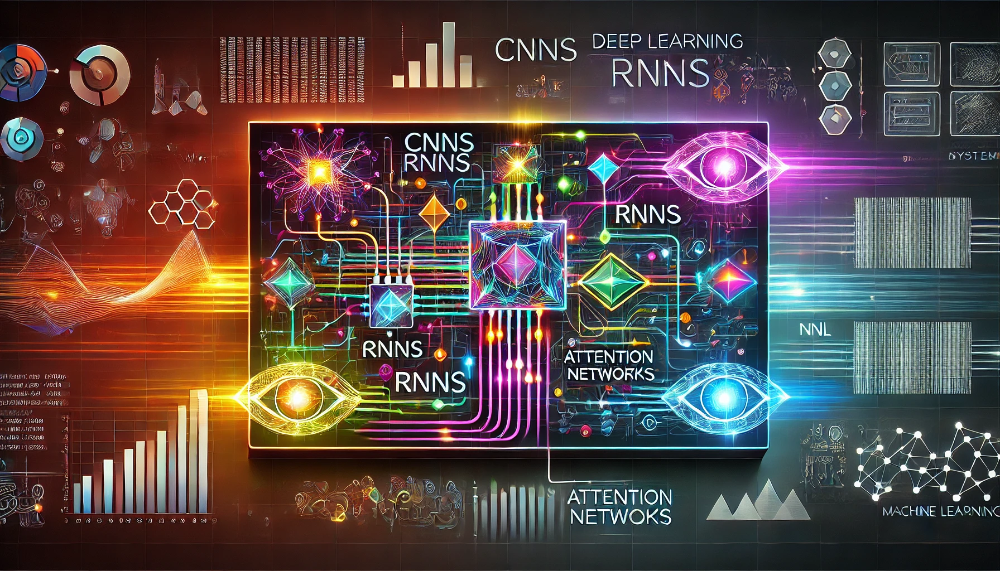

DNN Architectures
DALL·E 3 Prompt: A visually striking rectangular image illustrating the interplay between deep learning algorithms like CNNs, RNNs, and Attention Networks, interconnected with machine learning systems. The composition features neural network diagrams blending seamlessly with representations of computational systems such as processors, graphs, and data streams. Bright neon tones contrast against a dark futuristic background, symbolizing cutting-edge technology and intricate system complexity.

Purpose
What recurring patterns emerge across modern deep learning architectures, and how do these patterns enable systematic approaches to AI system design?
Deep learning architectures represent a convergence of computational patterns that form the building blocks of modern AI systems. These foundational patterns, ranging from convolutional structures to attention mechanisms, reveal how complex models arise from simple, repeatable components. The examination of these architectural elements provides insights into the systematic construction of flexible, efficient AI systems, establishing core principles that influence every aspect of system design and deployment. These structural insights illuminate the path toward creating scalable, adaptable solutions across diverse application domains.
Map fundamental neural network concepts to deep learning architectures (dense, spatial, temporal, attention-based).
Analyze how architectural patterns shape computational and memory demands.
Evaluate system-level impacts of architectural choices on system attributes.
Compare architectures’ hardware mapping and identify optimization strategies.
Assess trade-offs between complexity and system needs for specific applications.
Overview
Deep learning architecture stands for specific representation or organizations of neural network components, the neurons, weights, and connections (as introduced in Chapter 3), arranged to efficiently process different types of patterns in data. While the previous chapter established the fundamental building blocks of neural networks, in this chapter we examine how these components are structured into architectures that map efficiently to computer systems.
Neural network architectures have evolved to address specific pattern processing challenges. Whether processing arbitrary feature relationships, exploiting spatial patterns, managing temporal dependencies, or handling dynamic information flow, each architectural pattern emerged from particular computational needs. These architectures, from a computer systems perspective, require an examination of how their computational patterns map to system resources.
Most often the architectures are discussed in terms of their algorithmic structures (MLPs, CNNs, RNNs, Transformers). However, in this chapter we take a more fundamental approach by examining how their computational patterns map to hardware resources. Each section analyzes how specific pattern processing needs influence algorithmic structure and how these structures map to computer system resources. The implications for computer system design require examining how their computational patterns map to hardware resources. The mapping from algorithmic requirements to computer system design involves several key considerations:
- Memory access patterns: How data moves through the memory hierarchy
- Computation characteristics: The nature and organization of arithmetic operations
- Data movement: Requirements for on-chip and off-chip data transfer
- Resource utilization: How computational and memory resources are allocated
For example, dense connectivity patterns generate different memory bandwidth demands than localized processing structures. Similarly, stateful processing creates distinct requirements for on-chip memory organization compared to stateless operations. Getting a firm grasp on these mappings is important for modern computer architects and system designers who must implement these algorithms efficiently in hardware.
Multi-Layer Perceptrons: Dense Pattern Processing
Multi-Layer Perceptrons (MLPs) represent the most direct extension of neural networks into deep architectures. Unlike more specialized networks, MLPs process each input element with equal importance, making them versatile but computationally intensive. Their architecture, while simple, establishes fundamental computational patterns that appear throughout deep learning systems. These patterns were initially formalized by the introduction of the Universal Approximation Theorem (UAT) (Cybenko 1992; Hornik, Stinchcombe, and White 1989), which states that a sufficiently large MLP with non-linear activation functions can approximate any continuous function on a compact domain, given suitable weights and biases.
When applied to the MNIST handwritten digit recognition challenge, an MLP reveals its computational power by transforming a complex \(28\times 28\) pixel image into a precise digit classification. By treating each of the 784 pixels as an equally weighted input, the network learns to decompose visual information through a systematic progression of layers, converting raw pixel intensities into increasingly abstract representations that capture the essential characteristics of handwritten digits.
Pattern Processing Needs
Deep learning systems frequently encounter problems where any input feature could potentially influence any output, as there are no inherent constraints on these relationships. Consider analyzing financial market data: any economic indicator might affect any market outcome or in natural language processing, where the meaning of a word could depend on any other word in the sentence. These scenarios demand an architectural pattern capable of learning arbitrary relationships across all input features.
Dense pattern processing addresses this fundamental need by enabling several key capabilities. First, it allows unrestricted feature interactions where each output can depend on any combination of inputs. Second, it facilitates learned feature importance, allowing the system to determine which connections matter rather than having them prescribed. Finally, it provides adaptive representation, enabling the network to reshape its internal representations based on the data.
For example, in the MNIST digit recognition task, while humans might focus on specific parts of digits (like loops in ‘6’ or crossings in ‘8’), we cannot definitively say which pixel combinations are important for classification. A ‘7’ written with a serif could share pixel patterns with a ‘2’, while variations in handwriting mean discriminative features might appear anywhere in the image. This uncertainty about feature relationships necessitates a dense processing approach where every pixel can potentially influence the classification decision.
Algorithmic Structure
To enable unrestricted feature interactions, MLPs implement a direct algorithmic solution: connect everything to everything. This is realized through a series of fully-connected layers, where each neuron connects to every neuron in adjacent layers. The dense connectivity pattern translates mathematically into matrix multiplication operations. As shown in Figure 1, each layer transforms its input through matrix multiplication followed by element-wise activation: \[ \mathbf{h}^{(l)} = f\big(\mathbf{W}^{(l)}\mathbf{h}^{(l-1)} + \mathbf{b}^{(l)}\big) \]
\begin{tikzpicture}[line join=round,font=\usefont{T1}{phv}{m}{n}]
\tikzset{%
Line/.style={line width=0.35pt,black!60}
}
\tikzset{
box/.pic={
\pgfkeys{/box/.cd, #1}
\foreach \x in {1,...,\columns}{
\foreach \y in {1,...,\rows}{
%
\node[draw=black, fill=\ffill, minimum width=\cellsize,
minimum height=\cellheight, line width=\linewidth] (cell-\x-\y\br) at (\x*\cellsize,-\y*\cellheight) {};
}
}
} }
\pgfkeys{
/box/.cd,
cellsize/.store in=\cellsize,
linewidth/.store in=\linewidth,
cellheight/.store in=\cellheight,
columns/.store in=\columns,
br/.store in=\br,
ffill/.store in=\ffill,
rows/.store in=\rows,
columns=1,
rows=3,
br=A,
ffill=GreenL!22,
cellsize=8mm,
cellheight=8mm,
linewidth=0.75pt
}
\def\radius{4mm}
\pic at (0,0) {box={columns=1,rows=4,br=A}};
\pic at (2,0) {box={columns=5,rows=4,br=B,}};
\pic at (7,4mm) {box={columns=1,rows=5,br=C}};
\pic at (9,4mm) {box={columns=2,rows=5,br=D}};
\pic at (12,-8mm) {box={columns=1,rows=2,br=E}};
%
\foreach \x in {1,...,4}{
\node[fill=green!80!black!80,minimum size=\cellsize,draw, line width=0.75pt]at(cell-2-\x B){};
}
\node[fill=green!80!black!80,minimum size=\cellsize,draw, line width=0.75pt]at(cell-1-2C){};
\begin{scope}[scale=1, every node/.append style={transform shape},
local bounding box=D1,shift={($(cell-1-3A)+(-4.5,-2.6)$)}]
\foreach \x in {1,...,5}{
\coordinate (2ball-\x) at (0,\x);
\shade[shading=ball,ball color=red!50!yellow] (0,\x) circle (\radius);
}
\shade[shading=ball,ball color=green!50!green] (0,4) circle (\radius);
\foreach \x/\i in {2.5/1,3.5/2}{
\coordinate (3ball-\i) at (2,\x);
\shade[shading=ball,ball color=red!50!yellow] (2,\x) circle (\radius)coordinate(3C\i);
}
\foreach \x/\i in {1.5/1,2.5/2,3.5/3,4.5/4}{
\coordinate (1ball-\i) at (-2,\x);
\shade[shading=ball,ball color=red!50!yellow] (-2,\x) circle (\radius)coordinate(1C\i);
}
% Connect 1. and 2. column
\foreach \x in {1,2,3,4}{
\foreach \y in {1,2,3,5}{
\edef\from{1ball-\x}
\edef\to{2ball-\y}
\path let
\p1 = (\from),
\p2 = (\to),
\n1 = {atan2(\y2-\y1,\x2-\x1)}
in
coordinate (from) at ($ (\from) + (\n1:\radius) $)
coordinate (to) at ($ (\to) + (\n1+180:\radius) $);
\draw[Line] (from) -- (to);
}
}
%red line
\foreach \x in {1,2,3,4}{
\foreach \y in {4}{
\edef\from{1ball-\x}
\edef\to{2ball-\y}
\path let
\p1 = (\from),
\p2 = (\to),
\n1 = {atan2(\y2-\y1,\x2-\x1)}
in
coordinate (from) at ($ (\from) + (\n1:\radius) $)
coordinate (to) at ($ (\to) + (\n1+180:\radius) $);
\draw[Line,red] (from) -- (to);
}
}
% Connect 2. and 3. column
\foreach \x in {1,2,3,4,5}{
\foreach \y in {1,2}{
\edef\from{2ball-\x}
\edef\to{3ball-\y}
\path let
\p1 = (\from),
\p2 = (\to),
\n1 = {atan2(\y2-\y1,\x2-\x1)}
in
coordinate (from) at ($ (\from) + (\n1:\radius) $)
coordinate (to) at ($ (\to) + (\n1+180:\radius) $);
\draw[Line] (from) -- node[inner sep=0pt](L\x){}(to);
}
}
%%
\draw[latex-](L5)--++(30:1)node[above]{Weighted Edge};
\draw[latex-](2ball-4)--++(180:2.5)node[left](NE){Neuron};
\draw[thick,latex-](cell-2-2B.center)--++(90:1.52)node[above]{Weighted Edge};
\draw[thick,latex-](cell-1-2C.center)--++(90:1.52)node[above]{Neuron};
%
\node[font=\huge]at($(cell-1-2A.south east)!0.5!(cell-1-2B.south west)$){$\times$};
\node[font=\huge]at($(cell-1-3C.east)!0.5!(cell-1-3D.west)$){$\times$};
%
\node[single arrow, draw=red, fill=red,
minimum width = 10pt, single arrow head extend=3pt,
minimum height=7mm]at($(cell-5-2B.south east)!0.5!(cell-1-3C.west)$){};
\node[single arrow, draw=red, fill=red,
minimum width = 10pt, single arrow head extend=3pt,
minimum height=7mm]at($(cell-2-3D.east)!0.5!(cell-1-1E.south west)$){};
\end{scope}
\path(NE.west)--++(270:4.0)coordinate(IL1)-|coordinate(HL1)($(1ball-1)!0.4!(2ball-1)$);
\path(NE)--++(270:4.0)-|coordinate(OL1)($(2ball-1)!0.55!(3ball-1)$);
\path(NE)--++(270:4.0)-|coordinate(OL2)($(3ball-1)!0.5!(cell-1-2A.south east)$);
\path(NE)--++(270:4.0)-|coordinate(IL2)($(3ball-1)!0.6!(cell-1-2A.south east)$);
\path[blue, line width=2pt](IL2)-|coordinate(HL2)($(cell-1-2A.south east)!0.7!(cell-1-2B.south west)$);
\path[blue, line width=2pt](IL2)-|coordinate(OL3)($(cell-1-3C.east)!0.5!(cell-1-3D.west)$);
\path[blue, line width=2pt](IL2)-|coordinate(OL4)(cell-1-2E.south east);
\draw[red,line width=2pt](IL1)--node[below,text=black]{Input Layer}(HL1);
\draw[cyan,line width=2pt](HL1)--node[below,text=black]{Hidden Layer}(OL1);
\draw[brown,line width=2pt](OL1)--node[below,text=black]{Output Layer}(OL2);
%
\draw[red,line width=2pt](IL2)--node[below,text=black]{Input Layer}(HL2);
\draw[cyan,line width=2pt](HL2)--node[below,text=black]{Hidden Layer}(OL3);
\draw[brown,line width=2pt](OL3)--node[below,text=black]{Output Layer}(OL4);
\end{tikzpicture}The dimensions of these operations reveal the computational scale of dense pattern processing:
- Input vector: \(\mathbf{h}^{(0)} \in \mathbb{R}^{d_{\text{in}}}\) represents all potential input features
- Weight matrices: \(\mathbf{W}^{(l)} \in \mathbb{R}^{d_{\text{out}} \times d_{\text{in}}}\) capture all possible input-output relationships
- Output vector: \(\mathbf{h}^{(l)} \in \mathbb{R}^{d_{\text{out}}}\) produces transformed representations
In the MNIST example, this means:
- Each 784-dimensional input (\(28\times 28\) pixels) connects to every neuron in the first hidden layer
- A hidden layer with 100 neurons requires a \(784\times 100\) weight matrix
- Each weight in this matrix is a learnable relationship between an input pixel and a hidden feature
This algorithmic structure directly addresses our need for arbitrary feature relationships but creates specific computational patterns that must be handled efficiently by computer systems.
Computational Mapping
The elegant mathematical representation of dense matrix multiplication maps to specific computational patterns that systems must handle. Let’s examine how this mapping progresses from mathematical abstraction to computational reality.
The first implementation is shown in Listing 1. The function mlp_layer_matrix directly mirrors our mathematical equation. It uses high-level matrix operations (matmul) to express the computation in a single line, hiding the underlying complexity. This is the style commonly used in deep learning frameworks, where optimized libraries handle the actual computation.
def mlp_layer_matrix(X, W, b):
# X: input matrix (batch_size × num_inputs)
# W: weight matrix (num_inputs × num_outputs)
# b: bias vector (num_outputs)
H = activation(matmul(X, W) + b)
# One clean line of math
return HThe second implementation, mlp_layer_compute (shown in Listing 2), exposes the actual computational pattern through nested loops. This version shows us what really happens when we compute a layer’s output: we process each sample in the batch, computing each output neuron by accumulating weighted contributions from all inputs.
def mlp_layer_compute(X, W, b):
# Process each sample in the batch
for batch in range(batch_size):
# Compute each output neuron
for out in range(num_outputs):
# Initialize with bias
Z[batch,out] = b[out]
# Accumulate weighted inputs
for in_ in range(num_inputs):
Z[batch,out] += X[batch,in_] * W[in_,out]
H = activation(Z)
return HThis translation from mathematical abstraction to concrete computation exposes how dense matrix multiplication decomposes into nested loops of simpler operations. The outer loop processes each sample in the batch, while the middle loop computes values for each output neuron. Within the innermost loop, the system performs repeated multiply-accumulate operations, combining each input with its corresponding weight.
In the MNIST example, each output neuron requires 784 multiply-accumulate operations and at least 1,568 memory accesses (784 for inputs, 784 for weights). While actual implementations use sophisticated optimizations through libraries like BLAS or cuBLAS, these fundamental patterns drive key system design decisions.
System Implications
When analyzing how computational patterns impact computer systems, we typically examine three fundamental dimensions: memory requirements, computation needs, and data movement. This framework enables a systematic analysis of how algorithmic patterns influence system design decisions. We will use this framework for analyzing other network architectures, allowing us to compare and contrast their different characteristics.
Memory Requirements
For dense pattern processing, the memory requirements stem from storing and accessing weights, inputs, and intermediate results. In our MNIST example, connecting our 784-dimensional input layer to a hidden layer of 100 neurons requires 78,400 weight parameters. Each forward pass must access all these weights, along with input data and intermediate results. The all-to-all connectivity pattern means there’s no inherent locality in these accesses—every output needs every input and its corresponding weights.
These memory access patterns suggest opportunities for optimization through careful data organization and reuse. Modern processors handle these patterns differently; CPUs leverage their cache hierarchy for data reuse, while GPUs employ specialized memory hierarchies designed for high-bandwidth access. Deep learning frameworks abstract these hardware-specific details through optimized matrix multiplication implementations.
Computation Needs
The core computation revolves around multiply-accumulate operations1 arranged in nested loops. Each output value requires as many multiply-accumulates as there are inputs. For MNIST, this means 784 multiply-accumulates per output neuron. With 100 neurons in our hidden layer, we’re performing 78,400 multiply-accumulates for a single input image. While these operations are simple, their volume and arrangement create specific demands on processing resources.
1 Multiply-Accumulate Operation: A basic operation in digital computing and neural networks that multiplies two numbers and adds the result to an accumulator.
This computational structure lends itself to particular optimization strategies in modern hardware. The dense matrix multiplication pattern can be efficiently parallelized across multiple processing units, with each handling different subsets of neurons. Modern hardware accelerators take advantage of this through specialized matrix multiplication units, while deep learning frameworks automatically convert these operations into optimized BLAS (Basic Linear Algebra Subprograms) calls. CPUs and GPUs can both exploit cache locality by carefully tiling the computation to maximize data reuse, though their specific approaches differ based on their architectural strengths.
Data Movement
The all-to-all connectivity pattern in MLPs creates significant data movement requirements. Each multiply-accumulate operation needs three pieces of data: an input value, a weight value, and the running sum. For our MNIST example layer, computing a single output value requires moving 784 inputs and 784 weights to wherever the computation occurs. This movement pattern repeats for each of the 100 output neurons, creating substantial data transfer demands between memory and compute units.
The predictable nature of these data movement patterns enables strategic data staging and transfer optimizations. Different architectures address this challenge through various mechanisms; CPUs use sophisticated prefetching and multi-level caches; meanwhile, GPUs employ high-bandwidth memory systems and latency hiding through massive threading. Deep learning frameworks orchestrate these data movements through optimized memory management systems.
Convolutional Neural Networks: Spatial Pattern Processing
While MLPs treat each input element independently, many real-world data types exhibit strong spatial relationships. Images, for example, derive their meaning from the spatial arrangement of pixels—a pattern of edges and textures that form recognizable objects. Audio signals show temporal patterns of frequency components, and sensor data often contains spatial or temporal correlations. These spatial relationships suggest that treating every input-output connection with equal importance, as MLPs do, might not be the most effective approach.
Pattern Processing Needs
Spatial pattern processing addresses scenarios where the relationship between data points depends on their relative positions or proximity. Consider processing a natural image: a pixel’s relationship with its neighbors is important for detecting edges, textures, and shapes. These local patterns then combine hierarchically to form more complex features—edges form shapes, shapes form objects, and objects form scenes.
This hierarchical spatial pattern processing appears across many domains. In computer vision, local pixel patterns form edges and textures that combine into recognizable objects. Speech processing relies on patterns across nearby time segments to identify phonemes and words. Sensor networks analyze correlations between physically proximate sensors to understand environmental patterns. Medical imaging depends on recognizing tissue patterns that indicate biological structures.
Taking image processing as an example, if we want to detect a cat in an image, certain spatial patterns must be recognized: the triangular shape of ears, the round contours of the face, the texture of fur. Importantly, these patterns maintain their meaning regardless of where they appear in the image—a cat is still a cat whether it’s in the top-left or bottom-right corner. This suggests two key requirements for spatial pattern processing: the ability to detect local patterns and the ability to recognize these patterns regardless of their position.
\begin{tikzpicture}[line join=round,font=\usefont{T1}{phv}{m}{n}]
\tikzset{
Line/.style={line width=0.5pt,black!50,text=black},
LineD/.style={line width=0.5pt,black!50,text=black,dashed},
}
\tikzset{
channel/.pic={
\pgfkeys{/channel/.cd, #1}
\begin{scope}[yscale=\scalefac,xscale=\scalefac,every node/.append style={scale=\scalefac}]
\node[rectangle,draw=\channelcolor,line width=1pt,fill=\channelcolor!10,
minimum width=46,minimum height=56](\picname){};
\end{scope}
}
}
\pgfkeys{
/channel/.cd,
channelcolor/.store in=\channelcolor,
scalefac/.store in=\scalefac,
picname/.store in=\picname,
channelcolor=BrownLine,
scalefac=1,
picname=C
}
%circles sty
\tikzset{
circles/.pic={
\pgfkeys{/channel/.cd, #1}
\node[circle,draw=\channelcolor,line width=1pt,fill=\channelcolor!10,
minimum size=6mm](\picname){};
}
}
%Zebra sty
\tikzset{
zebra/.pic={
\pgfkeys{/zebra/.cd, #1}
\definecolor{cfefefe}{RGB}{254,254,254}
\definecolor{c373435}{RGB}{55,52,53}
\begin{scope}[yscale=\globalscale,xscale=\globalscale,every node/.append style={scale=\globalscale}]
\path[fill=c373435,shift={(9.6358, -1.7033)}] (0.0, 31.4325).. controls (0.0427, 31.4009) and (0.0852, 31.369) .. (0.1273, 31.3366).. controls (0.1423, 31.3254) and (0.1573, 31.3141) .. (0.1728, 31.3026).. controls (0.2651, 31.2301) and (0.3393, 31.1462) .. (0.4151, 31.0574).. controls (0.4863, 30.9754) and (0.5596, 30.8955) .. (0.6333, 30.8157).. controls (0.6467, 30.8012) and (0.66, 30.7868) .. (0.6737, 30.7719).. controls (0.7542, 30.6847) and (0.8368, 30.6) .. (0.9211, 30.5164).. controls (0.9461, 30.4904) and (0.9461, 30.4904) .. (0.9717, 30.4639).. controls (0.9867, 30.4485) and (1.0016, 30.433) .. (1.017, 30.4172).. controls (1.0321, 30.4015) and (1.0471, 30.3858) .. (1.0627, 30.3696).. controls (1.1076, 30.325) and (1.1076, 30.325) .. (1.1857, 30.3047).. controls (1.1773, 30.338) and (1.169, 30.3713) .. (1.1604, 30.4056).. controls (1.0895, 30.6895) and (1.0185, 30.9733) .. (0.9475, 31.2572).. controls (0.9423, 31.2765) and (0.9371, 31.2958) .. (0.9317, 31.3157).. controls (0.9141, 31.3941) and (0.9166, 31.4684) .. (0.9211, 31.5483).. controls (0.9924, 31.6196) and (1.0315, 31.6099) .. (1.1311, 31.6111).. controls (1.5189, 31.6038) and (1.7672, 31.4046) .. (2.0276, 31.1361).. controls (2.5302, 30.5776) and (2.7987, 29.8516) .. (2.9904, 29.1373).. controls (3.0848, 28.7935) and (3.1926, 28.4518) .. (3.3106, 28.1153).. controls (3.3197, 28.0891) and (3.3197, 28.0891) .. (3.329, 28.0624).. controls (3.3457, 28.0158) and (3.3637, 27.9696) .. (3.3817, 27.9235).. controls (3.3965, 27.8817) and (3.3965, 27.8817) .. (3.4117, 27.839).. controls (3.4831, 27.7316) and (3.5705, 27.7011) .. (3.6876, 27.6539).. controls (3.7178, 27.6408) and (3.7178, 27.6408) .. (3.7487, 27.6275).. controls (3.8966, 27.5649) and (4.0474, 27.5172) .. (4.2019, 27.4737).. controls (4.1102, 27.846) and (4.0172, 28.2179) .. (3.9175, 28.5882).. controls (3.91, 28.6159) and (3.9026, 28.6436) .. (3.8949, 28.6721).. controls (3.8319, 28.9046) and (3.7693, 29.1311) .. (3.6727, 29.3522).. controls (3.6329, 29.4621) and (3.596, 29.5729) .. (3.5588, 29.6837).. controls (3.5098, 29.8269) and (3.4523, 29.9591) .. (3.3817, 30.093).. controls (3.333, 30.0443) and (3.3518, 29.9759) .. (3.3516, 29.911).. controls (3.3516, 29.8892) and (3.3517, 29.8673) .. (3.3517, 29.8448).. controls (3.3517, 29.8224) and (3.3517, 29.7999) .. (3.3517, 29.7768).. controls (3.3516, 29.7292) and (3.3517, 29.6815) .. (3.3518, 29.6339).. controls (3.3519, 29.5614) and (3.3518, 29.489) .. (3.3516, 29.4165).. controls (3.3516, 29.3702) and (3.3517, 29.3239) .. (3.3517, 29.2776).. controls (3.3517, 29.2453) and (3.3517, 29.2453) .. (3.3516, 29.2123).. controls (3.3521, 29.0889) and (3.362, 28.9717) .. (3.3817, 28.8495).. controls (3.3833, 28.806) and (3.384, 28.7624) .. (3.3834, 28.7189).. controls (3.3831, 28.6984) and (3.3829, 28.678) .. (3.3826, 28.657).. controls (3.3822, 28.6344) and (3.3822, 28.6344) .. (3.3817, 28.6114).. controls (3.2533, 28.7619) and (3.185, 28.9226) .. (3.1237, 29.1091).. controls (3.117, 29.1295) and (3.1103, 29.1498) .. (3.1034, 29.1708).. controls (2.925, 29.7222) and (2.7421, 30.3033) .. (2.7202, 30.8868).. controls (2.7192, 30.9105) and (2.7181, 30.9341) .. (2.717, 30.9585).. controls (2.7124, 31.1535) and (2.7119, 31.3674) .. (2.815, 31.5382).. controls (2.8862, 31.6082) and (2.9232, 31.6166) .. (3.0215, 31.6176).. controls (3.0495, 31.6169) and (3.0495, 31.6169) .. (3.078, 31.6162).. controls (3.1079, 31.6162) and (3.1079, 31.6162) .. (3.1383, 31.6162).. controls (3.2039, 31.6162) and (3.2694, 31.6151) .. (3.335, 31.6141).. controls (3.3805, 31.6138) and (3.426, 31.6137) .. (3.4716, 31.6135).. controls (3.5913, 31.613) and (3.711, 31.6117) .. (3.8307, 31.6103).. controls (3.9529, 31.6089) and (4.0751, 31.6083) .. (4.1973, 31.6076).. controls (4.4369, 31.6062) and (4.6766, 31.604) .. (4.9163, 31.6012).. controls (4.9378, 31.4702) and (4.943, 31.4044) .. (4.8898, 31.2837).. controls (4.8421, 31.0837) and (4.8146, 30.8783) .. (4.784, 30.6751).. controls (4.7798, 30.6479) and (4.7757, 30.6206) .. (4.7714, 30.5925).. controls (4.6406, 29.6875) and (4.6362, 28.7165) .. (4.8105, 27.8176).. controls (4.8151, 27.7934) and (4.8198, 27.7691) .. (4.8246, 27.7441).. controls (4.8499, 27.6171) and (4.8772, 27.4915) .. (4.9163, 27.3678).. controls (4.9244, 27.3406) and (4.9326, 27.3133) .. (4.941, 27.2852).. controls (5.0799, 27.0918) and (5.3945, 27.0356) .. (5.6125, 26.9643).. controls (5.6401, 26.9551) and (5.6678, 26.9458) .. (5.6962, 26.9362).. controls (5.8245, 26.8938) and (5.9465, 26.8586) .. (6.0805, 26.8387).. controls (6.0841, 27.0916) and (6.0745, 27.3411) .. (6.0578, 27.5934).. controls (6.0091, 28.3459) and (6.0394, 29.0783) .. (6.1069, 29.8285).. controls (6.1097, 29.8596) and (6.1125, 29.8908) .. (6.1154, 29.9229).. controls (6.1213, 29.9885) and (6.1273, 30.054) .. (6.1334, 30.1195).. controls (5.5664, 29.5624) and (5.3134, 28.8614) .. (5.2083, 28.0876).. controls (5.1945, 27.9896) and (5.1837, 27.9277) .. (5.128, 27.8441).. controls (5.0486, 27.8705) and (5.0486, 27.8705) .. (5.0205, 27.9238).. controls (4.7982, 28.558) and (4.7702, 29.2746) .. (4.8898, 29.9343).. controls (4.8957, 29.9715) and (4.9015, 30.0087) .. (4.9073, 30.0459).. controls (4.9939, 30.59) and (5.1647, 31.1603) .. (5.5777, 31.5483).. controls (5.6618, 31.5998) and (5.7256, 31.6079) .. (5.8235, 31.608).. controls (5.8514, 31.6082) and (5.8793, 31.6084) .. (5.908, 31.6085).. controls (5.953, 31.6084) and (5.953, 31.6084) .. (5.9988, 31.6082).. controls (6.0297, 31.6083) and (6.0605, 31.6083) .. (6.0923, 31.6084).. controls (6.1575, 31.6084) and (6.2226, 31.6083) .. (6.2878, 31.6081).. controls (6.3878, 31.6078) and (6.4879, 31.6081) .. (6.5879, 31.6084).. controls (6.6512, 31.6084) and (6.7144, 31.6083) .. (6.7777, 31.6082).. controls (6.8077, 31.6083) and (6.8378, 31.6084) .. (6.8688, 31.6085).. controls (6.8965, 31.6084) and (6.9242, 31.6082) .. (6.9528, 31.608).. controls (6.9773, 31.608) and (7.0018, 31.6079) .. (7.027, 31.6079).. controls (7.0859, 31.6012) and (7.0859, 31.6012) .. (7.1388, 31.5483).. controls (7.1293, 31.4369) and (7.0978, 31.344) .. (7.0535, 31.2421).. controls (7.0416, 31.2143) and (7.0296, 31.1865) .. (7.0172, 31.1578).. controls (7.0044, 31.1284) and (6.9916, 31.099) .. (6.9784, 31.0687).. controls (6.9519, 31.0068) and (6.9254, 30.9449) .. (6.8989, 30.883).. controls (6.8858, 30.8523) and (6.8726, 30.8217) .. (6.8591, 30.7901).. controls (6.657, 30.3214) and (6.657, 30.3214) .. (6.5302, 29.8285).. controls (6.6047, 29.8946) and (6.6473, 29.9684) .. (6.6956, 30.055).. controls (6.8695, 30.358) and (6.8695, 30.358) .. (6.98, 30.4899).. controls (6.9975, 30.4899) and (7.015, 30.4899) .. (7.033, 30.4899).. controls (7.0396, 30.5053) and (7.0462, 30.5206) .. (7.053, 30.5364).. controls (7.1877, 30.7796) and (7.478, 30.912) .. (7.7299, 30.9954).. controls (8.1759, 31.1044) and (8.8968, 31.0899) .. (9.3084, 30.8603).. controls (9.3067, 30.8137) and (9.3067, 30.8137) .. (9.2819, 30.7545).. controls (9.2203, 30.7164) and (9.1617, 30.6847) .. (9.0967, 30.6536).. controls (8.9312, 30.5703) and (8.7884, 30.478) .. (8.6469, 30.3576).. controls (8.625, 30.3412) and (8.6031, 30.3247) .. (8.5805, 30.3077).. controls (8.3838, 30.1407) and (8.3003, 29.9209) .. (8.2765, 29.6697).. controls (8.3561, 29.6457) and (8.398, 29.6394) .. (8.4772, 29.668).. controls (8.5016, 29.6811) and (8.5259, 29.6942) .. (8.551, 29.7077).. controls (8.5789, 29.7225) and (8.6069, 29.7372) .. (8.6356, 29.7524).. controls (8.6813, 29.7774) and (8.7269, 29.8023) .. (8.7724, 29.8274).. controls (9.4666, 30.2093) and (10.2314, 30.4734) .. (11.0329, 30.3266).. controls (11.097, 30.2975) and (11.1092, 30.263) .. (11.134, 30.1989).. controls (11.049, 30.1023) and (10.9533, 30.0499) .. (10.8396, 29.9938).. controls (10.5212, 29.8296) and (10.2005, 29.5968) .. (10.0657, 29.2515).. controls (10.0287, 29.1214) and (10.0299, 29.0228) .. (10.0889, 28.8975).. controls (10.2892, 28.6722) and (10.5797, 28.5947) .. (10.8694, 28.5585).. controls (10.9985, 28.5519) and (11.1272, 28.5506) .. (11.2564, 28.5504).. controls (11.3207, 28.5503) and (11.385, 28.5498) .. (11.4493, 28.5493).. controls (11.6319, 28.5479) and (11.8146, 28.547) .. (11.9972, 28.5464).. controls (12.9803, 28.5425) and (12.9803, 28.5425) .. (13.4094, 28.4526).. controls (13.452, 28.4443) and (13.4946, 28.436) .. (13.5371, 28.4277).. controls (13.9198, 28.3531) and (14.3389, 28.2446) .. (14.653, 28.0028).. controls (14.6878, 27.9443) and (14.6878, 27.9443) .. (14.7059, 27.897).. controls (14.6377, 27.8114) and (14.5751, 27.8014) .. (14.4694, 27.7829).. controls (13.8545, 27.6612) and (13.2491, 27.4341) .. (12.748, 27.0503).. controls (12.7392, 27.0329) and (12.7305, 27.0154) .. (12.7215, 26.9974).. controls (12.8098, 27.0097) and (12.8978, 27.0223) .. (12.9856, 27.038).. controls (13.6213, 27.1426) and (14.2736, 27.0902) .. (14.8911, 26.918).. controls (14.9199, 26.9102) and (14.9487, 26.9023) .. (14.9783, 26.8942).. controls (15.4527, 26.7567) and (16.2756, 26.4887) .. (16.5406, 26.0373).. controls (16.5463, 26.0223) and (16.5521, 26.0074) .. (16.558, 25.992).. controls (16.5315, 25.9655) and (16.5315, 25.9655) .. (16.4637, 25.9646).. controls (16.4337, 25.9656) and (16.4037, 25.9666) .. (16.3727, 25.9676).. controls (15.7533, 25.9821) and (15.1624, 25.9354) .. (14.6, 25.648).. controls (14.5826, 25.6306) and (14.5651, 25.6131) .. (14.5471, 25.5951).. controls (14.6676, 25.61) and (14.788, 25.6255) .. (14.9083, 25.6415).. controls (15.9588, 25.7788) and (16.89, 25.6242) .. (17.7543, 24.9708).. controls (18.3652, 24.4899) and (18.3652, 24.4899) .. (18.4303, 24.2506).. controls (18.4323, 24.2315) and (18.4344, 24.2125) .. (18.4365, 24.1928).. controls (18.3358, 24.1661) and (18.2779, 24.1685) .. (18.1802, 24.2028).. controls (17.8648, 24.2951) and (17.5116, 24.298) .. (17.193, 24.2193).. controls (17.1842, 24.2106) and (17.1755, 24.2018) .. (17.1665, 24.1928).. controls (17.1819, 24.1897) and (17.1973, 24.1865) .. (17.2132, 24.1832).. controls (17.5439, 24.1141) and (17.8621, 24.0379) .. (18.1719, 23.9018).. controls (18.189, 23.8943) and (18.2061, 23.8869) .. (18.2237, 23.8792).. controls (18.4411, 23.7823) and (18.6401, 23.6661) .. (18.835, 23.5297).. controls (18.8624, 23.5106) and (18.8624, 23.5106) .. (18.8904, 23.4911).. controls (19.0158, 23.4005) and (19.1233, 23.299) .. (19.2302, 23.1874).. controls (19.2521, 23.1661) and (19.2739, 23.1449) .. (19.2964, 23.1229).. controls (19.3182, 23.1006) and (19.34, 23.0782) .. (19.3625, 23.0551).. controls (19.3791, 23.0381) and (19.3957, 23.0212) .. (19.4128, 23.0037).. controls (19.43, 22.9852) and (19.4473, 22.9667) .. (19.4651, 22.9476).. controls (19.4814, 22.9304) and (19.4977, 22.9132) .. (19.5145, 22.8955).. controls (19.5477, 22.8435) and (19.5477, 22.8435) .. (19.5366, 22.7873).. controls (19.529, 22.7627) and (19.529, 22.7627) .. (19.5213, 22.7376).. controls (19.4998, 22.737) and (19.4783, 22.7363) .. (19.4562, 22.7356).. controls (19.3583, 22.7325) and (19.2604, 22.7293) .. (19.1624, 22.7261).. controls (19.1287, 22.725) and (19.0949, 22.724) .. (19.0601, 22.7229).. controls (19.0272, 22.7218) and (18.9944, 22.7207) .. (18.9606, 22.7195).. controls (18.9305, 22.7186) and (18.9005, 22.7176) .. (18.8695, 22.7166).. controls (18.7077, 22.7178) and (18.7077, 22.7178) .. (18.5688, 22.6583).. controls (18.5966, 22.6555) and (18.5966, 22.6555) .. (18.6249, 22.6526).. controls (18.7104, 22.6439) and (18.7959, 22.6345) .. (18.8813, 22.6252).. controls (18.925, 22.6208) and (18.925, 22.6208) .. (18.9695, 22.6164).. controls (19.4656, 22.5608) and (19.4656, 22.5608) .. (19.6007, 22.3937).. controls (19.6309, 22.3029) and (19.6325, 22.2297) .. (19.6337, 22.134).. controls (19.6344, 22.1022) and (19.6351, 22.0704) .. (19.6358, 22.0376).. controls (19.6223, 21.8917) and (19.5745, 21.8028) .. (19.4643, 21.7085).. controls (19.4312, 21.6825) and (19.3978, 21.6568) .. (19.3642, 21.6313).. controls (19.3465, 21.6176) and (19.3288, 21.6039) .. (19.3106, 21.5897).. controls (19.2576, 21.5487) and (19.2043, 21.5081) .. (19.1509, 21.4676).. controls (19.136, 21.4563) and (19.1212, 21.445) .. (19.106, 21.4333).. controls (18.9705, 21.3299) and (18.8332, 21.2293) .. (18.6945, 21.1303).. controls (18.496, 20.9865) and (18.3078, 20.83) .. (18.119, 20.6739).. controls (18.1021, 20.6599) and (18.0852, 20.646) .. (18.0677, 20.6317).. controls (18.0202, 20.5924) and (17.9728, 20.553) .. (17.9255, 20.5135).. controls (17.9044, 20.496) and (17.9044, 20.496) .. (17.8828, 20.4781).. controls (17.8105, 20.4172) and (17.7432, 20.3595) .. (17.6957, 20.277).. controls (17.7044, 20.2508) and (17.7131, 20.2246) .. (17.7221, 20.1976).. controls (17.7396, 20.1976) and (17.757, 20.1976) .. (17.775, 20.1976).. controls (17.775, 20.1802) and (17.775, 20.1627) .. (17.775, 20.1447).. controls (17.8451, 20.1072) and (17.9095, 20.0834) .. (17.9867, 20.0653).. controls (18.0264, 20.1127) and (18.0661, 20.1601) .. (18.1058, 20.2076).. controls (18.118, 20.2221) and (18.1301, 20.2366) .. (18.1427, 20.2516).. controls (18.213, 20.3358) and (18.2808, 20.4212) .. (18.3472, 20.5085).. controls (18.5772, 20.7975) and (18.854, 21.0633) .. (19.1509, 21.2824).. controls (19.1881, 21.3119) and (19.1881, 21.3119) .. (19.226, 21.342).. controls (19.2641, 21.3714) and (19.2641, 21.3714) .. (19.303, 21.4015).. controls (19.3258, 21.4192) and (19.3486, 21.437) .. (19.372, 21.4552).. controls (19.4544, 21.501) and (19.5078, 21.5017) .. (19.6007, 21.4941).. controls (19.6325, 21.4305) and (19.6319, 21.3878) .. (19.6339, 21.3168).. controls (19.6347, 21.2909) and (19.6354, 21.265) .. (19.6362, 21.2383).. controls (19.6388, 21.1187) and (19.6408, 20.9991) .. (19.6422, 20.8796).. controls (19.6432, 20.8168) and (19.6446, 20.7541) .. (19.6465, 20.6914).. controls (19.6656, 20.0634) and (19.6656, 20.0634) .. (19.4491, 19.811).. controls (19.4293, 19.7902) and (19.4094, 19.7693) .. (19.389, 19.7478).. controls (19.3653, 19.7155) and (19.3422, 19.6827) .. (19.3202, 19.6492).. controls (19.2937, 19.6113) and (19.2937, 19.6113) .. (19.2666, 19.5726).. controls (19.228, 19.5164) and (19.1894, 19.4601) .. (19.1509, 19.4039).. controls (19.1226, 19.3635) and (19.1226, 19.3635) .. (19.0938, 19.3222).. controls (19.0766, 19.2968) and (19.0594, 19.2713) .. (19.0417, 19.2451).. controls (19.0264, 19.2228) and (19.011, 19.2004) .. (18.9952, 19.1773).. controls (18.9582, 19.0967) and (18.9622, 19.0634) .. (18.9921, 18.9805).. controls (19.0305, 18.921) and (19.0305, 18.921) .. (19.0798, 18.8681).. controls (19.0955, 18.85) and (19.1112, 18.8318) .. (19.1274, 18.8131).. controls (19.1805, 18.7661) and (19.2139, 18.7528) .. (19.2832, 18.7424).. controls (19.3076, 18.7711) and (19.3076, 18.7711) .. (19.3325, 18.8003).. controls (19.3538, 18.8249) and (19.3752, 18.8494) .. (19.3973, 18.8747).. controls (19.4184, 18.8993) and (19.4396, 18.9238) .. (19.4614, 18.9491).. controls (19.5213, 19.007) and (19.5213, 19.007) .. (19.6007, 19.007).. controls (19.6378, 18.9328) and (19.6305, 18.8713) .. (19.6305, 18.7883).. controls (19.6307, 18.736) and (19.6307, 18.736) .. (19.6308, 18.6826).. controls (19.6308, 18.6443) and (19.6307, 18.606) .. (19.6306, 18.5677).. controls (19.6307, 18.5284) and (19.6307, 18.4892) .. (19.6307, 18.45).. controls (19.6308, 18.3676) and (19.6307, 18.2853) .. (19.6306, 18.2029).. controls (19.6304, 18.0977) and (19.6305, 17.9925) .. (19.6307, 17.8872).. controls (19.6308, 17.8061) and (19.6307, 17.725) .. (19.6307, 17.6439).. controls (19.6306, 17.6052) and (19.6307, 17.5664) .. (19.6307, 17.5276).. controls (19.6308, 17.4732) and (19.6307, 17.4187) .. (19.6305, 17.3643).. controls (19.6305, 17.3179) and (19.6305, 17.3179) .. (19.6305, 17.2706).. controls (19.627, 17.1776) and (19.6154, 17.088) .. (19.6007, 16.9962).. controls (19.5303, 17.0666) and (19.5157, 17.133) .. (19.4849, 17.2277).. controls (19.4791, 17.2454) and (19.4732, 17.2632) .. (19.4672, 17.2815).. controls (19.4297, 17.3966) and (19.3978, 17.5123) .. (19.3675, 17.6295).. controls (19.3066, 17.8478) and (19.2048, 18.0411) .. (19.098, 18.2397).. controls (19.0856, 18.2632) and (19.0732, 18.2868) .. (19.0604, 18.311).. controls (19.0301, 18.3675) and (18.9985, 18.4228) .. (18.9657, 18.4778).. controls (18.9551, 18.4957) and (18.9444, 18.5136) .. (18.9335, 18.532).. controls (18.6836, 18.9289) and (18.3109, 19.3624) .. (17.8809, 19.5626).. controls (17.9371, 19.4456) and (17.9969, 19.3328) .. (18.0632, 19.221).. controls (18.1598, 19.0572) and (18.2375, 18.8954) .. (18.3021, 18.7158).. controls (18.3269, 18.6471) and (18.3544, 18.5811) .. (18.3836, 18.5142).. controls (18.594, 17.9877) and (18.6766, 17.3934) .. (18.6809, 16.8296).. controls (18.6812, 16.8015) and (18.6814, 16.7735) .. (18.6817, 16.7446).. controls (18.6861, 16.1405) and (18.6833, 15.5539) .. (18.5688, 14.9589).. controls (18.5641, 14.933) and (18.5594, 14.9071) .. (18.5546, 14.8804).. controls (18.312, 13.5511) and (17.7228, 12.2625) .. (17.112, 11.0654).. controls (17.0696, 10.9821) and (17.028, 10.8985) .. (16.9863, 10.8148).. controls (16.9687, 10.7798) and (16.9512, 10.7447) .. (16.9336, 10.7096).. controls (16.9198, 10.6819) and (16.9198, 10.6819) .. (16.9057, 10.6537).. controls (16.8049, 10.4521) and (16.8049, 10.4521) .. (16.7677, 10.3778).. controls (16.7424, 10.3272) and (16.7172, 10.2767) .. (16.692, 10.2262).. controls (16.6383, 10.1186) and (16.5845, 10.0112) .. (16.5299, 9.9041).. controls (16.403, 9.6545) and (16.2853, 9.401) .. (16.169, 9.1462).. controls (16.11, 9.0171) and (16.0503, 8.8888) .. (15.9861, 8.7622).. controls (15.9243, 8.6399) and (15.8696, 8.5155) .. (15.8171, 8.3889).. controls (15.808, 8.3672) and (15.7989, 8.3454) .. (15.7895, 8.323).. controls (15.7266, 8.1717) and (15.6667, 8.0195) .. (15.609, 7.8662).. controls (15.5805, 7.7925) and (15.5495, 7.7205) .. (15.5178, 7.6481).. controls (15.4066, 7.3841) and (15.3225, 7.1088) .. (15.235, 6.8362).. controls (15.2262, 6.8087) and (15.2173, 6.7812) .. (15.2082, 6.7529).. controls (15.1416, 6.5418) and (15.0872, 6.329) .. (15.0366, 6.1135).. controls (15.0206, 6.0463) and (15.0046, 5.979) .. (14.9885, 5.9118).. controls (14.9771, 5.8637) and (14.9771, 5.8637) .. (14.9655, 5.8147).. controls (14.9245, 5.6433) and (14.8815, 5.4724) .. (14.8382, 5.3016).. controls (14.7936, 5.2822) and (14.7936, 5.2822) .. (14.7323, 5.2751).. controls (14.5388, 5.3943) and (14.3763, 5.5748) .. (14.2182, 5.7363).. controls (14.1598, 5.7948) and (14.1004, 5.8497) .. (14.0378, 5.9035).. controls (13.8399, 6.0736) and (13.6247, 6.2612) .. (13.5318, 6.5104).. controls (13.5217, 6.7793) and (13.7699, 7.0647) .. (13.9224, 7.2708).. controls (13.9938, 7.3675) and (14.0608, 7.4668) .. (14.1271, 7.5671).. controls (14.1381, 7.5837) and (14.1491, 7.6004) .. (14.1605, 7.6176).. controls (14.1822, 7.6503) and (14.2038, 7.6831) .. (14.2254, 7.7158).. controls (14.2711, 7.785) and (14.3174, 7.8538) .. (14.3636, 7.9226).. controls (15.2934, 9.3182) and (16.0576, 10.8348) .. (16.6109, 12.4189).. controls (16.6192, 12.4428) and (16.6276, 12.4666) .. (16.6362, 12.4912).. controls (17.4248, 14.7647) and (17.6521, 17.2033) .. (16.8755, 19.5097).. controls (16.869, 19.5294) and (16.8625, 19.5491) .. (16.8558, 19.5695).. controls (16.7013, 20.0339) and (16.488, 20.5234) .. (16.1875, 20.912).. controls (16.168, 20.9373) and (16.1484, 20.9627) .. (16.1282, 20.9888).. controls (15.9192, 21.265) and (15.9192, 21.265) .. (15.6319, 21.4412).. controls (15.6468, 21.4041) and (15.6468, 21.4041) .. (15.662, 21.3662).. controls (15.7408, 21.1657) and (15.809, 20.9651) .. (15.8634, 20.7566).. controls (15.8687, 20.7365) and (15.8739, 20.7164) .. (15.8793, 20.6957).. controls (16.1803, 19.5085) and (16.0444, 18.2323) .. (15.6848, 17.0755).. controls (15.6753, 17.0446) and (15.6657, 17.0136) .. (15.6559, 16.9817).. controls (15.5556, 16.6696) and (15.4186, 16.3755) .. (15.2715, 16.0833).. controls (15.2447, 16.0298) and (15.218, 15.9763) .. (15.1914, 15.9227).. controls (15.1742, 15.8884) and (15.157, 15.854) .. (15.1397, 15.8196).. controls (15.1244, 15.7889) and (15.109, 15.7582) .. (15.0932, 15.7266).. controls (15.0565, 15.6591) and (15.0187, 15.6006) .. (14.9705, 15.541).. controls (14.9792, 15.5322) and (14.9879, 15.5235) .. (14.9969, 15.5145).. controls (15.1472, 15.6272) and (15.2543, 15.7622) .. (15.3673, 15.9114).. controls (15.384, 15.9332) and (15.384, 15.9332) .. (15.401, 15.9555).. controls (15.8734, 16.5771) and (16.2425, 17.246) .. (16.4521, 18.0016).. controls (16.487, 18.0016) and (16.522, 18.0016) .. (16.558, 18.0016).. controls (16.619, 17.8518) and (16.6486, 17.7071) .. (16.6661, 17.5467).. controls (16.6683, 17.5259) and (16.6706, 17.5051) .. (16.6729, 17.4837).. controls (16.6961, 17.2545) and (16.6984, 17.0263) .. (16.6969, 16.7961).. controls (16.6968, 16.7742) and (16.6967, 16.7524) .. (16.6966, 16.7299).. controls (16.6924, 15.8716) and (16.5706, 15.0423) .. (16.3827, 14.2065).. controls (16.3775, 14.1836) and (16.3724, 14.1608) .. (16.3671, 14.1372).. controls (16.3523, 14.0715) and (16.3373, 14.0059) .. (16.3221, 13.9403).. controls (16.3177, 13.9211) and (16.3133, 13.9019) .. (16.3088, 13.8821).. controls (16.2808, 13.7626) and (16.2458, 13.6471) .. (16.2056, 13.5312).. controls (16.183, 13.4636) and (16.1649, 13.395) .. (16.147, 13.3261).. controls (15.9196, 12.4547) and (15.5711, 11.5897) .. (15.1292, 10.8049).. controls (15.1016, 10.7542) and (15.074, 10.7035) .. (15.0465, 10.6528).. controls (15.0343, 10.6307) and (15.0222, 10.6087) .. (15.0096, 10.5859).. controls (14.971, 10.5149) and (14.9336, 10.4432) .. (14.8963, 10.3714).. controls (14.783, 10.155) and (14.6566, 9.9495) .. (14.5207, 9.7466).. controls (14.5064, 9.7251) and (14.4921, 9.7035) .. (14.4773, 9.6813).. controls (14.2623, 9.3581) and (14.0383, 9.0454) .. (13.7961, 8.742).. controls (13.7549, 8.6902) and (13.7143, 8.6381) .. (13.6739, 8.5857).. controls (13.5476, 8.4224) and (13.4184, 8.2644) .. (13.2785, 8.1124).. controls (13.2278, 8.0572) and (13.1787, 8.001) .. (13.1299, 7.9441).. controls (12.758, 7.5189) and (12.758, 7.5189) .. (12.5611, 7.4827).. controls (12.3663, 7.5201) and (12.2599, 7.6712) .. (12.1394, 7.8151).. controls (12.1151, 7.8429) and (12.0908, 7.8706) .. (12.0663, 7.8982).. controls (11.3884, 8.6698) and (11.3884, 8.6698) .. (11.3721, 8.9793).. controls (11.4753, 9.0749) and (11.5697, 9.1088) .. (11.7045, 9.1364).. controls (12.1134, 9.2307) and (12.5127, 9.4189) .. (12.8163, 9.7144).. controls (12.8538, 9.7466) and (12.8538, 9.7466) .. (12.9067, 9.7466).. controls (12.9067, 9.7641) and (12.9067, 9.7815) .. (12.9067, 9.7995).. controls (12.9463, 9.8375) and (12.9463, 9.8375) .. (12.9977, 9.8789).. controls (13.0695, 9.9356) and (13.0695, 9.9356) .. (13.1184, 10.0112).. controls (13.1358, 10.0112) and (13.1533, 10.0112) .. (13.1713, 10.0112).. controls (13.1781, 10.0263) and (13.1849, 10.0414) .. (13.1919, 10.057).. controls (13.2275, 10.1232) and (13.2696, 10.1739) .. (13.3185, 10.2311).. controls (13.6357, 10.6229) and (13.8602, 11.0969) .. (14.0253, 11.5706).. controls (14.0446, 11.6257) and (14.0647, 11.6805) .. (14.0848, 11.7353).. controls (14.2021, 12.0621) and (14.2715, 12.3956) .. (14.3355, 12.7364).. controls (14.3414, 12.767) and (14.3414, 12.767) .. (14.3475, 12.7983).. controls (14.3996, 13.0664) and (14.4301, 13.3362) .. (14.4578, 13.6079).. controls (14.4611, 13.6396) and (14.4643, 13.6714) .. (14.4677, 13.7042).. controls (14.5104, 14.1443) and (14.5243, 14.5836) .. (14.5251, 15.0256).. controls (14.5253, 15.1093) and (14.5257, 15.193) .. (14.5262, 15.2766).. controls (14.5276, 15.5142) and (14.5289, 15.7518) .. (14.5293, 15.9894).. controls (14.5312, 16.9445) and (14.5771, 17.8761) .. (14.7574, 18.8154).. controls (14.8501, 19.3279) and (14.8392, 19.8694) .. (14.7588, 20.3828).. controls (14.7539, 20.4166) and (14.7491, 20.4503) .. (14.7441, 20.4851).. controls (14.5999, 21.3705) and (14.1325, 22.4098) .. (13.4265, 22.9919).. controls (13.3874, 23.0249) and (13.3508, 23.0609) .. (13.3146, 23.0972).. controls (12.9804, 23.4303) and (12.3476, 23.9381) .. (11.8748, 24.0076).. controls (11.9082, 23.8985) and (11.9488, 23.8047) .. (12.0065, 23.7064).. controls (12.022, 23.6796) and (12.0374, 23.6528) .. (12.0534, 23.6252).. controls (12.078, 23.5829) and (12.078, 23.5829) .. (12.103, 23.5396).. controls (12.2523, 23.2779) and (12.3828, 23.0161) .. (12.4906, 22.7347).. controls (12.5069, 22.6924) and (12.524, 22.6505) .. (12.5414, 22.6086).. controls (12.6398, 22.3615) and (12.6916, 22.0973) .. (12.748, 21.838).. controls (12.752, 21.8196) and (12.7561, 21.8011) .. (12.7603, 21.7821).. controls (12.9403, 20.941) and (12.9155, 20.0801) .. (12.9091, 19.2256).. controls (12.9072, 18.9709) and (12.9057, 18.7163) .. (12.9048, 18.4617).. controls (12.9043, 18.374) and (12.9036, 18.2863) .. (12.9027, 18.1986).. controls (12.8972, 17.6886) and (12.8972, 17.6886) .. (12.9879, 17.1889).. controls (13.0125, 17.102) and (13.0125, 17.102) .. (13.0125, 16.9962).. controls (13.0475, 16.9962) and (13.0824, 16.9962) .. (13.1184, 16.9962).. controls (13.1536, 17.2298) and (13.1794, 17.4636) .. (13.1994, 17.699).. controls (13.2025, 17.7347) and (13.2025, 17.7347) .. (13.2057, 17.7712).. controls (13.2444, 18.2421) and (13.2551, 18.7135) .. (13.2541, 19.1858).. controls (13.254, 19.2698) and (13.2541, 19.3538) .. (13.2543, 19.4377).. controls (13.2545, 19.934) and (13.244, 20.4301) .. (13.1878, 20.9236).. controls (13.1844, 20.9547) and (13.181, 20.9858) .. (13.1775, 21.0178).. controls (13.1543, 21.2212) and (13.1237, 21.4211) .. (13.08, 21.6211).. controls (13.0643, 21.7125) and (13.063, 21.7984) .. (13.0655, 21.891).. controls (13.0829, 21.8997) and (13.1004, 21.9084) .. (13.1184, 21.9174).. controls (13.5506, 21.5223) and (13.6926, 20.8788) .. (13.8063, 20.3299).. controls (13.811, 20.3084) and (13.8156, 20.2868) .. (13.8205, 20.2647).. controls (13.8692, 20.0237) and (13.8848, 19.7793) .. (13.9022, 19.5345).. controls (13.9039, 19.5103) and (13.9056, 19.486) .. (13.9074, 19.461).. controls (13.9625, 18.6631) and (13.947, 17.872) .. (13.9022, 17.0739).. controls (13.9005, 17.0441) and (13.8989, 17.0144) .. (13.8972, 16.9837).. controls (13.8795, 16.6751) and (13.8577, 16.3682) .. (13.8186, 16.0615).. controls (13.8075, 15.9735) and (13.7979, 15.8856) .. (13.7893, 15.7974).. controls (13.6662, 14.5487) and (13.4971, 13.2669) .. (13.0919, 12.0749).. controls (13.0813, 12.0435) and (13.0813, 12.0435) .. (13.0705, 12.0115).. controls (12.9151, 11.5616) and (12.6834, 11.137) .. (12.404, 10.752).. controls (12.3885, 10.7306) and (12.373, 10.7092) .. (12.357, 10.6871).. controls (12.1261, 10.3845) and (11.8488, 10.1145) .. (11.5309, 9.9053).. controls (11.5076, 9.8891) and (11.4843, 9.8729) .. (11.4603, 9.8561).. controls (11.2695, 9.7273) and (11.026, 9.5714) .. (10.7867, 9.5812).. controls (10.6418, 9.6126) and (10.5075, 9.7085) .. (10.3932, 9.7995).. controls (10.3932, 9.817) and (10.3932, 9.8344) .. (10.3932, 9.8524).. controls (10.3773, 9.859) and (10.3615, 9.8655) .. (10.3452, 9.8723).. controls (10.279, 9.9101) and (10.2482, 9.9469) .. (10.208, 10.0112).. controls (10.208, 10.0286) and (10.208, 10.0461) .. (10.208, 10.0641).. controls (10.1861, 10.0719) and (10.1861, 10.0719) .. (10.1638, 10.0798).. controls (10.0761, 10.1327) and (10.0225, 10.2086) .. (9.9616, 10.289).. controls (9.9488, 10.3055) and (9.9361, 10.3221) .. (9.9229, 10.3391).. controls (9.5795, 10.7872) and (9.5795, 10.7872) .. (9.5614, 10.9091).. controls (9.573, 10.9901) and (9.573, 10.9901) .. (9.629, 11.042).. controls (9.7097, 11.0991) and (9.792, 11.1464) .. (9.8789, 11.1935).. controls (10.1487, 11.3443) and (10.383, 11.5155) .. (10.5784, 11.7574).. controls (10.5992, 11.7794) and (10.5992, 11.7794) .. (10.6204, 11.8019).. controls (12.0703, 13.3371) and (11.8172, 16.1605) .. (11.7631, 18.1193).. controls (11.7306, 19.143) and (11.6123, 20.1657) .. (11.4104, 21.1698).. controls (11.3995, 21.2249) and (11.3891, 21.28) .. (11.3789, 21.3352).. controls (11.334, 21.5739) and (11.2725, 21.8054) .. (11.2052, 22.0384).. controls (11.1864, 22.1044) and (11.1684, 22.1706) .. (11.1505, 22.2369).. controls (10.8857, 23.2092) and (10.4531, 24.4364) .. (9.573, 25.013).. controls (9.5538, 25.0277) and (9.5346, 25.0423) .. (9.5148, 25.0574).. controls (9.347, 25.1823) and (9.1651, 25.2291) .. (8.9644, 25.2776).. controls (8.973, 25.2546) and (8.9817, 25.2315) .. (8.9906, 25.2078).. controls (9.2774, 24.426) and (9.301, 23.6084) .. (9.349, 22.7854).. controls (9.3608, 22.5842) and (9.374, 22.3831) .. (9.3877, 22.182).. controls (9.4139, 22.182) and (9.4401, 22.182) .. (9.4671, 22.182).. controls (9.5077, 22.4007) and (9.5319, 22.6165) .. (9.5456, 22.8384).. controls (9.5498, 22.9019) and (9.5541, 22.9654) .. (9.5584, 23.0288).. controls (9.565, 23.1276) and (9.5714, 23.2265) .. (9.5776, 23.3253).. controls (9.5837, 23.4215) and (9.5902, 23.5177) .. (9.5968, 23.614).. controls (9.5986, 23.6435) and (9.6003, 23.6731) .. (9.6021, 23.7036).. controls (9.604, 23.7311) and (9.606, 23.7587) .. (9.608, 23.7871).. controls (9.6103, 23.8233) and (9.6103, 23.8233) .. (9.6127, 23.8602).. controls (9.6282, 23.9401) and (9.6601, 23.9935) .. (9.7052, 24.0605).. controls (9.8303, 24.0117) and (9.8573, 23.933) .. (9.912, 23.8163).. controls (9.9593, 23.706) and (9.9986, 23.5947) .. (10.0343, 23.4801).. controls (10.0422, 23.455) and (10.0501, 23.4299) .. (10.0582, 23.404).. controls (10.133, 23.1584) and (10.1879, 22.9096) .. (10.2414, 22.6587).. controls (10.2928, 22.4188) and (10.3482, 22.1798) .. (10.4039, 21.9409).. controls (10.4207, 21.8685) and (10.4375, 21.7961) .. (10.4543, 21.7237).. controls (10.5448, 21.3337) and (10.6415, 20.9454) .. (10.7413, 20.5576).. controls (10.9615, 19.7013) and (11.1548, 18.858) .. (11.2328, 17.9751).. controls (11.2373, 17.9248) and (11.2421, 17.8745) .. (11.2473, 17.8243).. controls (11.368, 16.5998) and (11.254, 15.2749) .. (10.843, 14.1122).. controls (10.831, 14.0766) and (10.819, 14.0409) .. (10.807, 14.0052).. controls (10.6689, 13.6055) and (10.4713, 13.2266) .. (10.208, 12.8951).. controls (10.1928, 12.875) and (10.1777, 12.8548) .. (10.1621, 12.834).. controls (9.8871, 12.4702) and (9.5624, 12.1352) .. (9.1761, 11.8897).. controls (9.1593, 11.8783) and (9.1425, 11.8669) .. (9.1251, 11.8551).. controls (9.0165, 11.7855) and (8.9335, 11.7622) .. (8.8057, 11.7839).. controls (8.7101, 11.8837) and (8.6557, 11.9979) .. (8.5973, 12.1212).. controls (8.4292, 12.4648) and (8.2264, 12.7564) .. (7.9061, 12.9745).. controls (7.9061, 12.992) and (7.9061, 13.0094) .. (7.9061, 13.0274).. controls (7.8837, 13.0345) and (7.8613, 13.0416) .. (7.8383, 13.0489).. controls (7.7473, 13.0803) and (7.7473, 13.0803) .. (7.658, 13.1233).. controls (7.5512, 13.1639) and (7.462, 13.1892) .. (7.3505, 13.1597).. controls (7.1796, 13.0483) and (7.0743, 12.8909) .. (6.9701, 12.7198).. controls (6.5545, 12.0599) and (5.9521, 11.3477) .. (5.2073, 11.043).. controls (5.1313, 11.0381) and (5.1313, 11.0381) .. (5.075, 11.043).. controls (5.075, 11.1542) and (5.0786, 11.1669) .. (5.1428, 11.2481).. controls (5.1644, 11.2756) and (5.1644, 11.2756) .. (5.1864, 11.3036).. controls (5.2483, 11.378) and (5.3128, 11.4497) .. (5.3789, 11.5204).. controls (5.5, 11.6768) and (5.4932, 11.8599) .. (5.4719, 12.0485).. controls (5.3115, 13.0164) and (4.9245, 13.9905) .. (4.4665, 14.853).. controls (4.4486, 14.8872) and (4.4486, 14.8872) .. (4.4304, 14.9221).. controls (4.1572, 15.4961) and (4.1572, 15.4961) .. (3.6992, 15.9114).. controls (3.387, 15.9444) and (3.1476, 15.7759) .. (2.911, 15.5883).. controls (2.7833, 15.4779) and (2.6817, 15.3795) .. (2.6144, 15.2235).. controls (2.6144, 15.1885) and (2.6144, 15.1536) .. (2.6144, 15.1176).. controls (2.6324, 15.1174) and (2.6504, 15.1171) .. (2.6689, 15.1169).. controls (2.7516, 15.1154) and (2.8343, 15.1132) .. (2.917, 15.111).. controls (2.9595, 15.1105) and (2.9595, 15.1105) .. (3.0028, 15.1099).. controls (3.2432, 15.1025) and (3.4426, 15.047) .. (3.6228, 14.8819).. controls (3.7848, 14.7024) and (3.9243, 14.4948) .. (4.0362, 14.2808).. controls (4.0619, 14.2325) and (4.0892, 14.185) .. (4.1171, 14.1379).. controls (4.2634, 13.8908) and (4.3817, 13.636) .. (4.493, 13.3714).. controls (4.5041, 13.3449) and (4.5041, 13.3449) .. (4.5155, 13.3179).. controls (4.6964, 12.8855) and (4.8202, 12.4533) .. (4.9163, 11.9955).. controls (4.921, 11.9741) and (4.9258, 11.9527) .. (4.9307, 11.9307).. controls (4.9866, 11.618) and (5.0054, 11.2188) .. (4.8306, 10.9434).. controls (4.8152, 10.9239) and (4.7998, 10.9044) .. (4.784, 10.8843).. controls (4.77, 10.8664) and (4.756, 10.8486) .. (4.7415, 10.8301).. controls (4.5119, 10.5749) and (4.1668, 10.4382) .. (3.8314, 10.4049).. controls (3.7786, 10.408) and (3.7786, 10.408) .. (3.7257, 10.461).. controls (3.7387, 10.6101) and (3.7889, 10.7543) .. (3.8317, 10.8972).. controls (3.9315, 11.2433) and (3.9771, 11.5769) .. (3.9741, 11.9364).. controls (3.9737, 11.9973) and (3.9741, 12.0581) .. (3.9746, 12.119).. controls (3.9754, 12.6218) and (3.8642, 13.0858) .. (3.5873, 13.5105).. controls (3.5405, 13.583) and (3.5405, 13.583) .. (3.5106, 13.6441).. controls (3.4792, 13.7052) and (3.4435, 13.7126) .. (3.3817, 13.7418).. controls (3.3588, 13.7614) and (3.3359, 13.7811) .. (3.3123, 13.8013).. controls (2.8958, 14.1523) and (2.3405, 14.2901) .. (1.8207, 14.4033).. controls (1.7981, 14.4082) and (1.7754, 14.4132) .. (1.7521, 14.4183).. controls (0.9633, 14.584) and (0.1071, 14.5452) .. (-0.6664, 14.3239).. controls (-0.6886, 14.3177) and (-0.7108, 14.3116) .. (-0.7337, 14.3053).. controls (-1.1842, 14.1794) and (-1.6642, 14.0154) .. (-1.9893, 13.6624).. controls (-2.0128, 13.6379) and (-2.0363, 13.6133) .. (-2.0604, 13.588).. controls (-2.1466, 13.4693) and (-2.2132, 13.3428) .. (-2.2804, 13.2126).. controls (-2.2958, 13.1834) and (-2.2958, 13.1834) .. (-2.3115, 13.1536).. controls (-2.477, 12.8322) and (-2.6215, 12.4975) .. (-2.7574, 12.1626).. controls (-2.7813, 12.1055) and (-2.8076, 12.0505) .. (-2.836, 11.9955).. controls (-2.8709, 12.0043) and (-2.9059, 12.013) .. (-2.9418, 12.022).. controls (-2.9775, 12.8634) and (-2.631, 13.7777) .. (-2.0852, 14.4082).. controls (-1.8862, 14.6233) and (-1.6677, 14.7743) .. (-1.4073, 14.906).. controls (-1.372, 14.925) and (-1.372, 14.925) .. (-1.3359, 14.9445).. controls (-0.8845, 15.1828) and (-0.392, 15.3129) .. (0.1009, 15.4351).. controls (0.1223, 15.4405) and (0.1436, 15.4458) .. (0.1657, 15.4513).. controls (0.3828, 15.5045) and (0.6001, 15.5414) .. (0.8219, 15.5693).. controls (1.4813, 15.6529) and (2.0199, 15.7795) .. (2.535, 16.2289).. controls (2.5525, 16.2289) and (2.57, 16.2289) .. (2.588, 16.2289).. controls (2.5949, 16.2447) and (2.6019, 16.2605) .. (2.6091, 16.2767).. controls (2.6421, 16.3369) and (2.6744, 16.3703) .. (2.7252, 16.4157).. controls (3.1178, 16.7994) and (3.3179, 17.411) .. (3.4151, 17.9405).. controls (3.4215, 17.9607) and (3.428, 17.9808) .. (3.4346, 18.0016).. controls (3.514, 18.028) and (3.514, 18.028) .. (3.5934, 18.0016).. controls (3.6418, 17.9349) and (3.6418, 17.9349) .. (3.6942, 17.8478).. controls (3.7036, 17.8323) and (3.7129, 17.8168) .. (3.7225, 17.8009).. controls (3.7957, 17.6775) and (3.8601, 17.5507) .. (3.9227, 17.4217).. controls (3.9674, 17.3329) and (4.0163, 17.2474) .. (4.0663, 17.1615).. controls (4.1729, 16.9781) and (4.2676, 16.7897) .. (4.361, 16.5993).. controls (4.3861, 16.5484) and (4.4116, 16.4976) .. (4.4372, 16.4469).. controls (4.5415, 16.2405) and (4.642, 16.0326) .. (4.741, 15.8237).. controls (4.8426, 15.6096) and (4.9482, 15.3982) .. (5.0612, 15.1898).. controls (5.2174, 14.8998) and (5.347, 14.596) .. (5.4785, 14.2941).. controls (5.4859, 14.2773) and (5.4932, 14.2604) .. (5.5008, 14.2431).. controls (5.667, 13.8605) and (5.8184, 13.4717) .. (5.9496, 13.0756).. controls (5.9731, 13.0055) and (6.0003, 12.9393) .. (6.0308, 12.872).. controls (6.0402, 12.8513) and (6.0495, 12.8306) .. (6.0592, 12.8093).. controls (6.0662, 12.794) and (6.0732, 12.7787) .. (6.0805, 12.7628).. controls (6.1066, 12.7628) and (6.1328, 12.7628) .. (6.1598, 12.7628).. controls (6.1812, 13.1024) and (6.1217, 13.3906) .. (6.0275, 13.7153).. controls (6.021, 13.7383) and (6.0145, 13.7613) .. (6.0078, 13.7849).. controls (5.9303, 14.0581) and (5.8448, 14.3257) .. (5.7365, 14.5885).. controls (5.7259, 14.6147) and (5.7154, 14.6409) .. (5.7045, 14.6678).. controls (5.624, 14.8647) and (5.5356, 15.0574) .. (5.4455, 15.2499).. controls (5.4238, 15.297) and (5.4238, 15.297) .. (5.4016, 15.345).. controls (5.2971, 15.5715) and (5.1874, 15.795) .. (5.075, 16.0176).. controls (5.0496, 16.0682) and (5.0244, 16.1188) .. (4.9993, 16.1696).. controls (4.8082, 16.5554) and (4.614, 16.9407) .. (4.3987, 17.3137).. controls (4.2464, 17.579) and (4.119, 17.8566) .. (3.9902, 18.1339).. controls (3.98, 18.1557) and (3.9698, 18.1775) .. (3.9593, 18.1999).. controls (3.6552, 18.8506) and (3.4255, 19.5787) .. (3.668, 20.2931).. controls (3.6859, 20.3411) and (3.7057, 20.3885) .. (3.7257, 20.4358).. controls (3.7411, 20.4724) and (3.7411, 20.4724) .. (3.7568, 20.5099).. controls (3.8512, 20.7025) and (3.9877, 20.8722) .. (4.1172, 21.0423).. controls (4.3772, 21.3856) and (4.5281, 21.6628) .. (4.493, 22.1026).. controls (4.4116, 22.6537) and (3.8744, 23.0351) .. (3.4611, 23.3462).. controls (3.4352, 23.3657) and (3.4093, 23.3853) .. (3.3826, 23.4055).. controls (3.3583, 23.4236) and (3.334, 23.4416) .. (3.3089, 23.4603).. controls (3.2878, 23.476) and (3.2667, 23.4917) .. (3.2449, 23.5079).. controls (3.1643, 23.5617) and (3.0812, 23.6075) .. (2.9963, 23.6539).. controls (2.8852, 23.7164) and (2.7783, 23.7857) .. (2.6706, 23.8538).. controls (2.4505, 23.9917) and (2.2265, 24.1166) .. (1.9956, 24.2353).. controls (1.8741, 24.2979) and (1.7547, 24.364) .. (1.6355, 24.431).. controls (1.4487, 24.5356) and (1.2603, 24.6366) .. (1.0705, 24.7355).. controls (0.9318, 24.8078) and (0.7951, 24.8826) .. (0.6599, 24.9612).. controls (0.5978, 24.9938) and (0.5978, 24.9938) .. (0.4977, 24.9866).. controls (0.5006, 24.9232) and (0.5006, 24.9232) .. (0.5242, 24.8543).. controls (0.583, 24.8047) and (0.583, 24.8047) .. (0.6596, 24.7657).. controls (0.7022, 24.7419) and (0.7022, 24.7419) .. (0.7457, 24.7177).. controls (0.7763, 24.7011) and (0.8069, 24.6845) .. (0.8384, 24.6674).. controls (0.9015, 24.6324) and (0.9644, 24.597) .. (1.0273, 24.5616).. controls (1.0431, 24.5528) and (1.0588, 24.544) .. (1.075, 24.535).. controls (1.2171, 24.4554) and (1.3558, 24.3711) .. (1.4932, 24.2838).. controls (1.5127, 24.2715) and (1.5323, 24.2593) .. (1.5523, 24.2466).. controls (2.2859, 23.7792) and (2.8712, 23.152) .. (3.0832, 22.2899).. controls (3.1596, 21.9101) and (3.1046, 21.5413) .. (2.8966, 21.2149).. controls (2.6089, 20.7916) and (2.6089, 20.7916) .. (2.3631, 20.7301).. controls (2.3303, 20.7285) and (2.3303, 20.7285) .. (2.2969, 20.7268).. controls (2.3076, 20.8599) and (2.3343, 20.971) .. (2.3779, 21.0972).. controls (2.5684, 21.7482) and (2.3756, 22.4246) .. (2.0692, 23.003).. controls (1.9709, 23.1738) and (1.8544, 23.3389) .. (1.7148, 23.4785).. controls (1.6799, 23.4785) and (1.645, 23.4785) .. (1.609, 23.4785).. controls (1.5802, 23.2305) and (1.7161, 23.0008) .. (1.819, 22.7823).. controls (2.0574, 22.2723) and (2.2002, 21.7672) .. (2.0588, 21.203).. controls (1.9832, 20.9967) and (1.882, 20.8148) .. (1.6884, 20.7003).. controls (1.6225, 20.6799) and (1.5729, 20.6753) .. (1.5032, 20.6739).. controls (1.5013, 20.7927) and (1.5019, 20.9069) .. (1.5161, 21.0249).. controls (1.6052, 21.7946) and (1.4133, 22.5538) .. (1.0272, 23.22).. controls (0.9883, 23.2881) and (0.9525, 23.3577) .. (0.9161, 23.4272).. controls (0.848, 23.5506) and (0.772, 23.6604) .. (0.683, 23.7695).. controls (0.6725, 23.7825) and (0.6621, 23.7956) .. (0.6514, 23.809).. controls (0.5014, 23.9964) and (0.3542, 24.1626) .. (0.1538, 24.2987).. controls (0.1625, 24.255) and (0.1713, 24.2114) .. (0.1802, 24.1664).. controls (0.1977, 24.1664) and (0.2152, 24.1664) .. (0.2332, 24.1664).. controls (0.2757, 24.1155) and (0.3142, 24.065) .. (0.3522, 24.0109).. controls (0.3638, 23.9945) and (0.3755, 23.978) .. (0.3874, 23.9611).. controls (0.9778, 23.1065) and (1.2797, 22.0024) .. (1.1063, 20.9649).. controls (1.0176, 20.5769) and (1.0176, 20.5769) .. (0.9211, 20.5151).. controls (0.852, 20.5183) and (0.8227, 20.5348) .. (0.7718, 20.5814).. controls (0.622, 20.773) and (0.5205, 20.9836) .. (0.4184, 21.203).. controls (0.4063, 21.2286) and (0.4063, 21.2286) .. (0.394, 21.2546).. controls (0.1535, 21.7661) and (0.0085, 22.3104) .. (-0.1341, 22.8554).. controls (-0.2313, 23.2733) and (-0.2313, 23.2733) .. (-0.4018, 23.6637).. controls (-0.428, 23.6724) and (-0.4542, 23.6811) .. (-0.4812, 23.6901).. controls (-0.4952, 23.2432) and (-0.4668, 22.8308) .. (-0.3754, 22.3937).. controls (-0.3641, 22.3373) and (-0.3529, 22.2809) .. (-0.3417, 22.2245).. controls (-0.3248, 22.1392) and (-0.3078, 22.0539) .. (-0.2904, 21.9688).. controls (-0.2616, 21.8274) and (-0.2345, 21.686) .. (-0.211, 21.5436).. controls (-0.1426, 21.1301) and (-0.0084, 20.7433) .. (0.2332, 20.3977).. controls (0.2892, 20.3091) and (0.3106, 20.2369) .. (0.3033, 20.1316).. controls (0.2685, 19.998) and (0.1891, 19.8892) .. (0.1119, 19.7763).. controls (0.0689, 19.7132) and (0.0266, 19.6496) .. (-0.0156, 19.586).. controls (-0.2664, 19.2084) and (-0.2664, 19.2084) .. (-0.3508, 19.0868).. controls (-0.5871, 18.7374) and (-0.7502, 18.3324) .. (-0.9031, 17.9408).. controls (-1.08, 17.489) and (-1.2788, 17.0487) .. (-1.512, 16.6232).. controls (-1.5354, 16.5803) and (-1.5583, 16.5372) .. (-1.5811, 16.494).. controls (-1.7771, 16.1239) and (-2.0025, 15.7699) .. (-2.2539, 15.4351).. controls (-2.2822, 15.3973) and (-2.2822, 15.3973) .. (-2.3111, 15.3588).. controls (-2.3352, 15.3311) and (-2.3352, 15.3311) .. (-2.3598, 15.3028).. controls (-2.3772, 15.3028) and (-2.3947, 15.3028) .. (-2.4127, 15.3028).. controls (-2.3957, 15.4369) and (-2.337, 15.5483) .. (-2.2787, 15.6683).. controls (-2.2681, 15.6904) and (-2.2575, 15.7126) .. (-2.2466, 15.7354).. controls (-2.1776, 15.8785) and (-2.107, 16.0208) .. (-2.0356, 16.1627).. controls (-1.856, 16.5202) and (-1.7147, 16.8852) .. (-1.578, 17.2607).. controls (-1.5594, 17.3116) and (-1.5408, 17.3626) .. (-1.5222, 17.4135).. controls (-1.5095, 17.4485) and (-1.4967, 17.4835) .. (-1.484, 17.5184).. controls (-1.4076, 17.728) and (-1.3286, 17.936) .. (-1.2435, 18.1421).. controls (-0.7034, 19.4641) and (-0.7431, 20.6485) .. (-1.1691, 21.9968).. controls (-1.1928, 22.0523) and (-1.2187, 22.103) .. (-1.2485, 22.1555).. controls (-1.2841, 22.0844) and (-1.2811, 22.0257) .. (-1.2844, 21.946).. controls (-1.2865, 21.8965) and (-1.2865, 21.8965) .. (-1.2887, 21.846).. controls (-1.2894, 21.8283) and (-1.2901, 21.8105) .. (-1.2908, 21.7922).. controls (-1.2931, 21.7362) and (-1.2955, 21.6801) .. (-1.2979, 21.624).. controls (-1.3039, 21.4842) and (-1.3097, 21.3444) .. (-1.3154, 21.2046).. controls (-1.3673, 19.946) and (-1.3673, 19.946) .. (-1.4569, 19.4006).. controls (-1.4636, 19.358) and (-1.4636, 19.358) .. (-1.4705, 19.3146).. controls (-1.5318, 18.936) and (-1.5964, 18.5568) .. (-1.6983, 18.1868).. controls (-1.703, 18.169) and (-1.7077, 18.1512) .. (-1.7125, 18.1329).. controls (-1.8791, 17.5008) and (-2.1099, 16.8853) .. (-2.3598, 16.2818).. controls (-2.3763, 16.2415) and (-2.3928, 16.2012) .. (-2.4093, 16.1609).. controls (-2.4463, 16.0705) and (-2.4835, 15.9801) .. (-2.5209, 15.8899).. controls (-2.5381, 15.8484) and (-2.5553, 15.8069) .. (-2.5724, 15.7654).. controls (-2.6657, 15.5396) and (-2.7634, 15.3157) .. (-2.8613, 15.0919).. controls (-2.9114, 14.9775) and (-2.9612, 14.8631) .. (-3.0111, 14.7487).. controls (-3.031, 14.7031) and (-3.0508, 14.6575) .. (-3.0707, 14.6119).. controls (-3.0802, 14.5901) and (-3.0897, 14.5683) .. (-3.0995, 14.5458).. controls (-3.1251, 14.4871) and (-3.1507, 14.4284) .. (-3.1764, 14.3697).. controls (-3.3187, 14.0437) and (-3.4582, 13.7188) .. (-3.5724, 13.3817).. controls (-3.6782, 13.0745) and (-3.6782, 13.0745) .. (-3.7885, 13.001).. controls (-3.8147, 13.001) and (-3.8409, 13.001) .. (-3.8679, 13.001).. controls (-3.8344, 13.3762) and (-3.7514, 13.7302) .. (-3.6298, 14.0858).. controls (-3.6236, 14.1037) and (-3.6175, 14.1215) .. (-3.6112, 14.14).. controls (-3.4904, 14.4916) and (-3.3616, 14.8408) .. (-3.2285, 15.188).. controls (-3.084, 15.5663) and (-2.9545, 15.9475) .. (-2.836, 16.3347).. controls (-2.828, 16.3606) and (-2.82, 16.3865) .. (-2.8118, 16.4132).. controls (-2.7148, 16.7303) and (-2.6286, 17.0494) .. (-2.5499, 17.3715).. controls (-2.5384, 17.4184) and (-2.5384, 17.4184) .. (-2.5267, 17.4662).. controls (-2.4846, 17.6422) and (-2.4511, 17.8173) .. (-2.4252, 17.9963).. controls (-2.4128, 18.0798) and (-2.3988, 18.1629) .. (-2.3841, 18.2461).. controls (-2.3792, 18.2743) and (-2.3742, 18.3025) .. (-2.3691, 18.3315).. controls (-2.3612, 18.3761) and (-2.3612, 18.3761) .. (-2.3531, 18.4216).. controls (-2.3064, 18.688) and (-2.2638, 18.9548) .. (-2.2238, 19.2223).. controls (-2.0194, 20.5908) and (-2.0194, 20.5908) .. (-1.8323, 21.2141).. controls (-1.8041, 21.3091) and (-1.7792, 21.4043) .. (-1.7562, 21.5007).. controls (-1.75, 21.5265) and (-1.7438, 21.5523) .. (-1.7375, 21.5788).. controls (-1.7239, 21.6577) and (-1.7225, 21.7317) .. (-1.7248, 21.8116).. controls (-2.0479, 21.3494) and (-2.1314, 20.7162) .. (-2.2275, 20.1712).. controls (-2.3443, 19.513) and (-2.4733, 18.8565) .. (-2.6616, 18.2144).. controls (-2.684, 18.1369) and (-2.7054, 18.0591) .. (-2.7267, 17.9812).. controls (-3.094, 16.6455) and (-3.5442, 15.3318) .. (-4.1077, 14.0659).. controls (-4.1281, 14.0196) and (-4.1281, 14.0196) .. (-4.149, 13.9724).. controls (-4.2194, 13.8141) and (-4.292, 13.658) .. (-4.3706, 13.5037).. controls (-4.4666, 13.3044) and (-4.5535, 13.1034) .. (-4.6312, 12.8964).. controls (-4.658, 12.8255) and (-4.6859, 12.7553) .. (-4.7145, 12.6851).. controls (-4.8855, 12.2862) and (-4.8855, 12.2862) .. (-4.9527, 11.8633).. controls (-4.8372, 11.9275) and (-4.7399, 12.0061) .. (-4.6385, 12.0898).. controls (-3.9488, 12.6488) and (-3.9488, 12.6488) .. (-3.6215, 12.6735).. controls (-3.4931, 12.6518) and (-3.4536, 12.6195) .. (-3.3652, 12.5247).. controls (-3.2999, 12.4013) and (-3.2943, 12.2687) .. (-3.2809, 12.1321).. controls (-3.2783, 12.1067) and (-3.2756, 12.0814) .. (-3.2728, 12.0552).. controls (-3.2615, 11.9472) and (-3.2505, 11.8392) .. (-3.2396, 11.7312).. controls (-3.2061, 11.2741) and (-3.2061, 11.2741) .. (-3.1006, 10.8314).. controls (-3.0744, 10.8226) and (-3.0482, 10.8139) .. (-3.0212, 10.8049).. controls (-2.954, 10.8718) and (-2.8873, 10.9389) .. (-2.8216, 11.0073).. controls (-2.4422, 11.3985) and (-2.041, 11.6219) .. (-1.4902, 11.6312).. controls (-1.2272, 11.6119) and (-0.986, 11.5226) .. (-0.7391, 11.4355).. controls (-0.5363, 11.3656) and (-0.356, 11.3306) .. (-0.1406, 11.3291).. controls (-0.1038, 11.3286) and (-0.1038, 11.3286) .. (-0.0664, 11.328).. controls (0.1343, 11.3419) and (0.3158, 11.3948) .. (0.5045, 11.4616).. controls (0.5342, 11.4721) and (0.5342, 11.4721) .. (0.5646, 11.4828).. controls (0.6473, 11.5121) and (0.7299, 11.5414) .. (0.8122, 11.5718).. controls (1.1388, 11.6917) and (1.4976, 11.7949) .. (1.8355, 11.6532).. controls (2.1299, 11.4763) and (2.2675, 11.1929) .. (2.3529, 10.8739).. controls (2.4952, 10.2927) and (2.4547, 9.7198) .. (2.1646, 9.191).. controls (2.0469, 9.0048) and (1.8973, 8.8628) .. (1.7148, 8.7412).. controls (1.6437, 8.7511) and (1.6437, 8.7511) .. (1.5825, 8.7676).. controls (1.5883, 8.7967) and (1.594, 8.8258) .. (1.5999, 8.8558).. controls (1.6877, 9.3155) and (1.6826, 9.6779) .. (1.4569, 10.0972).. controls (1.3655, 10.2088) and (1.2685, 10.2862) .. (1.1243, 10.3141).. controls (0.9052, 10.3243) and (0.7115, 10.2375) .. (0.5104, 10.1608).. controls (0.327, 10.0924) and (0.1646, 10.0421) .. (-0.0314, 10.0376).. controls (-0.0636, 10.0361) and (-0.0636, 10.0361) .. (-0.0965, 10.0345).. controls (-0.4536, 10.0249) and (-0.7964, 10.0929) .. (-1.1418, 10.1745).. controls (-1.5242, 10.2639) and (-2.0073, 10.3712) .. (-2.3862, 10.2228).. controls (-2.454, 10.1778) and (-2.5152, 10.1299) .. (-2.5764, 10.0763).. controls (-2.6243, 10.0376) and (-2.6243, 10.0376) .. (-2.6773, 10.0376).. controls (-2.6849, 10.0174) and (-2.6925, 9.9972) .. (-2.7004, 9.9764).. controls (-2.7302, 9.9053) and (-2.7302, 9.9053) .. (-2.7831, 9.826).. controls (-2.8061, 9.6387) and (-2.7537, 9.5063) .. (-2.6508, 9.3497).. controls (-2.5202, 9.2026) and (-2.3449, 9.1342) .. (-2.1564, 9.0951).. controls (-2.112, 9.0855) and (-2.112, 9.0855) .. (-2.0667, 9.0758).. controls (-1.7821, 9.0288) and (-1.4985, 9.0273) .. (-1.2108, 9.0273).. controls (-1.1393, 9.0273) and (-1.0679, 9.0268) .. (-0.9964, 9.0263).. controls (-0.9503, 9.0262) and (-0.9042, 9.0261) .. (-0.858, 9.0261).. controls (-0.837, 9.0259) and (-0.816, 9.0257) .. (-0.7944, 9.0255).. controls (-0.4017, 9.0271) and (-0.0799, 9.1949) .. (0.2442, 9.4024).. controls (0.4749, 9.5488) and (0.6685, 9.649) .. (0.9475, 9.6143).. controls (1.1315, 9.5693) and (1.2432, 9.4488) .. (1.3395, 9.2918).. controls (1.453, 9.0514) and (1.4302, 8.7396) .. (1.356, 8.4898).. controls (1.2655, 8.2604) and (1.1102, 8.0243) .. (0.8946, 7.8945).. controls (0.8684, 7.9032) and (0.8422, 7.912) .. (0.8152, 7.921).. controls (0.8178, 7.9402) and (0.8203, 7.9594) .. (0.8229, 7.9793).. controls (0.8519, 8.2427) and (0.8522, 8.5058) .. (0.6923, 8.7294).. controls (0.6558, 8.7724) and (0.6558, 8.7724) .. (0.592, 8.8024).. controls (0.4894, 8.7898) and (0.4306, 8.7375) .. (0.3655, 8.6618).. controls (0.2845, 8.5402) and (0.2427, 8.4398) .. (0.2596, 8.2914).. controls (0.3083, 8.2207) and (0.3638, 8.1624) .. (0.4224, 8.0998).. controls (0.4848, 8.0067) and (0.5054, 7.9255) .. (0.4977, 7.8151).. controls (0.474, 7.7327) and (0.4384, 7.6586) .. (0.4002, 7.582).. controls (0.3804, 7.5396) and (0.3606, 7.4972) .. (0.3409, 7.4548).. controls (0.3313, 7.4347) and (0.3218, 7.4145) .. (0.3119, 7.3938).. controls (0.0997, 6.9432) and (0.09, 6.4757) .. (0.1061, 5.9872).. controls (0.1156, 5.6175) and (0.0274, 5.3356) .. (-0.1902, 5.037).. controls (-0.2015, 5.0205) and (-0.2127, 5.0041) .. (-0.2244, 4.9871).. controls (-0.4335, 4.7111) and (-0.7845, 4.5449) .. (-1.0898, 4.402).. controls (-1.3093, 4.2962) and (-1.5192, 4.1847) .. (-1.7238, 4.0527).. controls (-2.2356, 3.7497) and (-2.9711, 3.8431) .. (-3.5257, 3.9764).. controls (-3.7812, 4.0492) and (-3.9355, 4.1302) .. (-4.0895, 4.3491).. controls (-4.2852, 4.6193) and (-4.5275, 4.6561) .. (-4.8375, 4.7206).. controls (-5.1966, 4.7971) and (-5.4718, 4.9519) .. (-5.6935, 5.2487).. controls (-5.7782, 5.3816) and (-5.8244, 5.5037) .. (-5.8638, 5.6555).. controls (-5.9574, 5.9868) and (-6.0756, 6.1502) .. (-6.355, 6.3599).. controls (-6.5644, 6.519) and (-6.6929, 6.7326) .. (-6.8357, 6.9494).. controls (-6.9206, 7.0779) and (-7.0102, 7.2019) .. (-7.104, 7.324).. controls (-7.2016, 7.4719) and (-7.2428, 7.6075) .. (-7.2413, 7.7837).. controls (-7.2413, 7.8127) and (-7.2413, 7.8127) .. (-7.2413, 7.8422).. controls (-7.2367, 8.0148) and (-7.1942, 8.1679) .. (-7.1432, 8.3317).. controls (-7.0812, 8.5366) and (-7.0763, 8.7276) .. (-7.1108, 8.939).. controls (-7.155, 9.2981) and (-6.9501, 9.5809) .. (-6.7657, 9.8687).. controls (-6.549, 10.2078) and (-6.3522, 10.5526) .. (-6.2132, 10.9313).. controls (-6.2051, 10.9532) and (-6.1971, 10.975) .. (-6.1888, 10.9975).. controls (-6.1127, 11.2077) and (-6.0494, 11.4209) .. (-5.9868, 11.6354).. controls (-5.8001, 12.2716) and (-5.543, 12.8597) .. (-5.2437, 13.4508).. controls (-5.2346, 13.4688) and (-5.2254, 13.4869) .. (-5.216, 13.5055).. controls (-5.1974, 13.5422) and (-5.1788, 13.579) .. (-5.1602, 13.6158).. controls (-4.8918, 14.1458) and (-4.6348, 14.679) .. (-4.397, 15.2235).. controls (-4.3765, 15.2702) and (-4.3765, 15.2702) .. (-4.3556, 15.318).. controls (-4.0102, 16.0012) and (-4.0102, 16.0012) .. (-3.9338, 16.7371).. controls (-3.9496, 16.8237) and (-3.952, 16.9064) .. (-3.9538, 16.9944).. controls (-3.9546, 17.0308) and (-3.9554, 17.0671) .. (-3.9563, 17.1035).. controls (-3.9567, 17.1224) and (-3.9571, 17.1413) .. (-3.9575, 17.1608).. controls (-3.9755, 17.961) and (-4.0422, 18.7662) .. (-4.2978, 19.5296).. controls (-4.4066, 19.8813) and (-4.3228, 20.1471) .. (-4.1556, 20.4648).. controls (-4.0549, 20.6509) and (-3.9482, 20.8267) .. (-3.815, 20.9914).. controls (-3.7847, 21.0308) and (-3.7545, 21.0701) .. (-3.7244, 21.1096).. controls (-3.5528, 21.3342) and (-3.3793, 21.5576) .. (-3.2015, 21.7773).. controls (-3.15, 21.8407) and (-3.15, 21.8407) .. (-3.0973, 21.924).. controls (-3.0477, 21.9968) and (-3.0477, 21.9968) .. (-2.9948, 22.0233).. controls (-3.0062, 22.0683) and (-3.0062, 22.0683) .. (-3.0179, 22.1142).. controls (-3.0328, 22.2419) and (-2.9897, 22.3009) .. (-2.9151, 22.4011).. controls (-2.8636, 22.4715) and (-2.8181, 22.5435) .. (-2.7727, 22.6179).. controls (-2.5177, 23.0363) and (-2.2333, 23.4236) .. (-1.9009, 23.7838).. controls (-1.8837, 23.8025) and (-1.8665, 23.8213) .. (-1.8488, 23.8406).. controls (-1.8341, 23.856) and (-1.8195, 23.8714) .. (-1.8044, 23.8872).. controls (-1.7956, 23.9008) and (-1.7868, 23.9143) .. (-1.7777, 23.9283).. controls (-1.7971, 24.0156) and (-1.7971, 24.0156) .. (-1.8859, 24.0554).. controls (-1.9222, 24.0733) and (-1.9586, 24.0908) .. (-1.9951, 24.1082).. controls (-2.0145, 24.1177) and (-2.0339, 24.1272) .. (-2.0538, 24.137).. controls (-2.116, 24.1674) and (-2.1783, 24.1975) .. (-2.2407, 24.2276).. controls (-2.74, 24.4691) and (-2.74, 24.4691) .. (-2.9418, 24.6162).. controls (-2.9665, 24.6326) and (-2.9912, 24.649) .. (-3.0167, 24.6659).. controls (-3.3022, 24.8643) and (-3.5378, 25.0991) .. (-3.7294, 25.3891).. controls (-3.7498, 25.42) and (-3.7498, 25.42) .. (-3.7706, 25.4514).. controls (-3.9203, 25.6817) and (-4.0444, 25.9236) .. (-4.1672, 26.1689).. controls (-4.1896, 26.2131) and (-4.2121, 26.2573) .. (-4.2346, 26.3015).. controls (-4.4193, 26.6652) and (-4.6009, 27.0273) .. (-4.7327, 27.4141).. controls (-4.7429, 27.4438) and (-4.753, 27.4734) .. (-4.7634, 27.504).. controls (-4.9212, 27.9766) and (-4.9883, 28.4609) .. (-5.044, 28.9547).. controls (-5.064, 29.1186) and (-5.0976, 29.2677) .. (-5.1528, 29.4233).. controls (-5.2311, 29.6465) and (-5.2902, 29.8672) .. (-5.1908, 30.093).. controls (-5.1012, 30.2057) and (-5.0103, 30.2614) .. (-4.8733, 30.3047).. controls (-4.6102, 30.2993) and (-4.4086, 30.0462) .. (-4.2312, 29.877).. controls (-4.0441, 29.7018) and (-3.8382, 29.5586) .. (-3.6275, 29.4137).. controls (-3.5648, 29.3704) and (-3.5031, 29.3257) .. (-3.4412, 29.2811).. controls (-3.3331, 29.2056) and (-3.2216, 29.1362) .. (-3.1089, 29.0678).. controls (-3.0925, 29.0578) and (-3.0761, 29.0478) .. (-3.0593, 29.0375).. controls (-2.9526, 28.9738) and (-2.8453, 28.9227) .. (-2.7302, 28.876).. controls (-2.7302, 28.8585) and (-2.7302, 28.841) .. (-2.7302, 28.823).. controls (-2.2728, 28.6608) and (-2.2728, 28.6608) .. (-1.801, 28.716).. controls (-1.7385, 28.7507) and (-1.7274, 28.7857) .. (-1.6983, 28.8495).. controls (-1.7422, 28.8501) and (-1.7422, 28.8501) .. (-1.7869, 28.8507).. controls (-1.8953, 28.8522) and (-2.0038, 28.8543) .. (-2.1122, 28.8564).. controls (-2.1591, 28.8573) and (-2.2061, 28.8581) .. (-2.253, 28.8587).. controls (-2.3205, 28.8596) and (-2.3879, 28.8609) .. (-2.4554, 28.8624).. controls (-2.4764, 28.8626) and (-2.4974, 28.8628) .. (-2.519, 28.8629).. controls (-2.664, 28.8668) and (-2.664, 28.8668) .. (-2.7306, 28.9127).. controls (-2.7566, 28.9553) and (-2.7566, 28.9553) .. (-2.7599, 29.0165).. controls (-2.6995, 29.161) and (-2.5684, 29.2402) .. (-2.4309, 29.3059).. controls (-2.1305, 29.4279) and (-1.8295, 29.4202) .. (-1.5131, 29.3787).. controls (-1.517, 29.5068) and (-1.5816, 29.564) .. (-1.6683, 29.6483).. controls (-1.7638, 29.7293) and (-1.871, 29.7862) .. (-1.9811, 29.845).. controls (-2.2579, 29.9935) and (-2.2579, 29.9935) .. (-2.3333, 30.1195).. controls (-2.3316, 30.2038) and (-2.3316, 30.2038) .. (-2.3068, 30.2783).. controls (-2.1763, 30.3653) and (-2.0361, 30.3446) .. (-1.8835, 30.3312).. controls (-1.6756, 30.286) and (-1.481, 30.2045) .. (-1.2872, 30.1183).. controls (-1.2213, 30.0883) and (-1.2213, 30.0883) .. (-1.1427, 30.093).. controls (-1.128, 30.3741) and (-1.2641, 30.6273) .. (-1.4465, 30.8348).. controls (-1.5119, 30.9196) and (-1.5401, 30.9915) .. (-1.5379, 31.0985).. controls (-1.4969, 31.2297) and (-1.403, 31.3018) .. (-1.2855, 31.3666).. controls (-1.2502, 31.3845) and (-1.2147, 31.4021) .. (-1.179, 31.4193).. controls (-1.1603, 31.4284) and (-1.1416, 31.4376) .. (-1.1222, 31.447).. controls (-0.7376, 31.6298) and (-0.365, 31.6826) .. (0.0, 31.4325) -- cycle;
\path[fill=cfefefe,shift={(14.314, -6.2706)}] (0.0, 31.4325).. controls (0.6926, 31.2194) and (1.1354, 30.7245) .. (1.4767, 30.1014).. controls (1.6588, 29.7498) and (1.7967, 29.3789) .. (1.905, 28.9983).. controls (1.9117, 28.9765) and (1.9184, 28.9546) .. (1.9253, 28.9321).. controls (2.048, 28.515) and (2.1013, 28.0823) .. (2.1564, 27.6523).. controls (2.2904, 26.5402) and (2.2904, 26.5402) .. (2.7951, 25.5599).. controls (3.4215, 24.7135) and (3.7723, 23.5423) .. (3.7932, 22.4932).. controls (3.7814, 22.4242) and (3.7576, 22.4008) .. (3.7042, 22.3573).. controls (3.6005, 22.4526) and (3.5284, 22.5497) .. (3.4627, 22.6748).. controls (3.4477, 22.7032) and (3.4477, 22.7032) .. (3.4324, 22.7322).. controls (3.3124, 22.9688) and (3.2245, 23.2184) .. (3.1325, 23.4668).. controls (2.9845, 23.8661) and (2.8168, 24.2552) .. (2.6202, 24.633).. controls (2.5912, 24.689) and (2.5627, 24.7452) .. (2.5342, 24.8015).. controls (2.4202, 25.0245) and (2.2979, 25.2286) .. (2.1431, 25.4265).. controls (2.1267, 25.4491) and (2.1103, 25.4718) .. (2.0934, 25.4952).. controls (2.0776, 25.5167) and (2.0618, 25.5382) .. (2.0456, 25.5604).. controls (2.0318, 25.5793) and (2.0181, 25.5981) .. (2.0039, 25.6176).. controls (1.9493, 25.6734) and (1.8992, 25.6933) .. (1.8256, 25.7175).. controls (1.9111, 25.2781) and (2.0126, 24.8422) .. (2.1332, 24.4111).. controls (2.1405, 24.3849) and (2.1478, 24.3587) .. (2.1554, 24.3317).. controls (2.2305, 24.0681) and (2.3162, 23.8083) .. (2.416, 23.5529).. controls (2.4239, 23.5325) and (2.4318, 23.5121) .. (2.44, 23.4911).. controls (2.4961, 23.3494) and (2.5578, 23.2118) .. (2.6237, 23.0743).. controls (2.7475, 22.8135) and (2.8542, 22.5451) .. (2.9633, 22.2779).. controls (2.9724, 22.2561) and (2.9814, 22.2343) .. (2.9907, 22.2118).. controls (3.1575, 21.8074) and (3.2811, 21.3937) .. (3.3685, 20.9649).. controls (3.3727, 20.9443) and (3.3769, 20.9236) .. (3.3813, 20.9024).. controls (3.5189, 20.1872) and (3.5242, 19.294) .. (3.1315, 18.6522).. controls (2.9376, 18.3711) and (2.9376, 18.3711) .. (2.831, 18.3356).. controls (2.8136, 18.3444) and (2.7961, 18.3531) .. (2.7781, 18.3621).. controls (2.7784, 18.3852) and (2.7787, 18.4083) .. (2.779, 18.4321).. controls (2.7885, 19.3512) and (2.7434, 20.2459) .. (2.5135, 21.1402).. controls (2.5073, 21.1648) and (2.5011, 21.1893) .. (2.4947, 21.2146).. controls (2.4741, 21.2957) and (2.4534, 21.3767) .. (2.4325, 21.4577).. controls (2.426, 21.483) and (2.4195, 21.5083) .. (2.4128, 21.5344).. controls (2.3782, 21.6671) and (2.3401, 21.7975) .. (2.2957, 21.9273).. controls (2.2742, 21.9906) and (2.2538, 22.0542) .. (2.2337, 22.1179).. controls (2.2265, 22.1406) and (2.2194, 22.1632) .. (2.212, 22.1865).. controls (2.2045, 22.2101) and (2.1971, 22.2337) .. (2.1894, 22.2581).. controls (2.134, 22.4336) and (2.0772, 22.6084) .. (2.0178, 22.7827).. controls (1.941, 23.0082) and (1.8725, 23.2339) .. (1.815, 23.4652).. controls (1.8101, 23.4846) and (1.8053, 23.504) .. (1.8003, 23.5239).. controls (1.7962, 23.5408) and (1.7921, 23.5576) .. (1.7879, 23.5749).. controls (1.7729, 23.6299) and (1.7729, 23.6299) .. (1.7467, 23.691).. controls (1.7192, 23.7612) and (1.7012, 23.829) .. (1.6845, 23.9025).. controls (1.6782, 23.9302) and (1.6719, 23.9578) .. (1.6654, 23.9863).. controls (1.6588, 24.0157) and (1.6522, 24.0451) .. (1.6454, 24.0754).. controls (1.635, 24.1212) and (1.635, 24.1212) .. (1.6244, 24.1678).. controls (1.6101, 24.2306) and (1.5959, 24.2934) .. (1.5817, 24.3562).. controls (1.5626, 24.4406) and (1.5434, 24.5249) .. (1.524, 24.6092).. controls (1.5183, 24.6342) and (1.5126, 24.6592) .. (1.5067, 24.6849).. controls (1.4956, 24.7338) and (1.4844, 24.7827) .. (1.4731, 24.8316).. controls (1.4443, 24.9579) and (1.4182, 25.0842) .. (1.394, 25.2115).. controls (1.2585, 25.84) and (0.9836, 26.6325) .. (0.4498, 27.0404).. controls (0.377, 27.0676) and (0.377, 27.0676) .. (0.3175, 27.0669).. controls (0.333, 26.845) and (0.432, 26.6454) .. (0.5156, 26.4418).. controls (0.6343, 26.1459) and (0.7029, 25.8439) .. (0.7673, 25.5323).. controls (0.7747, 25.4976) and (0.782, 25.463) .. (0.7894, 25.4283).. controls (0.8292, 25.236) and (0.863, 25.0429) .. (0.8963, 24.8493).. controls (1.0626, 23.8876) and (1.279, 22.9649) .. (1.6669, 22.0663).. controls (1.6745, 22.0485) and (1.6821, 22.0308) .. (1.6899, 22.0125).. controls (1.8005, 21.7545) and (1.9179, 21.5) .. (2.0373, 21.246).. controls (2.1352, 21.0377) and (2.2221, 20.827) .. (2.3019, 20.611).. controls (2.3107, 20.5879) and (2.3196, 20.5648) .. (2.3287, 20.541).. controls (2.3687, 20.4317) and (2.3955, 20.3554) .. (2.3548, 20.2406).. controls (2.3373, 20.2406) and (2.3199, 20.2406) .. (2.3019, 20.2406).. controls (2.2613, 20.2915) and (2.2252, 20.3419) .. (2.1894, 20.3961).. controls (2.178, 20.4133) and (2.1666, 20.4305) .. (2.1548, 20.4483).. controls (1.99, 20.7035) and (1.8516, 20.9743) .. (1.7103, 21.2429).. controls (1.6718, 21.3161) and (1.6329, 21.3891) .. (1.5937, 21.4619).. controls (1.2546, 22.0951) and (0.9523, 22.7497) .. (0.7123, 23.4269).. controls (0.6855, 23.5018) and (0.6579, 23.5764) .. (0.6301, 23.651).. controls (0.3557, 24.3932) and (0.0985, 25.1509) .. (0.2055, 25.9527).. controls (0.2489, 26.3477) and (0.2447, 26.815) .. (0.0, 27.1463).. controls (-0.0594, 27.2158) and (-0.1205, 27.2832) .. (-0.1827, 27.3502).. controls (-0.344, 27.5267) and (-0.344, 27.5267) .. (-0.344, 27.6754).. controls (-0.2136, 27.6846) and (-0.1373, 27.6597) .. (-0.0232, 27.5977).. controls (0.1468, 27.5062) and (0.2828, 27.4676) .. (0.4763, 27.4902).. controls (0.6696, 27.5689) and (0.7718, 27.7019) .. (0.8576, 27.8896).. controls (0.9764, 28.1869) and (1.0158, 28.4451) .. (1.0153, 28.7652).. controls (1.0153, 28.7826) and (1.0153, 28.8) .. (1.0153, 28.8179).. controls (1.0133, 29.4559) and (0.8545, 30.0395) .. (0.5821, 30.6123).. controls (0.5693, 30.6393) and (0.5565, 30.6664) .. (0.5433, 30.6943).. controls (0.4379, 30.9019) and (0.2933, 31.0653) .. (0.1251, 31.2251).. controls (0.0794, 31.2737) and (0.0794, 31.2737) .. (0.0794, 31.3267).. controls (0.0619, 31.3267) and (0.0444, 31.3267) .. (0.0265, 31.3267).. controls (0.0177, 31.3616) and (0.009, 31.3965) .. (0.0, 31.4325) -- cycle;
\path[fill=c373435,shift={(29.21, -17.9123)}] (0.0, 31.4325).. controls (0.0087, 31.4325) and (0.0175, 31.4325) .. (0.0265, 31.4325).. controls (0.0527, 31.256) and (0.058, 31.0827) .. (0.0597, 30.9045).. controls (0.0601, 30.8733) and (0.0605, 30.8422) .. (0.0609, 30.8101).. controls (0.0642, 30.5231) and (0.0661, 30.236) .. (0.0674, 29.9489).. controls (0.0685, 29.7376) and (0.0703, 29.5262) .. (0.0731, 29.3149).. controls (0.0751, 29.1654) and (0.0761, 29.0159) .. (0.0764, 28.8663).. controls (0.0766, 28.7775) and (0.0774, 28.6887) .. (0.0789, 28.5999).. controls (0.086, 28.1667) and (0.0487, 27.8301) .. (-0.1547, 27.444).. controls (-0.2057, 27.3444) and (-0.2483, 27.2413) .. (-0.2918, 27.1383).. controls (-0.3089, 27.0988) and (-0.326, 27.0592) .. (-0.3432, 27.0198).. controls (-0.5233, 26.6047) and (-0.7021, 26.1893) .. (-0.8731, 25.7704).. controls (-0.8855, 25.7401) and (-0.8979, 25.7099) .. (-0.9107, 25.6787).. controls (-1.1705, 25.0427) and (-1.4208, 24.4033) .. (-1.5982, 23.7387).. controls (-1.6124, 23.686) and (-1.6273, 23.6335) .. (-1.6424, 23.5811).. controls (-1.8171, 22.9616) and (-1.9333, 22.311) .. (-1.9552, 21.6671).. controls (-1.9572, 21.6099) and (-1.9595, 21.5528) .. (-1.9618, 21.4956).. controls (-1.9876, 20.8733) and (-1.9801, 20.2545) .. (-1.9579, 19.6321).. controls (-2.0554, 19.578) and (-2.0554, 19.578) .. (-2.1305, 19.5888).. controls (-2.5077, 19.7143) and (-2.8375, 19.9278) .. (-3.0361, 20.2803).. controls (-3.6018, 21.5498) and (-2.9972, 23.5734) .. (-2.5854, 24.8135).. controls (-2.5667, 24.87) and (-2.5486, 24.9266) .. (-2.5306, 24.9833).. controls (-2.3429, 25.5673) and (-2.1064, 26.1343) .. (-1.8626, 26.6967).. controls (-1.8406, 26.7476) and (-1.8186, 26.7985) .. (-1.7966, 26.8494).. controls (-1.7161, 27.0356) and (-1.6334, 27.2206) .. (-1.5479, 27.4046).. controls (-1.0782, 28.4161) and (-0.6244, 29.4377) .. (-0.2836, 30.5009).. controls (-0.2707, 30.5405) and (-0.2575, 30.58) .. (-0.2439, 30.6194).. controls (-0.1914, 30.7721) and (-0.1538, 30.925) .. (-0.1201, 31.0828).. controls (-0.0923, 31.2071) and (-0.0534, 31.3168) .. (0.0, 31.4325) -- cycle;
\path[fill=cfefefe,shift={(10.9538, -3.5454)}] (0.0, 31.4325).. controls (0.0144, 31.4215) and (0.0288, 31.4104) .. (0.0436, 31.3991).. controls (0.2828, 31.215) and (0.5137, 31.0226) .. (0.7408, 30.824).. controls (0.7633, 30.8045) and (0.7858, 30.785) .. (0.8089, 30.7649).. controls (1.1096, 30.5001) and (1.3978, 30.2174) .. (1.6404, 29.8979).. controls (1.6588, 29.8737) and (1.6773, 29.8496) .. (1.6962, 29.8246).. controls (2.2546, 29.0741) and (2.6347, 28.0396) .. (2.54, 27.0933).. controls (2.4992, 26.8752) and (2.3766, 26.7407) .. (2.196, 26.6171).. controls (2.027, 26.5405) and (1.8015, 26.533) .. (1.6226, 26.5845).. controls (1.4945, 26.6522) and (1.4295, 26.7868) .. (1.3774, 26.9179).. controls (1.2846, 27.2293) and (1.2512, 27.5631) .. (1.2187, 27.8854).. controls (1.0812, 29.2095) and (0.5342, 30.5144) .. (-0.5027, 31.3796).. controls (-0.8348, 31.6464) and (-1.2876, 32.0048) .. (-1.7297, 32.0262).. controls (-1.8284, 32.0142) and (-1.8804, 31.9963) .. (-1.9579, 31.9352).. controls (-2.0161, 31.8189) and (-1.9907, 31.6914) .. (-1.9543, 31.5724).. controls (-1.9408, 31.5404) and (-1.9272, 31.5085) .. (-1.9133, 31.4755).. controls (-1.9061, 31.4582) and (-1.8989, 31.441) .. (-1.8915, 31.4232).. controls (-1.8503, 31.3259) and (-1.8052, 31.2317) .. (-1.7562, 31.1382).. controls (-1.5804, 30.7951) and (-1.5381, 30.4247) .. (-1.527, 30.045).. controls (-1.5132, 29.5833) and (-1.4051, 29.2063) .. (-1.2171, 28.7867).. controls (-1.2089, 28.7682) and (-1.2007, 28.7498) .. (-1.1923, 28.7308).. controls (-0.923, 28.1282) and (-0.5943, 27.5209) .. (-0.1058, 27.0669).. controls (-0.0896, 27.0517) and (-0.0733, 27.0365) .. (-0.0565, 27.0209).. controls (0.3391, 26.6633) and (0.7449, 26.4731) .. (1.2668, 26.3938).. controls (1.4534, 26.3643) and (1.6085, 26.2822) .. (1.7738, 26.1945).. controls (1.867, 26.1455) and (1.9613, 26.0986) .. (2.0555, 26.0515).. controls (2.0736, 26.0424) and (2.0916, 26.0332) .. (2.1103, 26.0238).. controls (2.3077, 25.9245) and (2.5116, 25.8844) .. (2.7305, 25.9454).. controls (2.8558, 26.0093) and (2.9533, 26.1226) .. (3.0163, 26.2467).. controls (3.0647, 26.4118) and (3.0772, 26.5717) .. (3.0783, 26.743).. controls (3.0788, 26.7789) and (3.0788, 26.7789) .. (3.0794, 26.8156).. controls (3.0807, 26.8917) and (3.0816, 26.9677) .. (3.0824, 27.0437).. controls (3.0924, 27.9435) and (3.0924, 27.9435) .. (3.2279, 28.1781).. controls (3.2759, 28.2095) and (3.2759, 28.2095) .. (3.3338, 28.2046).. controls (3.4574, 28.1154) and (3.5312, 28.0255) .. (3.6, 27.8887).. controls (3.6089, 27.8713) and (3.6179, 27.8539) .. (3.6271, 27.836).. controls (3.7797, 27.5325) and (3.8678, 27.2114) .. (3.9423, 26.8817).. controls (3.9483, 26.8552) and (3.9544, 26.8287) .. (3.9606, 26.8014).. controls (4.048, 26.3766) and (3.9884, 25.941) .. (3.7835, 25.5587).. controls (3.7661, 25.5587) and (3.7486, 25.5587) .. (3.7306, 25.5587).. controls (3.7216, 25.5358) and (3.7216, 25.5358) .. (3.7124, 25.5124).. controls (3.6432, 25.3937) and (3.5316, 25.3257) .. (3.4027, 25.2822).. controls (2.838, 25.1636) and (2.2172, 25.4642) .. (1.7512, 25.7603).. controls (1.6384, 25.8316) and (1.5198, 25.8926) .. (1.4023, 25.9556).. controls (1.369, 25.9738) and (1.3357, 25.992) .. (1.3025, 26.0102).. controls (1.0993, 26.1204) and (0.8945, 26.2215) .. (0.683, 26.3145).. controls (-0.3525, 26.7725) and (-1.0957, 27.6557) .. (-1.5048, 28.7073).. controls (-1.5238, 28.7601) and (-1.5426, 28.813) .. (-1.561, 28.866).. controls (-1.5685, 28.8853) and (-1.576, 28.9045) .. (-1.5838, 28.9243).. controls (-1.6964, 29.2253) and (-1.7217, 29.5521) .. (-1.7446, 29.8698).. controls (-1.7837, 30.3842) and (-1.9075, 30.7726) .. (-2.1646, 31.2175).. controls (-2.2867, 31.4353) and (-2.343, 31.6857) .. (-2.3283, 31.9352).. controls (-2.2823, 32.098) and (-2.202, 32.2152) .. (-2.0622, 32.3099).. controls (-1.3873, 32.6018) and (-0.4928, 31.8124) .. (0.0, 31.4325) -- cycle;
\path[fill=c373435,shift={(12.4883, -19.8967)}] (0.0, 31.4325).. controls (0.4026, 31.1094) and (0.6644, 30.6769) .. (0.7408, 30.1625).. controls (0.7498, 30.0169) and (0.7512, 29.8717) .. (0.7508, 29.7259).. controls (0.7507, 29.7058) and (0.7507, 29.6857) .. (0.7507, 29.665).. controls (0.7496, 29.3686) and (0.7381, 29.0941) .. (0.635, 28.8131).. controls (0.6285, 28.7952) and (0.6219, 28.7773) .. (0.6152, 28.7589).. controls (0.4533, 28.3267) and (0.1921, 27.9635) .. (-0.2099, 27.7256).. controls (-0.228, 27.7178) and (-0.246, 27.71) .. (-0.2646, 27.7019).. controls (-0.282, 27.7106) and (-0.2995, 27.7193) .. (-0.3175, 27.7283).. controls (-0.2983, 27.8981) and (-0.2476, 28.0461) .. (-0.1893, 28.2069).. controls (-0.0168, 28.7424) and (-0.0881, 29.495) .. (-0.3175, 30.0038).. controls (-0.4297, 30.2161) and (-0.6137, 30.3212) .. (-0.8311, 30.4069).. controls (-0.9821, 30.4513) and (-1.1388, 30.4588) .. (-1.2952, 30.4668).. controls (-1.3246, 30.4684) and (-1.3246, 30.4684) .. (-1.3546, 30.47).. controls (-1.4168, 30.4734) and (-1.479, 30.4767) .. (-1.5412, 30.48).. controls (-1.603, 30.4833) and (-1.6648, 30.4866) .. (-1.7266, 30.49).. controls (-1.7649, 30.4921) and (-1.8032, 30.4941) .. (-1.8414, 30.4961).. controls (-1.9447, 30.5017) and (-2.0473, 30.5099) .. (-2.1502, 30.5201).. controls (-2.4025, 30.5435) and (-2.656, 30.5409) .. (-2.9092, 30.5422).. controls (-2.9733, 30.5426) and (-3.0374, 30.5433) .. (-3.1014, 30.5444).. controls (-3.8667, 30.5564) and (-4.6118, 30.4475) .. (-5.2388, 29.9773).. controls (-5.2562, 29.9773) and (-5.2737, 29.9773) .. (-5.2917, 29.9773).. controls (-5.2917, 29.9598) and (-5.2917, 29.9424) .. (-5.2917, 29.9244).. controls (-5.371, 29.8715) and (-5.371, 29.8715) .. (-5.4289, 29.8814).. controls (-5.4447, 29.8868) and (-5.4606, 29.8923) .. (-5.4769, 29.8979).. controls (-5.4602, 30.0261) and (-5.4238, 30.1416) .. (-5.3777, 30.2617).. controls (-5.3669, 30.2898) and (-5.3669, 30.2898) .. (-5.356, 30.3184).. controls (-5.201, 30.7175) and (-4.991, 31.0269) .. (-4.6567, 31.3002).. controls (-4.632, 31.3206) and (-4.632, 31.3206) .. (-4.6069, 31.3414).. controls (-4.431, 31.468) and (-4.202, 31.5112) .. (-3.9952, 31.5648).. controls (-3.9474, 31.5779) and (-3.9474, 31.5779) .. (-3.8985, 31.5913).. controls (-3.7751, 31.622) and (-3.6518, 31.6346) .. (-3.5253, 31.6462).. controls (-3.4743, 31.6513) and (-3.4234, 31.6563) .. (-3.3724, 31.6614).. controls (-3.3326, 31.6652) and (-3.3326, 31.6652) .. (-3.292, 31.6692).. controls (-2.8183, 31.7156) and (-2.3492, 31.773) .. (-1.881, 31.859).. controls (-1.2033, 31.981) and (-0.5571, 31.8465) .. (0.0, 31.4325) -- cycle;
\path[fill=cfefefe,shift={(15.9544, -6.7998)}] (0.0, 31.4325).. controls (0.429, 31.3142) and (0.7885, 31.027) .. (1.1248, 30.7464).. controls (1.1629, 30.7148) and (1.2014, 30.6835) .. (1.2408, 30.6534).. controls (2.1409, 29.9493) and (2.3426, 28.434) .. (2.5268, 27.3877).. controls (2.6413, 26.7449) and (2.8449, 26.151) .. (3.1244, 25.5627).. controls (3.4398, 24.8877) and (3.6943, 24.18) .. (3.81, 23.4421).. controls (3.8128, 23.4248) and (3.8156, 23.4076) .. (3.8185, 23.3898).. controls (4.0276, 22.0377) and (3.8589, 20.4072) .. (3.0661, 19.2691).. controls (3.0496, 19.2492) and (3.0332, 19.2293) .. (3.0163, 19.2088).. controls (2.9988, 19.2088) and (2.9813, 19.2088) .. (2.9633, 19.2088).. controls (2.957, 19.1934) and (2.9507, 19.1781) .. (2.9442, 19.1622).. controls (2.8254, 18.9536) and (2.5218, 18.7829) .. (2.2971, 18.7151).. controls (1.9091, 18.6115) and (1.9091, 18.6115) .. (1.7727, 18.6531).. controls (1.7849, 18.7789) and (1.8346, 18.8337) .. (1.9215, 18.9227).. controls (2.046, 19.0539) and (2.1489, 19.1907) .. (2.249, 19.341).. controls (2.2782, 19.3819) and (2.2782, 19.3819) .. (2.308, 19.4235).. controls (3.0328, 20.4481) and (3.4785, 21.9244) .. (3.2841, 23.1808).. controls (3.2794, 23.205) and (3.2746, 23.2291) .. (3.2697, 23.254).. controls (3.2548, 23.3337) and (3.2445, 23.413) .. (3.2343, 23.4934).. controls (3.2034, 23.6953) and (3.1395, 23.8811) .. (3.0692, 24.0721).. controls (3.0562, 24.1081) and (3.0432, 24.1441) .. (3.0302, 24.1801).. controls (2.93, 24.4557) and (2.8195, 24.7264) .. (2.7046, 24.9961).. controls (2.6259, 25.1812) and (2.5519, 25.3682) .. (2.4871, 25.5587).. controls (2.4747, 25.5944) and (2.4747, 25.5944) .. (2.462, 25.6308).. controls (2.3883, 25.8541) and (2.3477, 26.076) .. (2.313, 26.3077).. controls (2.2967, 26.416) and (2.2794, 26.5241) .. (2.2623, 26.6323).. controls (2.2589, 26.6537) and (2.2555, 26.6752) .. (2.252, 26.6973).. controls (2.0968, 27.6775) and (1.8539, 28.8107) .. (1.1377, 29.554).. controls (1.1115, 29.5627) and (1.0853, 29.5714) .. (1.0583, 29.5804).. controls (1.0764, 29.3979) and (1.1168, 29.2242) .. (1.1609, 29.0463).. controls (1.1753, 28.9867) and (1.1898, 28.9272) .. (1.2043, 28.8676).. controls (1.2254, 28.7814) and (1.2466, 28.6952) .. (1.2679, 28.609).. controls (1.3747, 28.1671) and (1.4492, 27.7339) .. (1.4288, 27.2785).. controls (1.3938, 27.2785) and (1.3589, 27.2785) .. (1.3229, 27.2785).. controls (1.3068, 27.3254) and (1.2909, 27.3722) .. (1.275, 27.4191).. controls (1.2661, 27.4452) and (1.2572, 27.4713) .. (1.248, 27.4982).. controls (1.1735, 27.7339) and (1.1214, 27.9673) .. (1.0815, 28.2112).. controls (0.8997, 29.2652) and (0.6696, 30.3867) .. (0.0468, 31.2789).. controls (0.0, 31.3531) and (0.0, 31.3531) .. (0.0, 31.4325) -- cycle;
\path[fill=c373435,shift={(10.9266, -12.7988)}] (0.0, 31.4325).. controls (0.0521, 31.4326) and (0.0521, 31.4326) .. (0.1053, 31.4327).. controls (0.1232, 31.4326) and (0.1411, 31.4325) .. (0.1596, 31.4324).. controls (0.2133, 31.4321) and (0.267, 31.4324) .. (0.3207, 31.4327).. controls (0.4878, 31.4329) and (0.6498, 31.4259) .. (0.8152, 31.3988).. controls (1.0495, 31.3616) and (1.2823, 31.3668) .. (1.5188, 31.3692).. controls (1.5642, 31.3695) and (1.6097, 31.3698) .. (1.6552, 31.37).. controls (1.7652, 31.3705) and (1.8751, 31.3715) .. (1.9851, 31.3726).. controls (2.0008, 31.3103) and (2.0008, 31.3103) .. (2.0116, 31.2403).. controls (1.9714, 31.1778) and (1.9714, 31.1778) .. (1.9107, 31.1146).. controls (1.8888, 31.0912) and (1.8668, 31.0678) .. (1.8442, 31.0437).. controls (1.7734, 30.9757) and (1.7734, 30.9757) .. (1.7051, 30.9242).. controls (1.477, 30.7511) and (1.428, 30.5349) .. (1.345, 30.2726).. controls (1.22, 29.8972) and (0.9916, 29.5812) .. (0.6408, 29.3905).. controls (0.6217, 29.381) and (0.6025, 29.3715) .. (0.5828, 29.3617).. controls (0.5664, 29.3526) and (0.5499, 29.3435) .. (0.533, 29.3341).. controls (0.2352, 29.1994) and (-0.1775, 29.3308) .. (-0.4661, 29.4302).. controls (-0.715, 29.5151) and (-1.012, 29.5384) .. (-1.2614, 29.4446).. controls (-1.3627, 29.3946) and (-1.455, 29.3317) .. (-1.5476, 29.2672).. controls (-1.6132, 29.2294) and (-1.6132, 29.2294) .. (-1.7191, 29.2294).. controls (-1.7274, 29.3752) and (-1.7024, 29.4883) .. (-1.6463, 29.6213).. controls (-1.6383, 29.6406) and (-1.6303, 29.6598) .. (-1.6221, 29.6796).. controls (-1.5003, 29.957) and (-1.3216, 30.2056) .. (-1.1362, 30.4438).. controls (-1.0321, 30.5815) and (-0.9569, 30.7342) .. (-0.8786, 30.8875).. controls (-0.7386, 31.1518) and (-0.5698, 31.3078) .. (-0.285, 31.3999).. controls (-0.1855, 31.4252) and (-0.1023, 31.4323) .. (0.0, 31.4325) -- cycle;
\path[fill=c373435,shift={(29.21, -24.0771)}] (0.0, 31.4325).. controls (0.0686, 31.3299) and (0.0603, 31.222) .. (0.0596, 31.1034).. controls (0.0597, 31.0806) and (0.0598, 31.0579) .. (0.0599, 31.0344).. controls (0.0601, 30.9581) and (0.0599, 30.8818) .. (0.0598, 30.8054).. controls (0.0598, 30.7508) and (0.0599, 30.6961) .. (0.06, 30.6414).. controls (0.0603, 30.4929) and (0.0602, 30.3443) .. (0.06, 30.1957).. controls (0.0599, 30.0404) and (0.06, 29.8852) .. (0.0601, 29.7299).. controls (0.0602, 29.4692) and (0.0601, 29.2084) .. (0.0598, 28.9477).. controls (0.0595, 28.6459) and (0.0596, 28.3441) .. (0.0599, 28.0423).. controls (0.0602, 27.7835) and (0.0602, 27.5247) .. (0.06, 27.2659).. controls (0.06, 27.1112) and (0.06, 26.9565) .. (0.0601, 26.8018).. controls (0.0603, 26.6564) and (0.0602, 26.511) .. (0.0599, 26.3657).. controls (0.0598, 26.3122) and (0.0598, 26.2587) .. (0.0599, 26.2052).. controls (0.0601, 26.1325) and (0.0599, 26.0597) .. (0.0596, 25.987).. controls (0.0598, 25.9656) and (0.0599, 25.9442) .. (0.06, 25.9222).. controls (0.059, 25.7765) and (0.059, 25.7765) .. (0.0, 25.7175).. controls (-0.1048, 25.7047) and (-0.2104, 25.7077) .. (-0.3158, 25.7076).. controls (-0.3452, 25.7069) and (-0.3746, 25.7063) .. (-0.4049, 25.7056).. controls (-0.433, 25.7055) and (-0.4612, 25.7054) .. (-0.4902, 25.7053).. controls (-0.529, 25.705) and (-0.529, 25.705) .. (-0.5685, 25.7046).. controls (-0.635, 25.7175) and (-0.635, 25.7175) .. (-0.6819, 25.7631).. controls (-0.7168, 25.8278) and (-0.7319, 25.8798) .. (-0.7443, 25.9521).. controls (-0.7487, 25.9774) and (-0.7531, 26.0027) .. (-0.7577, 26.0288).. controls (-0.7619, 26.0559) and (-0.7662, 26.0831) .. (-0.7706, 26.1111).. controls (-0.7751, 26.1394) and (-0.7797, 26.1678) .. (-0.7844, 26.197).. controls (-0.827, 26.478) and (-0.843, 26.7564) .. (-0.8467, 27.0404).. controls (-0.8471, 27.0679) and (-0.8475, 27.0954) .. (-0.8479, 27.1238).. controls (-0.8504, 27.3253) and (-0.8494, 27.5268) .. (-0.8467, 27.7283).. controls (-0.8465, 27.7517) and (-0.8463, 27.7751) .. (-0.8461, 27.7992).. controls (-0.8389, 28.4222) and (-0.7178, 29.0532) .. (-0.5821, 29.6598).. controls (-0.5763, 29.6856) and (-0.5706, 29.7114) .. (-0.5646, 29.738).. controls (-0.4862, 30.0849) and (-0.3977, 30.426) .. (-0.2847, 30.7633).. controls (-0.2634, 30.8274) and (-0.2432, 30.8917) .. (-0.223, 30.9561).. controls (-0.2093, 30.9992) and (-0.1956, 31.0422) .. (-0.1819, 31.0852).. controls (-0.1758, 31.1049) and (-0.1698, 31.1246) .. (-0.1635, 31.1449).. controls (-0.1261, 31.2598) and (-0.083, 31.3416) .. (0.0, 31.4325) -- cycle;
\path[fill=c373435,shift={(12.6471, -13.7319)}] (0.0, 31.4325).. controls (0.0546, 31.4127) and (0.0546, 31.4127) .. (0.1058, 31.3796).. controls (0.2165, 31.0475) and (0.1603, 30.5457) .. (0.0529, 30.2154).. controls (0.0439, 30.1869) and (0.0349, 30.1585) .. (0.0256, 30.1291).. controls (-0.1444, 29.6437) and (-0.4649, 29.2748) .. (-0.8731, 28.9719).. controls (-0.9134, 28.9419) and (-0.9134, 28.9419) .. (-0.9546, 28.9114).. controls (-1.4719, 28.542) and (-2.222, 28.0825) .. (-2.884, 28.1252).. controls (-2.9415, 28.166) and (-2.9585, 28.195) .. (-2.9898, 28.2575).. controls (-2.9975, 28.6287) and (-2.853, 28.9115) .. (-2.6458, 29.21).. controls (-2.632, 29.2302) and (-2.6181, 29.2504) .. (-2.6039, 29.2712).. controls (-2.5915, 29.2859) and (-2.5792, 29.3007) .. (-2.5665, 29.3158).. controls (-2.549, 29.3158) and (-2.5315, 29.3158) .. (-2.5135, 29.3158).. controls (-2.5004, 29.3551) and (-2.5004, 29.3551) .. (-2.4871, 29.3952).. controls (-2.3591, 29.5232) and (-2.2095, 29.5762) .. (-2.031, 29.5843).. controls (-1.9679, 29.5839) and (-1.9049, 29.5831) .. (-1.8419, 29.582).. controls (-1.3902, 29.5746) and (-1.0436, 29.6944) .. (-0.7096, 30.0044).. controls (-0.377, 30.3525) and (-0.2264, 30.8219) .. (-0.0965, 31.2747).. controls (-0.0834, 31.319) and (-0.0684, 31.3626) .. (-0.0529, 31.406).. controls (-0.0355, 31.4148) and (-0.018, 31.4235) .. (0.0, 31.4325) -- cycle;
\path[fill=cfefefe,shift={(13.8377, -12.5413)}] (0.0, 31.4325).. controls (0.048, 31.4184) and (0.048, 31.4184) .. (0.1058, 31.3796).. controls (0.1374, 31.3128) and (0.1618, 31.2514) .. (0.1845, 31.1817).. controls (0.1946, 31.1517) and (0.1946, 31.1517) .. (0.205, 31.1211).. controls (0.2713, 30.9195) and (0.3207, 30.7145) .. (0.3677, 30.5077).. controls (0.4525, 30.1369) and (0.5459, 29.7753) .. (0.6879, 29.4217).. controls (0.6959, 29.4012) and (0.7039, 29.3807) .. (0.7122, 29.3597).. controls (0.8815, 28.9283) and (1.0892, 28.5186) .. (1.3452, 28.1322).. controls (1.4385, 27.991) and (1.5262, 27.8465) .. (1.614, 27.7019).. controls (1.6291, 27.6776) and (1.6443, 27.6534) .. (1.66, 27.6284).. controls (1.937, 27.1742) and (2.1191, 26.6647) .. (2.3019, 26.1673).. controls (2.3134, 26.136) and (2.3249, 26.1047) .. (2.3368, 26.0724).. controls (2.5472, 25.4948) and (2.7599, 24.8971) .. (2.7533, 24.2755).. controls (2.7532, 24.2538) and (2.7531, 24.232) .. (2.753, 24.2096).. controls (2.7527, 24.1566) and (2.7522, 24.1036) .. (2.7517, 24.0506).. controls (2.7167, 24.0506) and (2.6818, 24.0506) .. (2.6458, 24.0506).. controls (2.64, 24.0686) and (2.6341, 24.0866) .. (2.6281, 24.1051).. controls (2.6011, 24.1879) and (2.5738, 24.2706) .. (2.5466, 24.3532).. controls (2.5374, 24.3815) and (2.5282, 24.4098) .. (2.5187, 24.439).. controls (2.4422, 24.6708) and (2.3522, 24.8853) .. (2.2341, 25.099).. controls (2.0868, 25.3702) and (1.9574, 25.6502) .. (1.8256, 25.9292).. controls (1.7909, 26.0025) and (1.7561, 26.0758) .. (1.7213, 26.1491).. controls (1.7005, 26.1931) and (1.6797, 26.237) .. (1.6589, 26.2809).. controls (1.6037, 26.3974) and (1.5469, 26.5128) .. (1.4884, 26.6276).. controls (1.3545, 26.8913) and (1.2363, 27.1608) .. (1.1195, 27.4323).. controls (1.0809, 27.5218) and (1.0422, 27.6113) .. (1.0035, 27.7007).. controls (0.9943, 27.722) and (0.9851, 27.7432) .. (0.9757, 27.7651).. controls (0.9269, 27.8778) and (0.8773, 27.99) .. (0.8261, 28.1015).. controls (0.7685, 28.2271) and (0.7157, 28.354) .. (0.6648, 28.4824).. controls (0.6557, 28.5051) and (0.6467, 28.5278) .. (0.6374, 28.5512).. controls (0.4091, 29.1292) and (0.1921, 29.7148) .. (0.0529, 30.3212).. controls (0.0485, 30.3378) and (0.044, 30.3543) .. (0.0395, 30.3714).. controls (-0.0228, 30.6039) and (-0.0307, 30.8321) .. (-0.0298, 31.072).. controls (-0.0299, 31.098) and (-0.03, 31.1241) .. (-0.0301, 31.1509).. controls (-0.03, 31.1758) and (-0.03, 31.2007) .. (-0.03, 31.2264).. controls (-0.0299, 31.2489) and (-0.0299, 31.2713) .. (-0.0299, 31.2945).. controls (-0.0265, 31.3531) and (-0.0265, 31.3531) .. (0.0, 31.4325) -- cycle;
\path[fill=cfefefe,shift={(17.1715, -4.2863)}] (0.0, 31.4325).. controls (0.0262, 31.4238) and (0.0524, 31.415) .. (0.0794, 31.406).. controls (0.0715, 31.3891) and (0.0637, 31.3722) .. (0.0556, 31.3548).. controls (-0.0946, 30.9371) and (-0.0802, 30.48) .. (0.0265, 30.0567).. controls (0.0701, 30.0479) and (0.1138, 30.0392) .. (0.1588, 30.0302).. controls (0.1745, 30.0533) and (0.1902, 30.0763) .. (0.2064, 30.1001).. controls (0.3605, 30.3228) and (0.5261, 30.5235) .. (0.7144, 30.7181).. controls (0.7351, 30.74) and (0.7559, 30.7618) .. (0.7773, 30.7843).. controls (1.0405, 31.0553) and (1.0405, 31.0553) .. (1.1906, 31.1415).. controls (1.2168, 31.1327) and (1.243, 31.124) .. (1.27, 31.115).. controls (1.2255, 30.9772) and (1.1777, 30.8415) .. (1.1245, 30.7068).. controls (1.0131, 30.4238) and (0.9147, 30.1368) .. (0.8186, 29.8483).. controls (0.8083, 29.8175) and (0.8083, 29.8175) .. (0.7978, 29.786).. controls (0.704, 29.5043) and (0.6133, 29.2218) .. (0.5353, 28.9351).. controls (0.5093, 28.8444) and (0.4882, 28.7754) .. (0.4294, 28.7009).. controls (0.3358, 28.6691) and (0.282, 28.7054) .. (0.1935, 28.7453).. controls (0.1579, 28.7608) and (0.1223, 28.7761) .. (0.0867, 28.7914).. controls (0.0589, 28.8035) and (0.0589, 28.8035) .. (0.0306, 28.8158).. controls (-0.0631, 28.8549) and (-0.1587, 28.8876) .. (-0.2547, 28.9206).. controls (-0.3947, 28.9694) and (-0.5343, 29.0189) .. (-0.673, 29.0711).. controls (-0.7003, 29.0813) and (-0.7275, 29.0916) .. (-0.7556, 29.1021).. controls (-0.8202, 29.1306) and (-0.8202, 29.1306) .. (-0.8731, 29.1835).. controls (-0.8987, 29.7631) and (-0.643, 30.3818) .. (-0.382, 30.8851).. controls (-0.3705, 30.9074) and (-0.359, 30.9296) .. (-0.3472, 30.9526).. controls (-0.2528, 31.128) and (-0.1412, 31.2913) .. (0.0, 31.4325) -- cycle;
\path[fill=cfefefe,shift={(23.3098, -6.7469)}] (0.0, 31.4325).. controls (-0.0586, 31.3426) and (-0.1127, 31.3028) .. (-0.2084, 31.2556).. controls (-0.6653, 31.0156) and (-1.1252, 30.6658) .. (-1.3091, 30.1657).. controls (-1.3271, 30.1021) and (-1.3271, 30.1021) .. (-1.3229, 30.0038).. controls (-1.045, 30.0514) and (-0.7838, 30.132) .. (-0.5242, 30.2419).. controls (-0.3037, 30.3347) and (-0.0753, 30.3815) .. (0.1588, 30.4271).. controls (0.1675, 30.4009) and (0.1762, 30.3747) .. (0.1852, 30.3477).. controls (0.0897, 30.2508) and (-0.0086, 30.1582) .. (-0.1091, 30.0666).. controls (-0.3839, 29.8139) and (-0.6385, 29.5538) .. (-0.8656, 29.2564).. controls (-0.9633, 29.1328) and (-0.9633, 29.1328) .. (-1.0425, 29.1218).. controls (-1.121, 29.1319) and (-1.1598, 29.153) .. (-1.2254, 29.1968).. controls (-1.5728, 29.4148) and (-1.9567, 29.5779) .. (-2.3259, 29.7559).. controls (-2.5126, 29.8459) and (-2.6989, 29.9367) .. (-2.884, 30.0302).. controls (-2.6167, 30.3973) and (-2.0189, 30.6001) .. (-1.6175, 30.7869).. controls (-1.4662, 30.8578) and (-1.3182, 30.9338) .. (-1.1708, 31.0125).. controls (-0.3239, 31.4626) and (-0.3239, 31.4626) .. (0.0, 31.4325) -- cycle;
\path[fill=cfefefe,shift={(7.911, -10.6363)}] (0.0, 31.4325).. controls (0.0087, 31.4063) and (0.0175, 31.3801) .. (0.0265, 31.3531).. controls (0.0036, 31.311) and (0.0036, 31.311) .. (-0.0347, 31.2605).. controls (-0.2967, 30.883) and (-0.4675, 30.4651) .. (-0.6085, 30.0302).. controls (-0.6179, 30.0017) and (-0.6273, 29.9732) .. (-0.637, 29.9438).. controls (-0.8721, 29.2188) and (-1.0316, 28.4725) .. (-1.2024, 27.7303).. controls (-1.4478, 26.6642) and (-1.7264, 25.62) .. (-2.0867, 24.5866).. controls (-2.1118, 24.5144) and (-2.1367, 24.4422) .. (-2.1615, 24.3699).. controls (-2.2375, 24.1496) and (-2.321, 23.933) .. (-2.4086, 23.717).. controls (-2.4652, 23.5771) and (-2.5194, 23.4365) .. (-2.5714, 23.2949).. controls (-2.623, 23.1548) and (-2.6807, 23.0193) .. (-2.7441, 22.8842).. controls (-2.7944, 22.7701) and (-2.8366, 22.6532) .. (-2.8797, 22.5363).. controls (-2.921, 22.4247) and (-2.9656, 22.3161) .. (-3.0149, 22.2079).. controls (-3.1824, 21.8325) and (-3.3137, 21.4417) .. (-3.43, 21.0477).. controls (-3.4369, 21.0246) and (-3.4438, 21.0015) .. (-3.451, 20.9777).. controls (-3.464, 20.9338) and (-3.4768, 20.8897) .. (-3.4891, 20.8456).. controls (-3.5328, 20.6993) and (-3.5328, 20.6993) .. (-3.603, 20.6502).. controls (-3.6269, 20.6439) and (-3.6269, 20.6439) .. (-3.6513, 20.6375).. controls (-3.7504, 20.7367) and (-3.7356, 20.8546) .. (-3.7372, 20.9897).. controls (-3.737, 21.463) and (-3.5634, 21.8439) .. (-3.3685, 22.2663).. controls (-3.3478, 22.3112) and (-3.3478, 22.3112) .. (-3.3267, 22.3569).. controls (-3.2142, 22.5985) and (-3.0926, 22.8341) .. (-2.9666, 23.0688).. controls (-2.6168, 23.725) and (-2.3368, 24.4053) .. (-2.1084, 25.1123).. controls (-2.0999, 25.1384) and (-2.0999, 25.1384) .. (-2.0913, 25.1651).. controls (-1.9954, 25.463) and (-1.9116, 25.7618) .. (-1.8405, 26.0664).. controls (-1.7928, 26.2686) and (-1.7439, 26.4703) .. (-1.6931, 26.6718).. controls (-1.6891, 26.6877) and (-1.6851, 26.7036) .. (-1.681, 26.72).. controls (-1.6702, 26.7629) and (-1.6592, 26.8057) .. (-1.6482, 26.8485).. controls (-1.603, 27.0263) and (-1.5632, 27.2043) .. (-1.528, 27.3844).. controls (-1.5225, 27.412) and (-1.517, 27.4396) .. (-1.5113, 27.468).. controls (-1.4809, 27.6213) and (-1.4513, 27.7748) .. (-1.4225, 27.9284).. controls (-1.3399, 28.3681) and (-1.2568, 28.8043) .. (-1.128, 29.2334).. controls (-1.113, 29.2835) and (-1.0986, 29.3338) .. (-1.0844, 29.3841).. controls (-0.9, 30.0176) and (-0.5922, 30.9115) .. (-0.0794, 31.3531).. controls (-0.0619, 31.3531) and (-0.0445, 31.3531) .. (-0.0265, 31.3531).. controls (-0.0177, 31.3793) and (-0.009, 31.4055) .. (0.0, 31.4325) -- cycle;
\path[fill=cfefefe,shift={(27.5696, -10.0542)}] (0.0, 31.4325).. controls (-0.102, 31.3532) and (-0.2026, 31.2884) .. (-0.3225, 31.239).. controls (-0.7359, 31.0648) and (-1.076, 30.771) .. (-1.3229, 30.4006).. controls (-1.3229, 30.3744) and (-1.3229, 30.3482) .. (-1.3229, 30.3212).. controls (-1.2307, 30.2905) and (-1.2003, 30.3007) .. (-1.1083, 30.326).. controls (-1.0818, 30.3331) and (-1.0553, 30.3403) .. (-1.028, 30.3476).. controls (-1.0004, 30.3553) and (-0.9727, 30.363) .. (-0.9442, 30.3709).. controls (-0.8898, 30.3857) and (-0.8353, 30.4006) .. (-0.7808, 30.4153).. controls (-0.7446, 30.4253) and (-0.7446, 30.4253) .. (-0.7076, 30.4355).. controls (-0.5179, 30.4826) and (-0.335, 30.4857) .. (-0.1406, 30.4866).. controls (-0.1104, 30.4872) and (-0.0802, 30.4877) .. (-0.0491, 30.4883).. controls (-0.0203, 30.4884) and (0.0086, 30.4885) .. (0.0383, 30.4887).. controls (0.0778, 30.4891) and (0.0778, 30.4891) .. (0.118, 30.4894).. controls (0.1948, 30.4787) and (0.2177, 30.4608) .. (0.2646, 30.4006).. controls (0.2031, 30.3319) and (0.1419, 30.2953) .. (0.0592, 30.2552).. controls (0.0342, 30.2428) and (0.0091, 30.2303) .. (-0.0167, 30.2175).. controls (-0.0567, 30.1977) and (-0.0567, 30.1977) .. (-0.0976, 30.1774).. controls (-0.4562, 29.9949) and (-0.7683, 29.7766) .. (-1.0528, 29.4916).. controls (-1.1257, 29.4374) and (-1.18, 29.4273) .. (-1.27, 29.4217).. controls (-1.3328, 29.4564) and (-1.3328, 29.4564) .. (-1.3758, 29.501).. controls (-1.3758, 29.5185) and (-1.3758, 29.536) .. (-1.3758, 29.554).. controls (-1.3905, 29.5604) and (-1.4051, 29.5669) .. (-1.4202, 29.5735).. controls (-1.4945, 29.6139) and (-1.5541, 29.6633) .. (-1.6189, 29.7177).. controls (-1.7062, 29.7901) and (-1.7935, 29.8619) .. (-1.8835, 29.931).. controls (-1.9605, 29.9903) and (-2.0363, 30.0509) .. (-2.1114, 30.1126).. controls (-2.382, 30.3361) and (-2.382, 30.3361) .. (-2.6723, 30.5329).. controls (-2.6625, 30.5983) and (-2.6538, 30.6312) .. (-2.6051, 30.6773).. controls (-1.9999, 31.0706) and (-1.26, 31.2621) .. (-0.5556, 31.3796).. controls (-0.5278, 31.3845) and (-0.4999, 31.3894) .. (-0.4712, 31.3945).. controls (-0.4294, 31.4017) and (-0.4294, 31.4017) .. (-0.3867, 31.4091).. controls (-0.3616, 31.4135) and (-0.3365, 31.4179) .. (-0.3106, 31.4225).. controls (-0.2059, 31.437) and (-0.1054, 31.436) .. (0.0, 31.4325) -- cycle;
\path[fill=cfefefe,shift={(21.0079, -5.6621)}] (0.0, 31.4325).. controls (-0.1125, 31.347) and (-0.2258, 31.2636) .. (-0.3416, 31.1827).. controls (-0.6559, 30.962) and (-0.9326, 30.7363) .. (-1.1642, 30.4271).. controls (-1.187, 30.4) and (-1.187, 30.4) .. (-1.2103, 30.3724).. controls (-1.2532, 30.3166) and (-1.2532, 30.3166) .. (-1.2435, 30.2154).. controls (-1.2297, 30.2247) and (-1.2159, 30.234) .. (-1.2017, 30.2436).. controls (-0.9221, 30.4312) and (-0.6384, 30.608) .. (-0.344, 30.771).. controls (-0.3208, 30.7839) and (-0.2976, 30.7968) .. (-0.2737, 30.8101).. controls (-0.0767, 30.9144) and (0.1454, 31.0092) .. (0.3704, 31.0092).. controls (0.331, 30.8962) and (0.2501, 30.8539) .. (0.1521, 30.7958).. controls (-0.316, 30.5054) and (-0.7254, 30.1291) .. (-1.0848, 29.7127).. controls (-1.1464, 29.6444) and (-1.2082, 29.5763) .. (-1.2702, 29.5084).. controls (-1.3148, 29.4574) and (-1.3534, 29.4058) .. (-1.3924, 29.3506).. controls (-1.4131, 29.3304) and (-1.4338, 29.3102) .. (-1.4552, 29.2894).. controls (-1.5913, 29.2964) and (-1.6932, 29.3347) .. (-1.814, 29.3952).. controls (-2.0563, 29.5135) and (-2.306, 29.6125) .. (-2.5559, 29.7133).. controls (-2.6393, 29.7473) and (-2.722, 29.7827) .. (-2.8046, 29.8185).. controls (-2.7904, 29.9841) and (-2.6761, 30.0594) .. (-2.558, 30.162).. controls (-2.0741, 30.5656) and (-0.6512, 31.6346) .. (0.0, 31.4325) -- cycle;
\path[fill=c373435,shift={(9.4652, -15.3015)}] (0.0, 31.4325).. controls (0.0296, 31.4236) and (0.0296, 31.4236) .. (0.0598, 31.4146).. controls (0.0674, 31.2325) and (0.0441, 31.0827) .. (-0.008, 30.9086).. controls (-0.0151, 30.8844) and (-0.0221, 30.8602) .. (-0.0295, 30.8352).. controls (-0.0947, 30.6204) and (-0.1806, 30.4228) .. (-0.2841, 30.224).. controls (-0.2972, 30.1977) and (-0.3102, 30.1714) .. (-0.3237, 30.1443).. controls (-0.413, 29.9709) and (-0.5187, 29.8094) .. (-0.6545, 29.6684).. controls (-0.672, 29.6684) and (-0.6895, 29.6684) .. (-0.7075, 29.6684).. controls (-0.7075, 29.6509) and (-0.7075, 29.6334) .. (-0.7075, 29.6155).. controls (-0.7398, 29.5819) and (-0.7398, 29.5819) .. (-0.7885, 29.541).. controls (-0.8076, 29.5247) and (-0.8267, 29.5084) .. (-0.8465, 29.4916).. controls (-0.8704, 29.4714) and (-0.8944, 29.4511) .. (-0.9191, 29.4302).. controls (-1.1438, 29.2385) and (-1.364, 29.0467) .. (-1.5678, 28.8325).. controls (-1.5976, 28.8016) and (-1.6287, 28.7718) .. (-1.66, 28.7423).. controls (-1.6774, 28.7423) and (-1.6949, 28.7423) .. (-1.7129, 28.7423).. controls (-1.72, 28.7264) and (-1.7271, 28.7105) .. (-1.7345, 28.6941).. controls (-1.7661, 28.636) and (-1.7945, 28.6056) .. (-1.8435, 28.5621).. controls (-2.2981, 28.1198) and (-2.557, 27.5144) .. (-2.7303, 26.915).. controls (-2.754, 26.8338) and (-2.7766, 26.7764) .. (-2.8241, 26.705).. controls (-2.8503, 26.7138) and (-2.8765, 26.7225) .. (-2.9035, 26.7315).. controls (-2.9187, 27.4924) and (-2.584, 28.1034) .. (-2.1011, 28.6634).. controls (-2.0876, 28.6791) and (-2.0741, 28.6948) .. (-2.0601, 28.7109).. controls (-2.0465, 28.7266) and (-2.0329, 28.7424) .. (-2.0189, 28.7586).. controls (-1.8953, 28.9025) and (-1.7797, 29.0516) .. (-1.6655, 29.203).. controls (-1.6339, 29.2445) and (-1.6017, 29.2854) .. (-1.5694, 29.3263).. controls (-1.2883, 29.6834) and (-1.0482, 30.0644) .. (-0.8205, 30.4572).. controls (-0.2361, 31.4605) and (-0.2361, 31.4605) .. (0.0, 31.4325) -- cycle;
\path[fill=cfefefe,shift={(24.5004, -8.89)}] (0.0, 31.4325).. controls (-0.0108, 31.3431) and (-0.0308, 31.2934) .. (-0.0794, 31.2159).. controls (-0.1473, 31.1031) and (-0.1656, 30.9812) .. (-0.1588, 30.8504).. controls (-0.115, 30.7664) and (-0.115, 30.7664) .. (-0.0431, 30.7526).. controls (0.1238, 30.7386) and (0.291, 30.7457) .. (0.4583, 30.7503).. controls (0.4858, 30.7506) and (0.5133, 30.751) .. (0.5417, 30.7514).. controls (0.579, 30.7523) and (0.579, 30.7523) .. (0.6171, 30.7532).. controls (0.7012, 30.743) and (0.751, 30.7128) .. (0.8202, 30.6652).. controls (0.7381, 30.574) and (0.6538, 30.5224) .. (0.5457, 30.4651).. controls (0.4034, 30.3871) and (0.2742, 30.2999) .. (0.1472, 30.1989).. controls (0.1316, 30.1865) and (0.116, 30.1741) .. (0.0999, 30.1613).. controls (0.0196, 30.0965) and (-0.0563, 30.0288) .. (-0.1306, 29.9574).. controls (-0.2117, 29.8979) and (-0.2117, 29.8979) .. (-0.2998, 29.8999).. controls (-0.4123, 29.9283) and (-0.4634, 29.9677) .. (-0.549, 30.0451).. controls (-0.5767, 30.0695) and (-0.6045, 30.0937) .. (-0.6323, 30.118).. controls (-0.6461, 30.13) and (-0.6599, 30.1421) .. (-0.674, 30.1546).. controls (-0.7788, 30.2439) and (-0.8932, 30.3212) .. (-1.0054, 30.4006).. controls (-1.054, 30.4352) and (-1.1026, 30.4698) .. (-1.1512, 30.5044).. controls (-1.1832, 30.5272) and (-1.2152, 30.5499) .. (-1.2473, 30.5726).. controls (-1.3366, 30.636) and (-1.4233, 30.7018) .. (-1.5081, 30.771).. controls (-1.5045, 30.8176) and (-1.5045, 30.8176) .. (-1.4817, 30.8769).. controls (-1.415, 30.9279) and (-1.415, 30.9279) .. (-1.3279, 30.9794).. controls (-1.3125, 30.9885) and (-1.2971, 30.9977) .. (-1.2812, 31.0071).. controls (-1.1313, 31.0947) and (-0.9777, 31.1741) .. (-0.8202, 31.2473).. controls (-0.7998, 31.257) and (-0.7793, 31.2668) .. (-0.7583, 31.2769).. controls (-0.612, 31.3414) and (-0.4613, 31.3788) .. (-0.3059, 31.4143).. controls (-0.2744, 31.4216) and (-0.2744, 31.4216) .. (-0.2422, 31.4291).. controls (-0.0892, 31.4622) and (-0.0892, 31.4622) .. (0.0, 31.4325) -- cycle;
\path[fill=c373435,shift={(12.7265, -9.7631)}] (0.0, 31.4325).. controls (0.303, 31.386) and (0.5704, 31.1017) .. (0.7491, 30.8686).. controls (0.9847, 30.5233) and (1.0565, 30.1612) .. (0.9799, 29.7508).. controls (0.8993, 29.3884) and (0.7212, 29.0409) .. (0.4283, 28.8065).. controls (0.1149, 28.6345) and (0.1149, 28.6345) .. (-0.0529, 28.6808).. controls (-0.0711, 28.7266) and (-0.0711, 28.7266) .. (-0.0794, 28.7867).. controls (-0.048, 28.8409) and (-0.048, 28.8409) .. (0.0, 28.9008).. controls (0.3172, 29.3315) and (0.4299, 29.8269) .. (0.3627, 30.3558).. controls (0.3071, 30.6919) and (0.1692, 30.9964) .. (0.0132, 31.2969).. controls (0.0001, 31.3242) and (-0.013, 31.3515) .. (-0.0265, 31.3796).. controls (-0.0177, 31.397) and (-0.009, 31.4145) .. (0.0, 31.4325) -- cycle;
\end{scope}
}
}
\pgfkeys{
/zebra/.cd,
globalscale/.store in=\globalscale,
zebracolor/.store in=\zebracolor,
zebracolor=BrownLine,
globalscale=1,
}
\node[rectangle,draw=BrownLine,line width=1pt,fill=BrownLine!10,
minimum width=35mm,minimum height=30mm](ZEB){};
%
\begin{scope}[local bounding box=ZEBRA,shift={($(ZEB)+(-1.3,-1.45)$)}]
\pic {zebra={globalscale=0.09}};
\node[rectangle,draw=red,minimum width=8mm,minimum height=6mm,line width=1.5pt](REC1)
at($(ZEB.80)!0.47!(ZEB.280)$){};
\draw[Line,-latex](REC1.south)--++(270:2)node[below](KE){Kernel};
\end{scope}
%
\begin{scope}[local bounding box=CHANEL1,shift={($(ZEB)+(3.3,0.2)$)}]
\foreach \i in {1,2,3} {
\pic at ({\i*0.1}, {-0.1*\i}) {channel={scalefac=1.5,picname=\i-CH1}};
}
\end{scope}
%
\begin{scope}[local bounding box=CHANEL2,shift={($(CHANEL1)+(2.6,0.2)$)}]
\foreach \i in {1,2,3,4,5} {
\pic at ({\i*0.1}, {-0.1*\i}) {channel={scalefac=1.15,picname=\i-CH2}};
}
\end{scope}
%
\begin{scope}[local bounding box=CHANEL3,shift={($(CHANEL2)+(2.2,0.4)$)}]
\foreach \i in {1,...,8} {
\pic at ({\i*0.1}, {-0.1*\i}) {channel={scalefac=1.0,picname=\i-CH3}};
}
\end{scope}
\begin{scope}[local bounding box=CHANEL4,shift={($(CHANEL3)+(1.6,2.0)$)}]
\foreach \i in {1,...,10} {
\pic at ({\i*0.3}, {-0.3*\i}) {channel={scalefac=0.75,picname=\i-CH4}};
}
\end{scope}
\begin{scope}[local bounding box=CHANEL5,shift={($(CHANEL4)+(2.8,3.5)$)}]
\foreach \i in {1,...,11} {
\pic at ({\i*0}, {-0.6*\i}) {channel={scalefac=0.3,picname=\i-CH5}};
}
\end{scope}
%%%%
%11 neurons
\begin{scope}[local bounding box=CIRCLES,shift={($(CHANEL4)+(4.3,0)$)}]
\foreach \i in {1,...,11} {
\pgfmathsetmacro{\y}{(6-\i)*0.8}
\pic at (0,\y) {circles={channelcolor=VioletLine,picname=1CI\i,}};
}
%2row -7 neurons
\foreach \j in {1,...,7} {
\pgfmathsetmacro{\y}{(4-\j)*0.8 + 0}
\pic at (2.2,\y) {circles={channelcolor=VioletLine,picname=2CI\j}};
}
%3row -7 neurons
\foreach \j in {1,...,5} {
\pgfmathsetmacro{\y}{(3-\j)*0.8 + 0}
\pic at (4.0,\y) {circles={channelcolor=VioletLine,picname=3CI\j}};
}
%4row -7 neurons
\foreach \j in {1,...,3} {
\pgfmathsetmacro{\y}{(2-\j)*0.8 + 0}
\pic at (5.5,\y) {circles={channelcolor=VioletLine,picname=4CI\j}};
}
%
\foreach \i in {1,...,11}{
\draw[Line](\i-CH5)--(1CI\i);
}
\foreach \i in {1,...,11}{
\foreach \j in {1,...,7}{
\draw[Line](1CI\i)--(2CI\j);
}}
\foreach \i in {1,...,7}{
\foreach \j in {1,...,5}{
\draw[Line](2CI\i)--(3CI\j);
}}
\foreach \i in {1,...,5}{
\foreach \j in {1,...,3}{
\draw[Line](3CI\i)--(4CI\j);
}}
\end{scope}
\node[rectangle,draw=GreenLine,line width=1pt,fill=GreenL,
minimum width=46,minimum height=80](OU)at($(CIRCLES.east)+(1.1,0)$){};
\draw[LineD](4CI1)--node[above]{0.2}($(OU.north east)!0.25!(OU.south east)$)coordinate(HO);
\draw[LineD](4CI2)--node[above]{0.7}($(OU.north east)!0.5!(OU.south east)$)coordinate(ZE);
\draw[LineD](4CI3)--node[above]{0.1}($(OU.north east)!0.75!(OU.south east)$)coordinate(DO);
\draw[thick](HO)--++(0:0.2)node[right](HORSE){Horse};
\draw[thick](ZE)--++(0:0.2)node[right]{Zebra};
\draw[thick](DO)--++(0:0.2)node[right]{Dog};
\node[above=6pt of OU]{Output};
\node[below=6pt of OU,align=center]{SoftMax Activation\\ Function};
%\draw[](ZEB.80)--(ZEB.280);
%%%
\node[rectangle,draw=red,minimum width=5mm,minimum height=6mm,line width=1.5pt](REC2)
at($(3-CH1.80)!0.27!(3-CH1.280)$){};
\node[rectangle,draw=red,minimum width=5mm,minimum height=6mm,line width=1.5pt](REC3)
at($(5-CH2.70)!0.7!(5-CH2.290)$){};
\node[rectangle,draw=red,minimum width=5mm,minimum height=6mm,line width=1.5pt](REC4)
at($(8-CH3.70)!0.3!(8-CH3.290)$){};
\draw[LineD](REC1.north east)--($(3-CH1.100)!0.7!(3-CH1.260)$);
\draw[LineD](REC1.south east)--($(3-CH1.100)!0.7!(3-CH1.260)$);
\draw[LineD](REC2.north east)--($(5-CH2.100)!0.3!(5-CH2.260)$);
\draw[LineD](REC2.south east)--($(5-CH2.100)!0.3!(5-CH2.260)$);
\draw[LineD](REC3.north east)--($(8-CH3.100)!0.3!(8-CH3.260)$);
\draw[LineD](REC3.south east)--($(8-CH3.100)!0.3!(8-CH3.260)$);
\draw[LineD](REC4.north east)--($(10-CH4.100)!0.3!(10-CH4.260)$);
\draw[LineD](REC4.south east)--($(10-CH4.100)!0.3!(10-CH4.260)$);
\draw[LineD](1-CH4.north west)--(1-CH5.north west);
\draw[LineD](1-CH4.north east)--(1-CH5.north west);
\draw[LineD](10-CH4.south west)--(11-CH5.south west);
\draw[LineD](10-CH4.south east)--(11-CH5.south west);
%Text
\node[below=6pt of 3-CH1,align=center]{Convolution\\ + \\ ReLU};
\node[below=10pt of 5-CH2,align=center]{Convolution\\ + \\ ReLU};
\node[below=10pt of 8-CH3,align=center]{Convolution\\ + \\ ReLU};
\node[below=4pt of 11-CH5,align=center]{Flatten\\ Layer};
\path[red](3-CH1.south west)--++(270:2.3)coordinate(FM1)-|coordinate(FM2)(10-CH4.south east);
\path[red](ZEB.south west)--++(270:3.8)coordinate(FE1)-|coordinate(FE2)(11-CH5.south west);
\path[red](ZEB.south west)--++(270:3.8)-|coordinate(CL1)(11-CH5.south east);
\path[red](ZEB.south west)--++(270:3.8)-|coordinate(CL2)(4CI1.east);
\path[red](ZEB.south west)--++(270:3.8)-|coordinate(PD1)(OU.south west);
\path[red](ZEB.south west)--++(270:3.8)-|coordinate(PD2)(HORSE.east);
\path[red](1CI11.south)--++(270:0.1)coordinate(FCL1)-|coordinate(FCL2)(4CI3.south);
%
\draw[latex-latex,line width=0.75pt](FM1)--node[above]{Feature Maps}(FM2);
\draw[BlueLine,decoration={brace,amplitude=9pt,mirror},decorate,line width=0.75pt]([yshift=0mm]FE1)--([yshift=0mm]FE2)
node [midway,below=4mm,black] {Feature Extraction};
\draw[BlueLine,decoration={brace,amplitude=9pt,mirror},decorate,line width=0.75pt]([yshift=0mm]CL1)--([yshift=0mm]CL2)
node [midway,below=4mm,black] {Classification};
\draw[BlueLine,decoration={brace,amplitude=9pt,mirror},decorate,line width=0.75pt]([yshift=0mm]PD1)--([yshift=0mm]PD2)
node [midway,below=4mm,black] {Probabilistic Distribution};
\draw[VioletLine,decoration={brace,amplitude=9pt,mirror},decorate,line width=0.75pt]([yshift=0mm]FCL1)--([yshift=0mm]FCL2)
node [midway,below=3mm,black] {Fully Connected Layer};
%text above
\path[red](ZEB.north)--++(90:0.7)coordinate(IN)-|coordinate(PO1)(1-CH1.north east);
\path[red](ZEB.north)--++(90:0.7)-|coordinate(PO2)(1-CH2.north east);
\path[red](ZEB.north)--++(90:0.7)-|coordinate(PO3)(1-CH3.north east);
\node at(IN){Input};
\node at(PO1){Pooling};
\node at(PO2){Pooling};
\node at(PO3){Pooling};
\end{tikzpicture}This leads us to the convolutional neural network architecture (CNN), introduced by Y. LeCun et al. (1989). As illustrated in Figure 2, CNNs address spatial pattern processing through a fundamentally different connection pattern than MLPs. Instead of connecting every input to every output, CNNs use a local connection pattern where each output connects only to a small, spatially contiguous region of the input. This local receptive field moves across the input space, applying the same set of weights at each position—a process known as convolution2.
2 Convolution: A mathematical operation on two functions producing a third function expressing how the shape of one is modified by the other.
Algorithmic Structure
The core operation in a CNN can be expressed mathematically as: \[ \mathbf{H}^{(l)}_{i,j,k} = f\left(\sum_{di}\sum_{dj}\sum_{c} \mathbf{W}^{(l)}_{di,dj,c,k}\mathbf{H}^{(l-1)}_{i+di,j+dj,c} + \mathbf{b}^{(l)}_k\right) \]
Here, \((i,j)\) corresponds to spatial positions, \(k\) indexes output channels, \(c\) indexes input channels, and \((di,dj)\) spans the local receptive field. Unlike the dense matrix multiplication of MLPs, this operation:
- Processes local neighborhoods (typically \(3\times 3\) or \(5\times 5\))
- Reuses the same weights at each spatial position
- Maintains spatial structure in its output
For a concrete example, consider the MNIST digit classification task with \(28\times 28\) grayscale images. Each convolutional layer applies a set of filters (e.g., \(3\times 3\)) that slide across the image, computing local weighted sums. If we use 32 filters, the layer produces a \(28\times 28\times 32\) output, where each spatial position contains 32 different feature measurements of its local neighborhood. This contrasts sharply with the multi-layer perceptron (MLP) approach, where the entire image is flattened into a 784-dimensional vector before processing.
This algorithmic structure directly implements the requirements for spatial pattern processing, creating distinct computational patterns that influence system design. Unlike MLPs, convolutional networks preserve spatial locality, allowing for efficient hierarchical feature extraction. These properties drive architectural optimizations in AI accelerators, where operations such as data reuse, tiling, and parallel filter computation are critical for performance.
As illustrated in Figure 3, convolution operations involve sliding a small filter over the input image to generate a feature map. This process efficiently captures local structures while maintaining translation invariance, making it a fundamental component of modern deep learning architectures. For an interactive visual exploration of convolutional networks, the CNN Explainer project provides an insightful demonstration of how these networks are constructed.
\scalebox{0.7}{%
\begin{tikzpicture}[x={(-1,-0.4)}, y={(0.8,0.8)}, line join=round,font=\usefont{T1}{phv}{m}{n}]
\tikzset{
box/.pic={
\pgfkeys{/box/.cd,#1}
\coordinate (origin) at (0,0);
% intersection points
\foreach \x in {0,...,\columns}{
\foreach \y in {0,...,\rows}{
\coordinate (pt-\x-\y\br) at ($ (origin) + \x*\cellsize*(1,0) + \y*\cellheight*(0,1) $);
}
}
% Drawing cells
\foreach \x in {0,...,\numexpr\columns-1}{
\foreach \y in {0,...,\numexpr\rows-1}{
\draw[fill=\ffill, line width=\linewidth, \ifbox@dashed dashed\fi]
(pt-\x-\y\br) --
(pt-\the\numexpr\x+1\relax-\y\br) --
(pt-\the\numexpr\x+1\relax-\the\numexpr\y+1\relax\br) --
(pt-\x-\the\numexpr\y+1\relax\br) -- cycle;
}
}
}
}
\newif\ifbox@dashed
\box@dashedfalse % default: not dashed
\pgfkeys{
/box/.cd,
cellsize/.store in=\cellsize,
linewidth/.store in=\linewidth,
cellheight/.store in=\cellheight,
columns/.store in=\columns,
rows/.store in=\rows,
br/.store in=\br,
ffill/.store in=\ffill,
dashed/.is if=box@dashed,
dashed/.default=true,
columns=1,
rows=3,
br=A,
ffill=red,
cellsize=0.5pt,
cellheight=0.5pt,
linewidth=0.5pt
}
\pic at (0,0.66) {box={columns=3,rows=3,br=A,ffill=violet!20,linewidth=0.5pt}};
\pic at (0.5,1.16) {box={columns=1,rows=1,br=B,ffill=violet!50,linewidth=0.5pt}};
\pic at (1,-4) {box={columns=7,rows=7,br=C,ffill=none,linewidth=0.5pt,dashed}};
\pic at (1.5,-3.5) {box={columns=5,rows=5,br=D,ffill=OrangeLine!40,linewidth=0.35pt}};
\pic at (2,-3) {box={columns=3,rows=3,br=E,ffill=orange,linewidth=0.35pt}};
\draw[blue](pt-0-0B)--(pt-0-0E);
\draw[blue](pt-0-1B)--(pt-0-3E);
\draw[blue](pt-1-1B)--(pt-3-3E);
\draw[blue](pt-1-0B)--(pt-3-0E);
\pic at (0,0.66) {box={columns=3,rows=3,br=A,ffill=violet!20,linewidth=0.35pt}};
\pic at (0.5,1.16) {box={columns=1,rows=1,br=B,ffill=violet!70,linewidth=0.35pt}};
\end{tikzpicture}}Computational Mapping
The elegant spatial structure of convolution operations maps to computational patterns quite different from the dense matrix multiplication of MLPs. Let’s examine how this mapping progresses from mathematical abstraction to computational reality.
The first implementation, conv_layer_spatial (shown in Listing 3), uses high-level convolution operations to express the computation concisely. This is typical in deep learning frameworks, where optimized libraries handle the underlying complexity.
def conv_layer_spatial(input, kernel, bias):
output = convolution(input, kernel) + bias
return activation(output)The second implementation, conv_layer_compute (see Listing 4), reveals the actual computational pattern: nested loops that process each spatial position, applying the same filter weights to local regions of the input. These nested loops reveal the true nature of convolution’s computational structure.
def conv_layer_compute(input, kernel, bias):
# Loop 1: Process each image in batch
for image in range(batch_size):
# Loop 2&3: Move across image spatially
for y in range(height):
for x in range(width):
# Loop 4: Compute each output feature
for out_channel in range(num_output_channels):
result = bias[out_channel]
# Loop 5&6: Move across kernel window
for ky in range(kernel_height):
for kx in range(kernel_width):
# Loop 7: Process each input feature
for in_channel in range(num_input_channels):
# Get input value from correct window position
in_y = y + ky
in_x = x + kx
# Perform multiply-accumulate operation
result += (
input[image, in_y, in_x, in_channel]
* kernel[ky, kx, in_channel, out_channel]
)
# Store result for this output position
output[image, y, x, out_channel] = resultThe seven nested loops reveal different aspects of the computation:
- Outer loops (1-3) manage position: which image and where in the image
- Middle loop (4) handles output features: computing different learned patterns
- Inner loops (5-7) perform the actual convolution: sliding the kernel window
Let’s take a closer look. The outer two loops (for y and for x) traverse each spatial position in the output feature map (for our MNIST example, this means moving across all \(28\times 28\) positions). At each position, we compute values for each output channel (for k loop), which represents different learned features or patterns—our 32 different feature detectors.
The inner three loops implement the actual convolution operation at each position. For each output value, we process a local \(3\times 3\) region of the input (the dy and dx loops) across all input channels (for c loop). This creates a sliding window effect, where the same \(3\times 3\) filter moves across the image, performing multiply-accumulates between the filter weights and the local input values. Unlike the MLP’s global connectivity, this local processing pattern means each output value depends only on a small neighborhood of the input.
For our MNIST example with \(3\times 3\) filters and 32 output channels, each output position requires only 9 multiply-accumulate operations per input channel, compared to the 784 operations needed in our MLP layer. However, this operation must be repeated for every spatial position \((28\times 28)\) and every output channel (32).
While using fewer operations per output, the spatial structure creates different patterns of memory access and computation that systems must handle efficiently. These patterns fundamentally influence system design, creating both challenges and opportunities for optimization, which we’ll examine next.
System Implications
When analyzing how computational patterns impact computer systems, we examine three fundamental dimensions: memory requirements, computation needs, and data movement. For CNNs, the spatial nature of processing creates distinctive patterns in each dimension that differ significantly from the dense connectivity of MLPs.
Memory Requirements
For convolutional layers, memory requirements center around two key components: filter weights and feature maps3. Unlike MLPs that require storing full connection matrices, CNNs use small, reusable filters. In our MNIST example, a convolutional layer with 32 filters of size \(3\times 3\) requires storing only 288 weight parameters \((3\times 3\times 32)\), in contrast to the 78,400 weights needed for our MLP’s fully-connected layer. However, the system must store feature maps for all spatial positions, creating a different memory demand—a \(28\times 28\) input with 32 output channels requires storing 25,088 activation values \((28\times 28\times 32)\).
3 Feature Map: The output of one layer of a neural network, which serves as the input for the next layer.
These memory access patterns suggest opportunities for optimization through weight reuse and careful feature map management. Modern processors handle these patterns by caching filter weights, which are reused across spatial positions, while streaming through feature map data. Deep learning frameworks typically implement this through specialized memory layouts that optimize for both filter reuse and spatial locality in feature map access. CPUs and GPUs approach this differently—CPUs leverage their cache hierarchy to keep frequently used filters resident, while GPUs use specialized memory architectures designed for the spatial access patterns of image processing.
Computation Needs
The core computation in CNNs involves repeatedly applying small filters across spatial positions. Each output value requires a local multiply-accumulate operation over the filter region. For our MNIST example with \(3\times 3\) filters and 32 output channels, computing one spatial position involves 288 multiply-accumulates \((3\times 3\times 32)\), and this must be repeated for all 784 spatial positions \((28\times 28)\). While each individual computation involves fewer operations than an MLP layer, the total computational load remains substantial due to spatial repetition.
This computational pattern presents different optimization opportunities than MLPs. The regular, repeated nature of convolution operations enables efficient hardware utilization through structured parallelism. Modern processors exploit this pattern in various ways. CPUs leverage SIMD4 instructions to process multiple filter positions simultaneously, while GPUs parallelize computation across spatial positions and channels. Deep learning frameworks further optimize this through specialized convolution algorithms that transform the computation to better match hardware capabilities.
4 Single Instruction, Multiple Data (SIMD): A type of parallel computing used in processors.
Data Movement
The sliding window pattern of convolutions creates a distinctive data movement profile. Unlike MLPs where each weight is used once per forward pass, CNN filter weights are reused many times as the filter slides across spatial positions. For our MNIST example, each \(3\times 3\) filter weight is reused 784 times (once for each position in the \(28\times 28\) feature map). However, this creates a different challenge: the system must stream input features through the computation unit while keeping filter weights stable.
The predictable spatial access pattern enables strategic data movement optimizations. Different architectures handle this movement pattern through specialized mechanisms. CPUs maintain frequently used filter weights in cache while streaming through input features. GPUs employ memory architectures optimized for spatial locality and provide hardware support for efficient sliding window operations. Deep learning frameworks orchestrate these movements by organizing computations to maximize filter weight reuse and minimize redundant feature map accesses.
Recurrent Neural Networks: Sequential Pattern Processing
While MLPs handle arbitrary relationships and CNNs process spatial patterns, many real-world problems involve sequential data where the order and relationship between elements over time matters. Text processing requires understanding how words relate to previous context, speech recognition needs to track how sounds form coherent patterns, and time-series analysis must capture how values evolve over time. These sequential relationships suggest that treating each time step independently misses crucial temporal patterns.
Pattern Processing Needs
Sequential pattern processing addresses scenarios where the meaning of current input depends on what came before it. Consider natural language processing: the meaning of a word often depends heavily on previous words in the sentence. The word “bank” means something different in “river bank” versus “bank account.” Similarly, in speech recognition, a phoneme’s interpretation often depends on surrounding sounds, and in financial forecasting, future predictions require understanding patterns in historical data.
The key challenge in sequential processing is maintaining and updating relevant context over time. When reading text, humans don’t start fresh with each word—we maintain a running understanding that evolves as we process new information. Similarly, when processing time-series data, patterns might span different timescales, from immediate dependencies to long-term trends. This suggests we need an architecture that can both maintain state over time and update it based on new inputs.
These requirements demand specific capabilities from our processing architecture. The system must maintain internal state to capture temporal context, update this state based on new inputs, and learn which historical information is relevant for current predictions. Unlike MLPs and CNNs, which process fixed-size inputs, sequential processing must handle variable-length sequences while maintaining computational efficiency. This leads us to the recurrent neural network (RNN) architecture.
Algorithmic Structure
RNNs address sequential processing through a fundamentally different approach than MLPs or CNNs by introducing recurrent connections. Instead of just mapping inputs to outputs, RNNs maintain an internal state that is updated at each time step. This creates a memory mechanism that allows the network to carry information forward in time. This unique ability to model temporal dependencies was first explored by Elman (2002), who demonstrated how RNNs could find structure in time-dependent data.
The core operation in a basic RNN can be expressed mathematically as: \[ \mathbf{h}_t = f(\mathbf{W}_{hh}\mathbf{h}_{t-1} + \mathbf{W}_{xh}\mathbf{x}_t + \mathbf{b}_h) \] where \(\mathbf{h}_t\) corresponds to the hidden state at time \(t\), \(\mathbf{x}_t\) is the input at time \(t\), \(\mathbf{W}_{hh}\) contains the recurrent weights, and \(\mathbf{W}_{xh}\) contains the input weights, as shown in the unfolded network structure in Figure 4.
For example, in processing a sequence of words, each word might be represented as a 100-dimensional vector (\(\mathbf{x}_t\)), and we might maintain a hidden state of 128 dimensions (\(\mathbf{h}_t\)). At each time step, the network combines the current input with its previous state to update its understanding of the sequence. This creates a form of memory that can capture patterns across time steps.
This recurrent structure directly implements our requirements for sequential processing through the introduction of recurrent connections, which maintain internal state and allow the network to carry information forward in time. Instead of processing all inputs independently, RNNs process sequences of data by iteratively updating a hidden state based on the current input and the previous hidden state, as depicted in Figure 4. This makes RNNs well-suited for tasks such as language modeling, speech recognition, and time-series forecasting.
\begin{tikzpicture}[line join=round,font=\large\usefont{T1}{phv}{m}{n}]
\tikzset{%
Line/.style={line width=0.75pt,black!60,text=black}
}
\def\radius{7mm}
\foreach \x/\i/\f in {0/1/h,5/2/h\textsubscript{t $-$ 1},9/3/h\textsubscript{t},13/4/h\textsubscript{t + 1}}{
\coordinate (2ball-\i) at (\x,0);
\shade[shading=ball,ball color=green!50!yellow] (\x,0) circle (\radius)node[]{\f};
}
\def\radiuss{6mm}
\foreach \x/\i/\f in {0/1/y,5/2/y\textsubscript{t $-$ 1},9/3/y\textsubscript{t},13/4/y\textsubscript{t + 1}}{
\coordinate (1ball-\i) at (\x,3);
\shade[shading=ball,ball color=red!50!yellow] (\x,3) circle (\radiuss)node[]{\f};
}
\foreach \x/\i/\f in {0/1/x,5/2/x\textsubscript{t $-$ 1},9/3/x\textsubscript{t},13/4/x\textsubscript{t + 1}}{
\coordinate (3ball-\i) at (\x,-2.5);
\shade[shading=ball,ball color=magenta!30!magenta!30] (\x,-2.5) circle (\radiuss)node[]{\f};
}
\foreach \x/\f in {1/W\textsubscript{hx},2/W\textsubscript{hx},3/W\textsubscript{hx},4/W\textsubscript{hx}}{
\edef\from{3ball-\x}
\edef\to{2ball-\x}
\path let
\p1 = (\from),
\p2 = (\to),
\n1 = {atan2(\y2-\y1,\x2-\x1)}
in
coordinate (from) at ($ (\from) + (\n1:\radiuss) $)
coordinate (to) at ($ (\to) + (\n1+180:\radius) $);
\draw[Line,-latex] (from) --node[fill=white]{\f} (to);
}
\foreach \x/\f in {1/W\textsubscript{yh},2/W\textsubscript{yh},3/W\textsubscript{yh},4/W\textsubscript{yh}}{
\edef\from{2ball-\x}
\edef\to{1ball-\x}
\path let
\p1 = (\from),
\p2 = (\to),
\n1 = {atan2(\y2-\y1,\x2-\x1)}
in
coordinate (from) at ($ (\from) + (\n1:\radius) $)
coordinate (to) at ($ (\to) + (\n1+180:\radiuss) $);
\draw[Line,-latex] (from) --node[fill=white,pos=0.55]{\f} (to);
}
\foreach \x/\f in {2/W\textsubscript{hh},3/W\textsubscript{hh}}{
\pgfmathtruncatemacro{\newX}{\x + 1} %
\edef\from{2ball-\x}
\edef\to{2ball-\newX}
\path let
\p1 = (\from),
\p2 = (\to),
\n1 = {atan2(\y2-\y1,\x2-\x1)}
in
coordinate (from) at ($ (\from) + (\n1:\radius) $)
coordinate (to) at ($ (\to) + (\n1+180:\radius) $);
\draw[Line,-latex] (from) --node[fill=white]{\f} (to);
}
\draw[Line,-latex,shorten <=6.96mm] (2ball-4)--node[fill=white,pos=0.6]{W\textsubscript{hh}}++(0:2.25);
\draw[Line,-latex,shorten <=6.96mm,shorten >=6.96mm] (2ball-1)--++(0:1.2)coordinate(A)--++(90:1)--
node[fill=white,pos=0.50]{W\textsubscript{hh}}++(180:2.5)|-(2ball-1);
\node[single arrow, draw=none, fill=cyan!50, anchor=west,
minimum width = 20pt, single arrow head extend=3pt,
minimum height=7mm](AR)at($(A)+(0.1,0)$){\small unfold};
\draw[Line,-latex,shorten >=6.96mm] (AR)--node[fill=white,pos=0.3]{W\textsubscript{hh}}(2ball-2);
\end{tikzpicture}Computational Mapping
The sequential structure of RNNs maps to computational patterns quite different from both MLPs and CNNs. Let’s examine how this mapping progresses from mathematical abstraction to computational reality.
As shown in Listing 5, the rnn_layer_step function demonstrates how the operation looks using high-level matrix operations found in deep learning frameworks. It handles a single time step, taking the current input x_t and previous hidden state h_prev, along with two weight matrices: W_hh for hidden-to-hidden connections and W_xh for input-to-hidden connections. Through matrix multiplication operations (matmul), it merges the previous state and current input to generate the next hidden state.
def rnn_layer_step(x_t, h_prev, W_hh, W_xh, b):
# x_t: input at time t (batch_size × input_dim)
# h_prev: previous hidden state (batch_size × hidden_dim)
# W_hh: recurrent weights (hidden_dim × hidden_dim)
# W_xh: input weights (input_dim × hidden_dim)
h_t = activation(
matmul(h_prev, W_hh)
+ matmul(x_t, W_xh)
+ b
)
return h_tThis simplified view masks the underlying complexity of the nested loops and individual computations shown in the detailed implementation (Listing 6). Its actual implementation reveals a more detailed computational reality.
def rnn_layer_compute(x_t, h_prev, W_hh, W_xh, b):
# Initialize next hidden state
h_t = np.zeros_like(h_prev)
# Loop 1: Process each sequence in the batch
for batch in range(batch_size):
# Loop 2: Compute recurrent contribution
# (h_prev × W_hh)
for i in range(hidden_dim):
for j in range(hidden_dim):
h_t[batch,i] += h_prev[batch,j] * W_hh[j,i]
# Loop 3: Compute input contribution (x_t × W_xh)
for i in range(hidden_dim):
for j in range(input_dim):
h_t[batch,i] += x_t[batch,j] * W_xh[j,i]
# Loop 4: Add bias and apply activation
for i in range(hidden_dim):
h_t[batch,i] = activation(h_t[batch,i] + b[i])
return h_tThe nested loops in rnn_layer_compute expose the core computational pattern of RNNs (see Listing 6). Loop 1 processes each sequence in the batch independently, allowing for batch-level parallelism. Within each batch item, Loop 2 computes how the previous hidden state influences the next state through the recurrent weights W_hh. Loop 3 then incorporates new information from the current input through the input weights W_xh. Finally, Loop 4 adds biases and applies the activation function to produce the new hidden state.
For a sequence processing task with input dimension 100 and hidden state dimension 128, each time step requires two matrix multiplications: one \(128\times 128\) for the recurrent connection and one \(100\times 128\) for the input projection. While individual time steps can process in parallel across batch elements, the time steps themselves must process sequentially. This creates a unique computational pattern that systems must handle efficiently.
System Implications
For RNNs, the sequential nature of processing creates distinctive patterns in each dimension (memory requirements, computation needs, and data movement) that differ significantly from both MLPs and CNNs.
Memory Requirements
RNNs require storing two sets of weights (input-to-hidden and hidden-to-hidden) along with the hidden state. For our example with input dimension 100 and hidden state dimension 128, this means storing 12,800 weights for input projection \((100\times 128)\) and 16,384 weights for recurrent connections \((128\times 128)\). Unlike CNNs where weights are reused across spatial positions, RNN weights are reused across time steps. Additionally, the system must maintain the hidden state, which becomes a critical factor in memory usage and access patterns.
These memory access patterns create a different profile from MLPs and CNNs. Modern processors handle these patterns by keeping the weight matrices in cache5 while streaming through sequence elements. Deep learning frameworks optimize memory access by batching sequences together and carefully managing hidden state storage between time steps. CPUs and GPUs approach this through different strategies; CPUs leverage their cache hierarchy for weight reuse; meanwhile, GPUs use specialized memory architectures designed for maintaining state across sequential operations.
5 Memory storage area where frequently accessed data can be stored for rapid access.
Computation Needs
The core computation in RNNs involves repeatedly applying weight matrices across time steps. For each time step, we perform two matrix multiplications: one with the input weights and one with the recurrent weights. In our example, processing a single time step requires 12,800 multiply-accumulates for the input projection \((100\times 128)\) and 16,384 multiply-accumulates for the recurrent connection \((128\times 128)\).
This computational pattern differs from both MLPs and CNNs in a key way: while we can parallelize across batch elements, we cannot parallelize across time steps due to the sequential dependency. Each time step must wait for the previous step’s hidden state before it can begin computation. This creates a tension between the inherent sequential nature of the algorithm and the desire for parallel execution in modern hardware.
Modern processors handle these patterns through different approaches. CPUs pipeline operations within each time step while maintaining the sequential order across steps. GPUs batch multiple sequences together to maintain high throughput despite sequential dependencies. Deep learning frameworks optimize this further by techniques like sequence packing6 and unrolling computations across multiple time steps when possible.
6 Sequence Packing: A technique in deep learning where sequences of different lengths are packed together to optimize memory and processing efficiency.
Data Movement
The sequential processing in RNNs creates a distinctive data movement pattern that differs from both MLPs and CNNs. While MLPs need each weight only once per forward pass and CNNs reuse weights across spatial positions, RNNs reuse their weights across time steps while requiring careful management of the hidden state data flow.
For our example with a 128-dimensional hidden state, each time step must: load the previous hidden state (128 values), access both weight matrices (29,184 total weights from both input and recurrent connections), and store the new hidden state (128 values). This pattern repeats for every element in the sequence. Unlike CNNs where we can predict and prefetch data based on spatial patterns, RNN data movement is driven by temporal dependencies.
Different architectures handle this sequential data movement through specialized mechanisms. CPUs maintain weight matrices in cache while streaming through sequence elements and managing hidden state updates. GPUs employ memory architectures optimized for maintaining state information across sequential operations while processing multiple sequences in parallel. Deep learning frameworks orchestrate these movements by managing data transfers between time steps and optimizing batch operations.
Attention Mechanisms: Dynamic Pattern Processing
While previous architectures process patterns in fixed ways, such as MLPs with dense connectivity, CNNs with spatial operations, and RNNs with sequential updates, many tasks require dynamic relationships between elements that change based on content. Language understanding, for instance, needs to capture relationships between words that depend on meaning rather than just position. Graph analysis requires understanding connections that vary by node. These dynamic relationships suggest we need an architecture that can learn and adapt its processing patterns based on the data itself.
Pattern Processing Needs
Dynamic pattern processing addresses scenarios where relationships between elements aren’t fixed by architecture but instead emerge from content. Consider language translation: when translating “the bank by the river,” understanding “bank” requires attending to “river,” but in “the bank approved the loan,” the important relationship is with “approved” and “loan.” Unlike RNNs that process information sequentially or CNNs that use fixed spatial patterns, we need an architecture that can dynamically determine which relationships matter.
This requirement for dynamic processing appears across many domains. In protein structure prediction, interactions between amino acids depend on their chemical properties and spatial arrangements. In graph analysis, node relationships vary based on graph structure and node features. In document analysis, connections between different sections depend on semantic content rather than just proximity.
These scenarios demand specific capabilities from our processing architecture. The system must compute relationships between all pairs of elements, weigh these relationships based on content, and use these weights to selectively combine information. Unlike previous architectures with fixed connectivity patterns, dynamic processing requires the flexibility to modify its computation graph based on the input itself. This leads us to the Transformer architecture, which implements these capabilities through attention mechanisms. Figure 5 shows the relationships learned for an attention head between subwords in a sentence.
\begin{tikzpicture}[line join=round,font=\small\usefont{T1}{phv}{m}{n}]
\tikzset{
token/.style={rectangle, text width=24mm,minimum width=25mm, minimum height=6mm, draw=none, fill=cyan!50},
highlight/.style={fill=violet!30},
attention/.style={draw=cyan, line width=1.5pt, -{Latex[length=6pt]}},
}
% Left
\foreach \i/\clr/\txt in {
1/cyan!50/The\_, 2/cyan!50/student\_, 3/cyan!30/didn\_, 4/cyan!30/'\_, 5/cyan!35/t\_,
6/cyan!50/finish\_, 7/cyan!20/the\_, 8/cyan!40/homework\_, 9/cyan!10/because\_,
10/cyan!30/they\_, 11/cyan!30/were\_, 12/cyan!20/tired\_
} {
\node[token,fill=\clr,align=right] (T\i l) at (0,-\i*0.62) {\txt};
}
% Right
\foreach \i/\txt in {
1/The\_, 2/student\_, 3/didn\_, 4/'\_, 5/t\_,
6/finish\_, 7/the\_, 8/homework\_, 9/because\_,
10/they\_, 11/were\_, 12/tired\_
} {
\node[token,fill=white,align=left] (T\i r) at ($(T\i l) + (6.5cm, 0)$) {\txt};
}
% Highlight "they" on the right side
\path (T10l) ++(65mm, 0) node[token, highlight] (T10r) {they\_};
% Attention with "they"
\draw[attention] (T10r.west) -- (T2l.east); % student
\draw[attention] (T10r.west) -- (T1l.east); % The
\draw[attention] (T10r.west) -- (T6l.east); % finish
\draw[attention, opacity=0.75] (T10r.west) -- (T8l.east); % homework
\foreach \i in {3,4,5,7,9,10,11,12}{
\draw[attention,line width=0.25] (T10r.west) -- (T\i l.east);
}
% Title
\node[above=14pt of current bounding box.north,align=center] (TS){The student didn’t finish the homework because they were tired.};
\node[below=-3pt of TS,anchor=north] {\footnotesize Layer: 4 \quad Head: 2};
\end{tikzpicture}Basic Attention Mechanism
Algorithmic Structure
Attention mechanisms form the foundation of dynamic pattern processing by computing weighted connections between elements based on their content (Bahdanau, Cho, and Bengio 2014). This approach allows for the processing of relationships that aren’t fixed by architecture but instead emerge from the data itself. At the core of an attention mechanism is a fundamental operation that can be expressed mathematically as: \[ \text{Attention}(\mathbf{Q}, \mathbf{K}, \mathbf{V}) = \text{softmax} \left(\frac{\mathbf{Q}\mathbf{K}^T}{\sqrt{d_k}}\right)\mathbf{V} \]
In this equation, \(\mathbf{Q}\) (queries), \(\mathbf{K}\) (keys), and \(\mathbf{V}\) (values) represent learned projections of the input. For a sequence of length \(N\) with dimension \(d\), this operation creates an \(N\times N\) attention matrix, determining how each position should attend to all others.
The attention operation involves several key steps. First, it computes query, key, and value projections for each position in the sequence. Next, it generates an \(N\times N\) attention matrix through query-key interactions. These steps are illustrated in Figure 6. Finally, it uses these attention weights to combine value vectors, producing the output.
\begin{tikzpicture}[line join=round,font=\usefont{T1}{phv}{m}{n}\small]
\tikzset{%
Line/.style={line width=1.1pt,BrownLine,text=black},
LineB/.style={line width=1.1pt,cyan!99!red,text=black},
LineR/.style={line width=1.1pt,red!99!black,text=black,rounded corners=7pt},
LineBD/.style={line width=2pt,cyan!99!red,text=black,shorten <=126},
LineBDE/.style={line width=2pt,BrownLine,text=black},
LineBDD/.style={line width=2pt,GreenD,text=black,shorten <=126},
LineBDG/.style={line width=2pt,red!99!black,text=black,shorten <=126}
}
%
\def\rows{6}
\def\cols{6}
\def\r{0.2}
\def\xgap{0.07}
\def\ygap{0.07}
\begin{scope}[local bounding box=CEN,shift={($(0,0)+(0,0)$)}]
%Coordinates of the upper right corner (gradient of the gradient)
\pgfmathsetmacro\dx{(\cols - 1)*(2*\r + \xgap)}
\pgfmathsetmacro\dy{(\rows - 1)*(2*\r + \ygap)}
\pgfmathsetmacro\dmax{max(sqrt(pow(\dx,2) + pow(\dy,2)), 0.0001)}
\foreach \i [count=\c] in {0,...,\numexpr\rows-1} {
\foreach \j in {0,...,\numexpr\cols-1} {
\pgfmathtruncatemacro{\newX}{\j + 1} %
% Pozicija kruga
\pgfmathsetmacro\x{\j*(2*\r + \xgap)}
\pgfmathsetmacro\y{-\i*(2*\r + \ygap)}
% Udaljenost do gornjeg desnog ugla
\pgfmathsetmacro\ux{\dx - \x}
\pgfmathsetmacro\uy{-\dy - \y}
\pgfmathsetmacro\d{sqrt(pow(\ux,2) + pow(\uy,2))}
\pgfmathsetmacro\norm{0.9 - min(\d/\dmax,1)} % intenzitet preliva
% Interpolacija od plave (0,0,1) do svetlo crvene (1,0.6,0.6)
\pgfmathsetmacro\R{(1 - \norm)*0.2 + \norm*1.0}
\pgfmathsetmacro\G{(1 - \norm)*0.42 + \norm*0.2}
\pgfmathsetmacro\B{(1 - \norm)*1.0 + \norm*0.2}
\definecolor{cellcol}{rgb}{\R,\G,\B}
\fill[cellcol] (\x,-\y) circle(\r)coordinate(C\c\newX);
}
}
\end{scope}
\begin{scope}[on background layer]
\foreach \i in{1,2,3,4,5,6}{
\draw[Line](C1\i)--(C6\i);
}
\foreach \i in{1,3,4,5,6}{
\draw[Line](C\i 1)--(C\i 6);
}
\end{scope}
\begin{scope}[local bounding box=QUE,on background layer,shift={(0,0)}]
\node[below=3mm of CEN]{Attention};
\foreach \i/\tt in{1/to,2/users,3/powers,4/em,5/visualization,6/Data}{
\ifnum\i=2
\path (C\i 1) ++(-5,0) node[left]{\tt};
\draw[LineBD] (C\i 1)--++(-5,0);
\else
\draw[LineB] (C\i 1)--++(-5,0) node[left]{\tt};
\draw[LineBD] (C\i 1)coordinate(QW\i)--++(-5,0);
\fi
}
\end{scope}
\node[above left=1mm and 23mm of QW6,cyan!90!black]{Query};
\coordinate(1D)at($(QW1)+(0,-1.25)$);
\coordinate(2D)at($(1D)+(0,-0.45)$);
\coordinate(3D)at($(1D)+(0,-0.9)$);
\coordinate(4D)at($(1D)+(0,-1.35)$);
\coordinate(5D)at($(1D)+(0,-1.8)$);
\coordinate(6D)at($(1D)+(0,-2.25)$);
\foreach \i/\tt in{6/to,5/users,4/powers,3/em,2/visualization,1/Data}{
\path (\i D) ++(-5,0) node[left]{\tt};
\draw[LineBDD] (\i D)coordinate(QD\i)--++(-5,0);
}
\node[above left=1mm and 23mm of QD1,GreenD]{Value};
\coordinate(1G)at($(QW6)+(0,1.25)$);
\coordinate(2G)at($(1G)+(0,0.45)$);
\coordinate(3G)at($(1G)+(0,0.9)$);
\coordinate(4G)at($(1G)+(0,1.35)$);
\coordinate(5G)at($(1G)+(0,1.8)$);
\coordinate(6G)at($(1G)+(0,2.25)$);
\foreach \i/\tt in{1/to,2/users,3/powers,4/em,5/visualization,6/Data}{
\path (\i G) ++(-5,0) node[left]{\tt};
\draw[LineBDG] (\i G)coordinate(QG\i)--++(-5,0)coordinate(GO\i);
}
\node[above left=1mm and 23mm of QG6,red!99!black]{Key};
\begin{scope}[on background layer,fill opacity=0.5]
\foreach \i in{1,2,3,4,5,6}{
\draw[LineR](GO\i)-|(C6\i);
}
\end{scope}
\begin{scope}[fill opacity=0.4]
\fill[fill=blue!10](C66)++(0.25,0)to[out=350,in=0]++(355:4.5)coordinate(O1)--++
(270:1.65)coordinate(O2)to[out=185,in=10]($(C16)+(0.25,0)$)--cycle;
\fill[fill=green!20](O1)to[out=245,in=0](QD1)--
++(180:4.3)--++(270:2.3)to[out=0,in=240](O2)--cycle;
\end{scope}
\foreach \i[count=\x] in{0.01,0.2,0.4,0.6,0.8,0.99}{
\draw[LineBDE]($(O1)!\i!(O2)$)--++(0.5,0)coordinate(X\x);
}
\node[above=1mm of X1]{Out};
\end{tikzpicture}The key is that, unlike the fixed weight matrices found in previous architectures, as shown in Figure 7, these attention weights are computed dynamically for each input. This allows the model to adapt its processing based on the dynamic content at hand.
\begin{tikzpicture}[line join=round,font=\small\usefont{T1}{phv}{m}{n}]
\tikzset{
pics/key/.style = {
code = {
% Trougao (strelica)
\fill[#1] (0,0) -- (1,0.75) -- (0,1.5) -- cycle;
% Vertikalna linija desno
\draw[line width=3pt, #1] (1,0.1) -- (1,1.4);
}
},
pics/key/.default = black % podrazumevana boja
}
\begin{scope}[local bounding box=QKV]
\def\rows{15}
\def\cols{25}
\def\lastrows{7} % number of rows in last column
\def\size{0.1}
\foreach \j in {0,...,\cols} {
% Last column - number of rows
\pgfmathsetmacro\maxrows{
(\j == \cols) ? \lastrows : \rows
}
\foreach \i in {0,...,\rows} {
\ifnum\i>\maxrows
\relax %
\else
% Random blend: 30–60
\pgfmathsetmacro\blend{rnd*60 + 30}
%
\ifnum\j<16
\fill[blue!\blend!white] (\j*\size, -\i*\size) rectangle ++(\size, -\size);
\else
\fill[red!\blend!white] (\j*\size, -\i*\size) rectangle ++(\size, -\size);
\fi
\fi
}
}
\coordinate (1topLeft) at (0, 0);
\pgfmathsetmacro\ycoord{-\rows*\size - \size}
\pgfmathsetmacro\xcoord{\cols*\size + \size}
\coordinate (1bottomLeft) at (0,{\ycoord});
\coordinate (1topRight) at ({\xcoord},0);
\coordinate (1bottomRight) at (\xcoord,\ycoord);
\end{scope}
\begin{scope}[local bounding box=LEFT,shift={($(0,0)+(-2.5,0)$)}]
\def\numrects{5}
\def\w{0.1}
\def\h{0.4}
\def\bluefrac{0.6}
\foreach \i in {0,...,\numexpr\numrects-1} {
\pgfmathsetmacro\blend{rnd*80 + 10}
\pgfmathsetmacro\cutoff{\bluefrac * \numrects}
\fill[black!\blend!white] (\i*\w, 0) rectangle ++(\w, \h);
}
\coordinate (0bottomLeft) at (0, 0);
\coordinate (0topLeft) at (0,\h);
\coordinate (0topRight) at ({\numrects*\w},{\h});
\coordinate (0bottomRight) at ({\numrects*\w},0);
%%
\def\vi{7pt}
\node[align=right,anchor=east,left= 1pt of $(0bottomLeft)!0.5!(0topLeft)$](0DA){Data};
\node[align=right,below=\vi of 0DA.south east,anchor=east](0VI){visualization};
\node[align=right,below=\vi of 0VI.south east,anchor=east](0EM){em};
\node[align=right,below=\vi of 0EM.south east,anchor=east](0PO){powers};
\node[align=right,below=\vi of 0PO.south east,anchor=east](0US){users};
\node[align=right,below=\vi of 0US.south east,anchor=east](0TO){to};
\end{scope}
\begin{scope}[local bounding box=BIAS,shift={($(QKV)+(2.75,2.5)$)}]
\def\numrects{27}
\def\w{0.3}
\def\h{0.1}
\def\bluefrac{0.6}
\foreach \i in {0,...,\numexpr\numrects-1} {
% colors (4% do 60%)
\pgfmathsetmacro\blend{rnd*60 + 4}
\fill[black!\blend!white] (0, -\i*\h) rectangle ++(\w, -\h);
}
\coordinate (2topLeft) at (0, 0);
\coordinate (2bottomRight) at ({\w}, {-\numrects*\h});
\coordinate (2bottomLeft) at ({0}, {-\numrects*\h});
\coordinate (2topRight) at ({\w}, 0);
\end{scope}
\begin{scope}[local bounding box=RIGHT,shift={($(0,0)+(7.5,0)$)}]
\def\numrects{17}
\def\w{0.1}
\def\h{0.4}
\def\bluefrac{0.6}
\foreach \i in {0,...,\numexpr\numrects-1} {
\pgfmathsetmacro\blend{rnd*90 + 10}
\pgfmathsetmacro\cutoff{\bluefrac * \numrects}
\ifnum\i<\cutoff
\fill[blue!\blend!white] (\i*\w, 0) rectangle ++(\w, \h);
\else
\fill[red!\blend!white] (\i*\w, 0) rectangle ++(\w, \h);
\fi
}
\coordinate (3bottomLeft) at (0, 0);
\coordinate (3topLeft) at (0,\h);
\coordinate (3topRight) at ({\numrects*\w},{\h});
\coordinate (3bottomRight) at ({\numrects*\w},0);
%%
\def\vi{7pt}
\node[align=right,anchor=east,left= 1pt of $(3bottomLeft)!0.5!(3topLeft)$](DA){Data};
\node[align=right,below=\vi of DA.south east,anchor=east](VI){visualization};
\node[align=right,below=\vi of VI.south east,anchor=east](EM){em};
\node[align=right,below=\vi of EM.south east,anchor=east](PO){powers};
\node[align=right,below=\vi of PO.south east,anchor=east](US){users};
\node[align=right,below=\vi of US.south east,anchor=east](TO){to};
\end{scope}
%%%%%
\node[align=center,above= 4pt of $(2topLeft)!0.5!(2topRight)$](2BI){Bias};
\node[above=5mm of 3topRight](Q1){Q $\cdot$ K $\cdot$ V};
\path[red](Q1)-|coordinate(T1)($(1topLeft)!0.5!(1topRight)$);;
\node[]at(T1){Q $\cdot$ K $\cdot$ V Weights};
\path[red](Q1)-|coordinate(T0)(0topRight);
\node[]at(T0){Embedding};
%%
\node[below=25mm of 3bottomRight](Q2){matrix(6,2304)};
\path[red](Q2)-|coordinate(TT1)($(1bottomLeft)!0.5!(1bottomRight)$);
\node[]at(TT1){matrix(768,2304)};
\path[red](Q2)-|coordinate(TT2)(0bottomRight);
\node[]at(TT2){matrix(6,768)};
\path[red](Q2)-|coordinate(TT3)(2bottomRight);
\node[]at(TT3){vector(2304)};
\node[left= 20pt of $(1bottomLeft)!0.5!(1topLeft)$](PLUS){\LARGE $\times$};
\node[right= 20pt of $(1bottomRight)!0.5!(1topRight)$](PLUS){\LARGE +};
\node[right= 20pt of PLUS](JED){\LARGE=};
%%
\scoped[on background layer]
\node[outer sep=0pt,draw=BackLine,inner xsep=3mm,inner ysep=27,yshift=-8mm,
fill=BackColor!20,fit=(0VI)(2BI)(Q2),line width=1pt](BB1){};
\node[above=7pt of BB1.south,anchor=south]{$\displaystyle\sum\limits_{d=1}^{768}E_{id}\cdot W_{dj}+b_j=GKV_{ij}$};
%
\draw[outer sep=0pt,line width=1pt,draw=BackLine,fill=BackColor!45](BB1.north west)rectangle($(BB1.north east)+(0,1)$);
\coordinate (B) at ($(BB1.north west)+(0,1)$);
\coordinate (C) at ($(BB1.north east)+(0,1)$);
\node[right=5pt of $(BB1.north west)!0.5!(B)$]{\textbf{QKV Calculation}};
\pic[shift={(-1,0)},scale=0.4,rotate=0] at ($(BB1.north east)!0.2!(C)$) {key=OliveLine!90!black};
\end{tikzpicture}Computational Mapping
The dynamic structure of attention operations maps to computational patterns that differ significantly from those of previous architectures. To understand this mapping, let’s examine how it progresses from mathematical abstraction to computational reality (see Listing 7).
def attention_layer_matrix(Q, K, V):
# Q, K, V: (batch_size × seq_len × d_model)
scores = matmul(Q, K.transpose(-2, -1)) / \
sqrt(d_k) # Compute attention scores
weights = softmax(scores) # Normalize scores
output = matmul(weights, V) # Combine values
return output
# Core computational pattern
def attention_layer_compute(Q, K, V):
# Initialize outputs
scores = np.zeros((batch_size, seq_len, seq_len))
outputs = np.zeros_like(V)
# Loop 1: Process each sequence in batch
for b in range(batch_size):
# Loop 2: Compute attention for each query position
for i in range(seq_len):
# Loop 3: Compare with each key position
for j in range(seq_len):
# Compute attention score
for d in range(d_model):
scores[b,i,j] += Q[b,i,d] * K[b,j,d]
scores[b,i,j] /= sqrt(d_k)
# Apply softmax to scores
for i in range(seq_len):
scores[b,i] = softmax(scores[b,i])
# Loop 4: Combine values using attention weights
for i in range(seq_len):
for j in range(seq_len):
for d in range(d_model):
outputs[b, i, d] += (
scores[b, i, j]
* V[b, j, d]
)
return outputsThe nested loops in attention_layer_compute reveal the true nature of attention’s computational pattern (see Listing 7). The first loop processes each sequence in the batch independently. The second and third loops compute attention scores between all pairs of positions, creating a quadratic computation pattern with respect to sequence length. The fourth loop uses these attention weights to combine values from all positions, producing the final output.
System Implications
The attention mechanism creates distinctive patterns in memory requirements, computation needs, and data movement that set it apart from previous architectures.
Memory Requirements
In terms of memory requirements, attention mechanisms necessitate storage for attention weights, key-query-value projections, and intermediate feature representations. For a sequence length \(N\) and dimension d, each attention layer must store an \(N\times N\) attention weight matrix for each sequence in the batch, three sets of projection matrices for queries, keys, and values (each sized \(d\times d\)), and input and output feature maps of size \(N\times d\). The dynamic generation of attention weights for every input creates a memory access pattern where intermediate attention weights become a significant factor in memory usage.
Computation Needs
Computation needs in attention mechanisms center around two main phases: generating attention weights and applying them to values. For each attention layer, the system performs substantial multiply-accumulate operations across multiple computational stages. The query-key interactions alone require \(N\times N\times d\) multiply-accumulates, with an equal number needed for applying attention weights to values. Additional computations are required for the projection matrices and softmax operations. This computational pattern differs from previous architectures due to its quadratic scaling with sequence length and the need to perform fresh computations for each input.
Data Movement
Data movement in attention mechanisms presents unique challenges. Each attention operation involves projecting and moving query, key, and value vectors for each position, storing and accessing the full attention weight matrix, and coordinating the movement of value vectors during the weighted combination phase. This creates a data movement pattern where intermediate attention weights become a major factor in system bandwidth requirements. Unlike the more predictable access patterns of CNNs or the sequential access of RNNs, attention operations require frequent movement of dynamically computed weights across the memory hierarchy.
These distinctive characteristics of attention mechanisms in terms of memory, computation, and data movement have significant implications for system design and optimization, setting the stage for the development of more advanced architectures like Transformers.
Transformers and Self-Attention
Transformers, first introduced by Chen et al. (2018), represent a significant evolution in the application of attention mechanisms, introducing the concept of self-attention to create a powerful architecture for dynamic pattern processing. While the basic attention mechanism allows for content-based weighting of information from a source sequence, Transformers extend this idea by applying attention within a single sequence, enabling each element to attend to all other elements including itself.
Algorithmic Structure
The key innovation in Transformers lies in their use of self-attention layers. In a self-attention layer, the queries, keys, and values are all derived from the same input sequence. This allows the model to weigh the importance of different positions within the same sequence when encoding each position. For instance, in processing the sentence “The animal didn’t cross the street because it was too wide,” self-attention allows the model to link “it” with “street,” capturing long-range dependencies that are challenging for traditional sequential models.
Transformers typically employ multi-head attention, which involves multiple sets of query/key/value projections. Each set, or “head,” can focus on different aspects of the input, allowing the model to jointly attend to information from different representation subspaces. This multi-head structure provides the model with a richer representational capability, enabling it to capture various types of relationships within the data simultaneously.
The self-attention mechanism in Transformers can be expressed mathematically in a form similar to the basic attention mechanism: \[ \text{SelfAttention}(\mathbf{X}) = \text{softmax} \left(\frac{\mathbf{XW_Q}(\mathbf{XW_K})^T}{\sqrt{d_k}}\right)\mathbf{XW_V} \]
Here, \(\mathbf{X}\) is the input sequence, and \(\mathbf{W_Q}\), \(\mathbf{W_K}\), and \(\mathbf{W_V}\) are learned weight matrices for queries, keys, and values respectively. This formulation highlights how self-attention derives all its components from the same input, creating a dynamic, content-dependent processing pattern.
The Transformer architecture leverages this self-attention mechanism within a broader structure that typically includes feed-forward layers, layer normalization, and residual connections (see Figure 8). This combination allows Transformers to process input sequences in parallel, capturing complex dependencies without the need for sequential computation. As a result, Transformers have demonstrated remarkable effectiveness across a wide range of tasks, from natural language processing to computer vision, revolutionizing the landscape of deep learning architectures.
\scalebox{0.7}{
\begin{tikzpicture}[font=\small\usefont{T1}{phv}{m}{n}]
\tikzset{%
Line/.style={line width=1.0pt,black!50,text=black}
}
\draw[fill=BackColor!50, line width=0.5pt,draw=BackLine] (-0.975, 6.455) -- (2.725, 6.455) -- (2.725, 1.305) -- (-0.975, 1.305) -- cycle;
\draw[fill=BackColor!50, line width=0.5pt,draw=BackLine] (3.775, 9.405) -- (7.475, 9.405) -- (7.475, 1.305) -- (3.775, 1.305) -- cycle;
\draw[line width=0.5pt, fill=RedL] (0, 0) -- (2.5, 0) -- (2.5, -0.9) -- (0, -0.9) -- cycle;
\node[text width=2.5cm, align=center] at (1.25,-0.45) {Input \vspace{-0.05cm} \linebreak Embedding};
\draw[line width=0.5pt, fill=RedL] (4, 0) -- (6.5, 0) -- (6.5, -0.9) -- (4, -0.9) -- cycle;
\node[text width=2.5cm, align=center] at (5.25,-0.45) {Output \vspace{-0.05cm} \linebreak Embedding};
\draw[line width=0.5pt, fill=BrownL] (0.0, 3.68) -- (2.5, 3.68) -- (2.5, 3.18) -- (0, 3.18) -- cycle;
\node[text width=2.5cm, align=center] at (1.25,3.43) {Add \& Norm};
\draw[line width=0.5pt, fill=GreenL] (0.0, 3.03) -- (2.5, 3.03) -- (2.50, 2.13) -- (0, 2.13) -- cycle;
\node[text width=2.5cm, align=center] at (1.25,2.58) {Multi-Head \vspace{-0.05cm} \linebreak Attention};
\draw[line width=0.5pt] (1.25, 3.03) -- (1.25, 3.18);
\draw[line width=0.5pt, fill=BrownL] (4, 6.63) -- (6.5, 6.63) -- (6.50, 6.13) -- (4, 6.13) -- cycle;
\node[text width=2.5cm, align=center] at (5.25,6.38) {Add \& Norm};
\draw[line width=0.5pt, fill=GreenL] (4, 5.98) -- (6.5, 5.98) -- (6.5, 5.08) -- (4, 5.08) -- cycle;
\node[text width=2.5cm, align=center] at (5.25,5.53) {Multi-Head \vspace{-0.05cm} \linebreak Attention};
\draw[line width=0.5pt] (5.25, 5.98) -- (5.25, 6.13);
\draw[line width=0.5pt, fill=BrownL] (4, 4.080) -- (6.5, 4.08) -- (6.5, 3.58) -- (4, 3.58) -- cycle;
\node[text width=2.5cm, align=center] at (5.25,3.83) {Add \& Norm};
\draw[line width=0.5pt, fill=GreenL] (4, 3.43) -- (6.5, 3.43) -- (6.5, 2.13) -- (4, 2.13) -- cycle;
\node[text width=2.5cm, align=center] at (5.25,2.78) {Masked \vspace{-0.05cm} \linebreak Multi-Head \vspace{-0.05cm} \linebreak Attention};
\draw[line width=0.5pt] (5.25, 3.43) -- (5.25, 3.58);
\draw[line width=0.5pt, fill=BrownL] (0, 6.23) -- (2.5, 6.23) -- (2.5, 5.73) -- (0, 5.73) -- cycle;
\node[text width=2.5cm, align=center] at (1.25,5.98) {Add \& Norm};
\draw[line width=0.5pt, fill=BlueL] (0, 5.58) -- (2.5, 5.58) -- (2.5, 4.68) -- (0, 4.68) -- cycle;
\node[text width=2.5cm, align=center] at (1.25,5.13) {Feed \vspace{-0.05cm} \linebreak Forward};
\draw[line width=0.5pt] (1.25, 5.58) -- (1.25, 5.73);
\draw[line width=0.5pt, fill=BrownL] (4, 9.18) -- (6.5, 9.18) -- (6.5, 8.68) -- (4, 8.68) -- cycle;
\node[text width=2.5cm, align=center] at (5.25,8.93) {Add \& Norm};
\draw[line width=0.5pt, fill=BlueL] (4, 8.53) -- (6.5, 8.53) -- (6.5, 7.63) -- (4, 7.63) -- cycle;
\node[text width=2.5cm, align=center] at (5.250,8.080) {Feed \vspace{-0.05cm} \linebreak Forward};
\draw[line width=0.5pt] (5.25, 8.53) -- (5.25, 8.68);
\draw[line width=0.5pt, fill=cyan!50] (4, 10.28) -- (6.5, 10.28) -- (6.5, 9.78) -- (4, 9.78) -- cycle;
\node[text width=2.5cm, align=center] at (5.250,10.030) {Linear};
\draw[line width=0.5pt, fill=OrangeL] (4, 11.38) -- (6.5, 11.38) -- (6.5, 10.88) -- (4, 10.88) -- cycle;
\node[text width=2.5cm, align=center] at (5.25,11.13) {Softmax};
\draw[line width=0.75pt,fill=green!40] (1.25, 0.6) circle (0.2);
\draw[line width=1.25pt] (1.41, 0.6) -- (1.09, 0.6);
\draw[line width=1.25pt] (1.25, 0.76) -- (1.25, 0.44);
\draw[line width=0.75pt,fill=green!40] (5.25, 0.6) circle (0.2);
\draw[line width=1.25pt] (5.41, 0.6) -- (5.09, 0.6);
\draw[line width=1.25pt] (5.25, 0.76) -- (5.25, 0.44);
\draw[line width=0.75pt,fill=green!20] (0.35, 0.6) circle (0.40);
\draw[line width=1.25pt] (-0.03, 0.6) -- (-0.014490, 0.629156) -- (0.00102, 0.657833) -- (0.016531, 0.685561) -- (0.032041, 0.711884) -- (0.047551, 0.736369) -- (0.063061, 0.758616) -- (0.078571, 0.778258) -- (0.094082, 0.794973) -- (0.109592, 0.808486) -- (0.125102, 0.818576) -- (0.140612, 0.825077) -- (0.156122, 0.827883) -- (0.171633, 0.826946) -- (0.187143, 0.822284) -- (0.202653, 0.813971) -- (0.218163, 0.802145) -- (0.233673, 0.786999) -- (0.249184, 0.768783) -- (0.264694, 0.747796) -- (0.280204, 0.724382) -- (0.295714, 0.698925) -- (0.311224, 0.671845) -- (0.326735, 0.643584) -- (0.342245, 0.614608) -- (0.357755, 0.585392) -- (0.373265, 0.556416) -- (0.388776, 0.528155) -- (0.404286, 0.501075) -- (0.419796, 0.475618) -- (0.435306, 0.452204) -- (0.450816, 0.431217) -- (0.466327, 0.413001) -- (0.481837, 0.397855) -- (0.497347, 0.386029) -- (0.512857, 0.377716) -- (0.528367, 0.373054) -- (0.543878, 0.372117) -- (0.559388, 0.374923) -- (0.574898, 0.381424) -- (0.590408, 0.391514) -- (0.605918, 0.405027) -- (0.621429, 0.421742) -- (0.636939, 0.441384) -- (0.652449, 0.463631) -- (0.667959, 0.488116) -- (0.683469, 0.514439) -- (0.698980, 0.542167) -- (0.714490, 0.570844) -- (0.730, 0.60);
\draw[line width=0.75pt,fill=green!20] (6.15, 0.6) circle (0.4);
\draw[line width=1.25pt] (5.77, 0.6) -- (5.78551, 0.629156) -- (5.801020, 0.657833) -- (5.816531, 0.685561) -- (5.832041, 0.711884) -- (5.847551, 0.736369) -- (5.863061, 0.758616) -- (5.878571, 0.778258) -- (5.894082, 0.794973) -- (5.909592, 0.808486) -- (5.925102, 0.818576) -- (5.940612, 0.825077) -- (5.956122, 0.827883) -- (5.971633, 0.826946) -- (5.987143, 0.822284) -- (6.002653, 0.813971) -- (6.018163, 0.802145) -- (6.033673, 0.786999) -- (6.049184, 0.768783) -- (6.064694, 0.747796) -- (6.080204, 0.724382) -- (6.095714, 0.698925) -- (6.111224, 0.671845) -- (6.126735, 0.643584) -- (6.142245, 0.614608) -- (6.157755, 0.585392) -- (6.173265, 0.556416) -- (6.188776, 0.528155) -- (6.204286, 0.501075) -- (6.219796, 0.475618) -- (6.235306, 0.452204) -- (6.250816, 0.431217) -- (6.266327, 0.413001) -- (6.281837, 0.397855) -- (6.297347, 0.386029) -- (6.312857, 0.377716) -- (6.328367, 0.373054) -- (6.343878, 0.372117) -- (6.359388, 0.374923) -- (6.374898, 0.381424) -- (6.390408, 0.391514) -- (6.405918, 0.405027) -- (6.421429, 0.421742) -- (6.436939, 0.441384) -- (6.452449, 0.463631) -- (6.467959, 0.488116) -- (6.483469, 0.514439) -- (6.498980, 0.542167) -- (6.514490, 0.570844) -- (6.530, 0.60);
\draw[Line, -latex] (1.25, 3.68) -- (1.25, 4.68);
\draw[Line, -latex] (5.25, 6.63) -- (5.25, 7.63);
\draw[Line, -latex] (5.25, 9.18) -- (5.25, 9.78);
\draw[Line, -latex] (5.25, 10.28) -- (5.25, 10.88);
\draw[Line, -latex] (1.25, 0) -- (1.25, 0.4);
\draw[Line, -latex] (1.25, 0.8) -- (1.25, 2.13);
\draw[Line, -latex] (5.25, 0.8) -- (5.25, 2.13);
\draw[Line, -latex] (5.25, 0) -- (5.25, 0.4);
\draw[Line] (0.75, 0.6) -- (1.05, 0.6);
\draw[Line] (5.45, 0.6) -- (5.75, 0.6);
\draw[-latex, Line] (1.25, 4.08) -- (-0.75, 4.08) -- (-0.75, 5.98) -- (0, 5.98);
\draw[-latex, Line] (1.25, 1.53) -- (-0.75, 1.53) -- (-0.75, 3.43) -- (0, 3.43);
\draw[-latex, Line] (5.25, 1.53) -- (7.25, 1.53) -- (7.25, 3.83) -- (6.5, 3.83);
\draw[-latex, Line] (5.25, 4.48) -- (7.25, 4.48) -- (7.25, 6.38) -- (6.5, 6.38);
\draw[-latex, Line] (5.25, 7.03) -- (7.25, 7.03) -- (7.25, 8.93) -- (6.5, 8.93);
\draw[-latex, Line] (1.25, 1.73) -- (0.3125, 1.73) -- (0.3125, 2.13);
\draw[-latex,Line] (1.25, 1.73) -- (2.1875, 1.73) -- (2.1875, 2.13);
\draw[-latex, Line] (5.25, 1.73) -- (4.3125, 1.73) -- (4.3125, 2.13);
\draw[-latex,Line] (5.25, 1.73) -- (6.1875, 1.73) -- (6.1875, 2.13);
\draw[-latex,Line] (1.25, 6.23) -- (1.25, 7.23) -- (3.25, 7.23) -- (3.25, 4.68) -- (4.3125, 4.68) -- (4.3125, 5.08);
\draw[-latex, Line] (1.25, 6.23) -- (1.25, 7.23) -- (3.25, 7.23) -- (3.25, 4.68) -- (5.25, 4.68) -- (5.25, 5.08);
\draw[-latex,Line] (5.25, 4.08) -- (5.25, 4.68) -- (6.1875, 4.68) -- (6.1875, 5.08);
\draw[Line, -latex] (1.25, -1.5) -- (1.25, -0.9);
\draw[Line, -latex] (5.25, -1.5) -- (5.25, -0.9);
\draw[Line, -latex] (5.25, 11.38) -- (5.25, 11.98);
\node[anchor=north, align=center] at (1.25,-1.5) {Inputs};
\node[text width=2.5cm, anchor=north, align=center] at (5.25,-1.5) {Outputs \vspace{-0.05cm} \linebreak (shifted right)};
\node[text width=2.5cm, anchor=south, align=center] at (5.25,11.98) {Output \vspace{-0.05cm} \linebreak Probabilities};
\node[anchor=east] at (-1.175,3.88) {N$\times$};
\node[anchor=west] at (7.675,5.355) {N$\times$};
\node[align=center] at (-0.95,0.6) {Positional \\ Encoding};
\node[text width=2cm, anchor=west] at (6.75,0.6) {Positional \vspace{-0.05cm} \linebreak Encoding};
\end{tikzpicture}}Computational Mapping
While Transformer self-attention builds upon the basic attention mechanism, it introduces distinct computational patterns that set it apart. To understand these patterns, we must examine the typical implementation of self-attention in Transformers (see Listing 8):
def self_attention_layer(X, W_Q, W_K, W_V, d_k):
# X: input tensor (batch_size × seq_len × d_model)
# W_Q, W_K, W_V: weight matrices (d_model × d_k)
Q = matmul(X, W_Q)
K = matmul(X, W_K)
V = matmul(X, W_V)
scores = matmul(Q, K.transpose(-2, -1)) / sqrt(d_k)
attention_weights = softmax(scores, dim=-1)
output = matmul(attention_weights, V)
return output
def multi_head_attention(
X, W_Q, W_K, W_V, W_O, num_heads, d_k
):
outputs = []
for i in range(num_heads):
head_output = self_attention_layer(
X, W_Q[i], W_K[i], W_V[i], d_k
)
outputs.append(head_output)
concat_output = torch.cat(outputs, dim=-1)
final_output = matmul(concat_output, W_O)
return final_outputSystem Implications
This implementation reveals several key computational characteristics of Transformer self-attention. First, self-attention enables parallel processing across all positions in the sequence. This is evident in the matrix multiplications that compute Q, K, and V simultaneously for all positions. Unlike recurrent architectures that process inputs sequentially, this parallel nature allows for more efficient computation, especially on modern hardware designed for parallel operations.
Second, the attention score computation results in a matrix of size (seq_len × seq_len), leading to quadratic complexity with respect to sequence length. This quadratic relationship becomes a significant computational bottleneck when processing long sequences, a challenge that has spurred research into more efficient attention mechanisms.
Third, the multi-head attention mechanism effectively runs multiple self-attention operations in parallel, each with its own set of learned projections. While this increases the computational load linearly with the number of heads, it allows the model to capture different types of relationships within the same input, enhancing the model’s representational power.
Fourth, the core computations in self-attention are dominated by large matrix multiplications. For a sequence of length \(N\) and embedding dimension \(d\), the main operations involve matrices of sizes \((N\times d)\), \((d\times d)\), and \((N\times N)\). These intensive matrix operations are well-suited for acceleration on specialized hardware like GPUs, but they also contribute significantly to the overall computational cost of the model.
Finally, self-attention generates memory-intensive intermediate results. The attention weights matrix \((N\times N)\) and the intermediate results for each attention head create substantial memory requirements, especially for long sequences. This can pose challenges for deployment on memory-constrained devices and necessitates careful memory management in implementations.
These computational patterns create a unique profile for Transformer self-attention, distinct from previous architectures. The parallel nature of the computations makes Transformers well-suited for modern parallel processing hardware, but the quadratic complexity with sequence length poses challenges for processing long sequences. As a result, much research has focused on developing optimization techniques, such as sparse attention patterns or low-rank approximations, to address these challenges. Each of these optimizations presents its own trade-offs between computational efficiency and model expressiveness, a balance that must be carefully considered in practical applications.
Architectural Building Blocks
Deep learning architectures, while we presented them as distinct approaches in the previous sections, are better understood as compositions of fundamental building blocks that evolved over time. Much like how complex LEGO structures are built from basic bricks, modern neural networks combine and iterate on core computational patterns that emerged through decades of research (Yann LeCun, Bengio, and Hinton 2015). Each architectural innovation introduced new building blocks while finding novel ways to use existing ones.
These building blocks and their evolution provide insight into modern architectures. What began with the simple perceptron (Rosenblatt 1958) evolved into multi-layer networks (Rumelhart, Hinton, and Williams 1986), which then spawned specialized patterns for spatial and sequential processing. Each advancement maintained useful elements from its predecessors while introducing new computational primitives. Today’s sophisticated architectures, like Transformers, can be seen as carefully engineered combinations of these fundamental building blocks.
This progression reveals not just the evolution of neural networks, but also the discovery and refinement of core computational patterns that remain relevant. As we have seen through our exploration of different neural network architectures, deep learning has evolved significantly, with each new architecture bringing its own set of computational demands and system-level challenges.
Table 1 summarizes this evolution, highlighting the key primitives and system focus for each era of deep learning development. This table encapsulates the major shifts in deep learning architecture design and the corresponding changes in system-level considerations. From the early focus on dense matrix operations optimized for CPUs, we see a progression through convolutions leveraging GPU acceleration, to sequential operations necessitating sophisticated memory hierarchies, and finally to the current era of attention mechanisms requiring flexible accelerators and high-bandwidth memory.
| Era | Dominant Architecture | Key Primitives | System Focus |
|---|---|---|---|
| Early NN | MLP | Dense Matrix Ops | CPU optimization |
| CNN Revolution | CNN | Convolutions | GPU acceleration |
| Sequence Modeling | RNN | Sequential Ops | Memory hierarchies |
| Attention Era | Transformer | Attention, Dynamic Compute | Flexible accelerators, High-bandwidth memory |
As we dive deeper into each of these building blocks, we see how these primitives evolved and combined to create increasingly powerful and complex neural network architectures.
From Perceptron to Multi-Layer Networks
While we examined MLPs earlier as a mechanism for dense pattern processing, here we focus on how they established fundamental building blocks that appear throughout deep learning. The evolution from perceptron to MLP introduced several key concepts: the power of layer stacking, the importance of non-linear transformations, and the basic feedforward computation pattern.
The introduction of hidden layers between input and output created a template for feature transformation that appears in virtually every modern architecture. Even in sophisticated networks like Transformers, we find MLP-style feedforward layers performing feature processing. The concept of transforming data through successive non-linear layers has become a fundamental paradigm that transcends the specific architecture types.
Perhaps most importantly, the development of MLPs established the backpropagation algorithm, which to this day remains the cornerstone of neural network training. This key contribution has enabled the training of deep architectures and influenced how later architectures would be designed to maintain gradient flow.
These building blocks, layered feature transformation, non-linear activation, and gradient-based learning, set the foundation for more specialized architectures. Subsequent innovations often focused on structuring these basic components in new ways rather than replacing them entirely.
From Dense to Spatial Processing
The development of CNNs marked a significant architectural innovation, specifically the realization that we could specialize the dense connectivity of MLPs for spatial patterns. While retaining the core concept of layer-wise processing, CNNs introduced several fundamental building blocks that would influence all future architectures.
The first key innovation was the concept of parameter sharing. Unlike MLPs where each connection had its own weight, CNNs showed how the same parameters could be reused across different parts of the input. This not only made the networks more efficient but introduced the powerful idea that architectural structure could encode useful priors about the data (Lecun et al. 1998).
Perhaps even more influential was the introduction of skip connections through ResNets (He et al. 2016). Originally they were designed to help train very deep CNNs, skip connections have become a fundamental building block that appears in virtually every modern architecture. They showed how direct paths through the network could help gradient flow and information propagation, a concept now central to Transformer designs.
CNNs also introduced batch normalization, a technique for stabilizing neural network training by normalizing intermediate features (Ioffe and Szegedy 2015); we will learn more about this in the AI Training chapter. This concept of feature normalization, while originating in CNNs, evolved into layer normalization and is now a key component in modern architectures.
These innovations, such as parameter sharing, skip connections, and normalization, transcended their origins in spatial processing to become essential building blocks in the deep learning toolkit.
The Evolution of Sequence Processing
While CNNs specialized MLPs for spatial patterns, sequence models adapted neural networks for temporal dependencies. RNNs introduced the fundamental concept of maintaining and updating state, a building block that influenced how networks could process sequential information, (Elman 2002).
The development of LSTMs and GRUs brought sophisticated gating mechanisms to neural networks (Hochreiter and Schmidhuber 1997; Cho et al. 2014). These gates, themselves small MLPs, showed how simple feedforward computations could be composed to control information flow. This concept of using neural networks to modulate other neural networks became a recurring pattern in architecture design.
Perhaps most significantly, sequence models demonstrated the power of adaptive computation paths. Unlike the fixed patterns of MLPs and CNNs, RNNs showed how networks could process variable-length inputs by reusing weights over time. This insight, that architectural patterns could adapt to input structure, laid groundwork for more flexible architectures.
Sequence models also popularized the concept of attention through encoder-decoder architectures (Bahdanau, Cho, and Bengio 2014). Initially introduced as an improvement to machine translation, attention mechanisms showed how networks could learn to dynamically focus on relevant information. This building block would later become the foundation of Transformer architectures.
Modern Architectures: Synthesis and Innovation
Modern architectures, particularly Transformers, represent a sophisticated synthesis of these fundamental building blocks. Rather than introducing entirely new patterns, they innovate through clever combination and refinement of existing components. Consider the Transformer architecture: at its core, we find MLP-style feedforward networks processing features between attention layers. The attention mechanism itself builds on ideas from sequence models but removes the recurrent connection, instead using position embeddings7 inspired by CNN intuitions. The architecture extensively utilizes skip connections (see Figure 9)8, inherited from ResNets, while layer normalization, evolved from CNN’s batch normalization, stabilizes training (Ba, Kiros, and Hinton 2016).
7 Position Embeddings: Vector representations that encode the position of elements within a sequence in neural network processing.
8 Skip Connections: Connections that skip one or more layers in a neural network by feeding the output of one layer as the input to subsequent layers, enhancing gradient flow during training.
\begin{tikzpicture}[line join=round,font=\small\usefont{T1}{phv}{m}{n}]
\tikzset{%
Line/.style={line width=1.0pt,black!50,text=black},
Box/.style={align=center,
inner xsep=2pt,
node distance=2,
draw=BlueLine,
line width=0.75pt,
fill=BlueL,
text width=24mm,
minimum width=24mm, minimum height=10mm
},
op/.style={circle, draw=GreenLine, minimum size=9mm,fill=GreenL,line width=0.75pt,},
>={Latex[length=2mm]},
line/.style={-latex, thick},
do path picture/.style={%
path picture={%
\pgfpointdiff{\pgfpointanchor{path picture bounding box}{south west}}%
{\pgfpointanchor{path picture bounding box}{north east}}%
\pgfgetlastxy\x\y%
\tikzset{x=\x/2,y=\y/2}%
#1
}
},
plus/.style={do path picture={
\draw [black,line cap=round, line width=1pt] (-3/5,0) -- (3/5,0) (0,-3/5) -- (0,3/5);
}}
}
%
\node[Box] (in) {Weight Layer};
\node[Box, right=4 of in] (hidden) {Weight Layer};
\node[op] (relu1) at ($(in)!0.5!(hidden)$) {ReLU};
\node[circle,draw,minimum size=7mm,node distance=1.5,right=of hidden,plus,
draw=BrownLine,fill=BrownL,line width=0.75pt] (add) {};
\node[op, below=of add] (relu2) {ReLU};
%
\draw[Line,-latex] (in) -- (relu1);
\draw[Line,-latex] (relu1) -- (hidden);
\draw[Line,-latex] (hidden) -- (add);
\draw[Line,-latex] (add) -- (relu2);
\draw[Line,-latex] (relu2) -- ++(1.2,0);
% Feedback (identity)
\draw[Line,latex-] (in.west) --coordinate(SR) ++(-1.5,0) node[left] {$\mathbf{x}$};
\draw[Line,-latex] (SR) --++(0,1.1) -| node[pos=0.25,above]{$\mathbf{x}$ identity}(add);
%
\node[below=2pt of relu2] {$\mathcal{F}(\mathbf{x}) + \mathbf{x}$};
\node[below=2pt of relu1] {$\mathcal{F}(\mathbf{x})$};
\end{tikzpicture}This composition of building blocks creates something greater than the sum of its parts. The self-attention mechanism, while building on previous attention concepts, enables a new form of dynamic pattern processing. The arrangement of these components, attention followed by feedforward layers, with skip connections and normalization, has proven so effective it’s become a template for new architectures.
Even recent innovations in vision and language models follow this pattern of recombining fundamental building blocks. Vision Transformers adapt the Transformer architecture to images while maintaining its essential components (Dosovitskiy et al. 2021). Large language models scale up these patterns while introducing refinements like grouped-query attention or sliding window attention, yet still rely on the core building blocks established through this architectural evolution (Brown et al. 2020).
To illustrate how these modern architectures synthesize and innovate upon previous approaches, consider the following comparison of primitive utilization across different neural network architectures:
| Primitive Type | MLP | CNN | RNN | Transformer |
|---|---|---|---|---|
| Computational | Matrix Multiplication | Convolution (Matrix Mult.) | Matrix Mult. + State Update | Matrix Mult. + Attention |
| Memory Access | Sequential | Strided | Sequential + Random | Random (Attention) |
| Data Movement | Broadcast | Sliding Window | Sequential | Broadcast + Gather |
As shown in Table 2, Transformers combine elements from previous architectures while introducing new patterns. They retain the core matrix multiplication operations common to all architectures but introduce a more complex memory access pattern with their attention mechanism. Their data movement patterns blend the broadcast operations of MLPs with the gather operations reminiscent of more dynamic architectures.
This synthesis of primitives in Transformers exemplifies how modern architectures innovate by recombining and refining existing building blocks, rather than inventing entirely new computational paradigms. Also, this evolutionary process provides insight into the development of future architectures and helps to guide the design of efficient systems to support them.
System-Level Building Blocks
After having examined different deep learning architectures, we can distill their system requirements into fundamental primitives that underpin both hardware and software implementations. These primitives represent operations that cannot be broken down further while maintaining their essential characteristics. Just as complex molecules are built from basic atoms, sophisticated neural networks are constructed from these fundamental operations.
Core Computational Primitives
Three fundamental operations serve as the building blocks for all deep learning computations: matrix multiplication, sliding window operations9, and dynamic computation10. What makes these operations primitive is that they cannot be further decomposed without losing their essential computational properties and efficiency characteristics.
9 A technique in signal processing and computer vision where a window moves across data, computing results from subsets, essential in CNNs.
10 Computational processes where the operations adjust based on input data, used prominently in machine learning models like the Transformer.
Matrix multiplication represents the most basic form of transforming sets of features. When we multiply a matrix of inputs by a matrix of weights, we’re computing weighted combinations, which is the fundamental operation of neural networks. For example, in our MNIST network, each 784-dimensional input vector multiplies with a \(784\times 100\) weight matrix. This pattern appears everywhere: MLPs use it directly for layer computations, CNNs reshape convolutions into matrix multiplications (turning a \(3\times 3\) convolution into a matrix operation, as illustrated in Figure 10), and Transformers use it extensively in their attention mechanisms.
\begin{tikzpicture}[line join=round,font=\usefont{T1}{phv}{m}{n}\small]
\tikzset{
Line/.style={line width=1.0pt,VioletLine,text=black},
mymatrix/.style={
matrix of nodes,
nodes={
draw,
fill=orange!40,
minimum size=8mm,
text centered,
execute at begin node=\strut, % za vertikalno poravnanje
text depth=0.25ex,
text height=1.25ex,
},
column sep=-\pgflinewidth,
row sep=-\pgflinewidth,
nodes in empty cells
}
}
%MA1
\begin{scope}[local bounding box=MA1,shift={(0,0)}]
\matrix[mymatrix,
column 1/.style={nodes={fill=cyan!30}},
column 2/.style={nodes={fill=cyan!30}},
column 3/.style={nodes={fill=cyan!30}},
column 4/.style={nodes={fill=cyan!30}},](M1){%
1& 2 &4&5&10&11&13&14 \\
2& 3 &5&6&11&12&14&15 \\
4& 5 &7&8&13&14&16&17 \\
5& 6 &8&9&14&15&17&18 \\
};
\node[draw=red,inner sep=-2pt,rounded corners=8pt,
yshift=0mm,fill=none,fit=(M1-1-1)(M1-1-4),line width=1.5pt](F1){};
\node[draw=red,inner sep=-2pt,rounded corners=8pt,
yshift=0mm,fill=none,fit=(M1-2-5)(M1-2-8),line width=1.5pt](F3){};
\node[above=3pt of M1]{Transformed GEMM};
\end{scope}
%MA2
\begin{scope}[local bounding box=MA2,shift={($(MA1.north west)+(-2.5,-1)$)}]
\matrix[mymatrix,
nodes={fill=green!40}](M2){%
1& 2 \\
3& 4 \\
};
\node[draw=red,inner sep=-2pt,rounded corners=8pt,
yshift=0mm,fill=none,fit=(M2-1-1)(M2-2-2),line width=1.5pt](F5){};
\end{scope}
%MA3
\begin{scope}[local bounding box=MA3,shift={($(MA1.south west)+(-2.5,0.5)$)}]
\matrix[mymatrix,
nodes={
fill=yellow!30}](M3){%
5& 6 \\
7& 8 \\
};
\node[below=3pt of M3]{Filter Kernels};
\end{scope}
%MA4
\begin{scope}[local bounding box=MA4,shift={($(M2-2-1.north west)+(-2,0.5)$)}]
\matrix[mymatrix,
nodes={
fill=cyan!30}](M4){%
1& 2&3 \\
4& 5&6 \\
7& 8&9 \\
};
\node[draw=red,inner sep=-2pt,rounded corners=8pt,
yshift=0mm,fill=none,fit=(M4-1-1)(M4-2-2),line width=1.5pt](F2){};
\node[below=3pt of M4]{Input feature maps};
\end{scope}
%MA5
\begin{scope}[local bounding box=MA4,shift={($(M3-2-1.north west)+(-2,-0.5)$)}]
\matrix[mymatrix,
nodes={ fill=orange!40}](M5){%
10& 11&12 \\
13& 14&15 \\
16& 17&18 \\
};
\node[draw=red,inner sep=-2pt,rounded corners=8pt,
yshift=0mm,fill=none,fit=(M5-1-2)(M5-2-3),line width=1.5pt](F4){};
\end{scope}
%MA6
\begin{scope}[local bounding box=MA6,shift={($(MA1.east)+(1.8,0)$)}]
\matrix[mymatrix,
nodes={fill=green!40},
row 5/.style={nodes={fill=yellow!30}},
row 6/.style={nodes={fill=yellow!30}},
row 7/.style={nodes={fill=yellow!30}},
row 8/.style={nodes={fill=yellow!30}}](M6){%
1\\ 2 \\ 3\\ 4 \\ 5\\ 6\\7\\8\\
};
\node[draw=red,inner sep=-2pt,rounded corners=8pt,
yshift=0mm,fill=none,fit=(M6-1-1)(M6-4-1),line width=1.5pt](F6){};
\end{scope}
%%
\draw[Line,-latex](F5)--++(0,2.5)-|(F6);
\draw[Line,-latex](F2)--++(0,1.2)-|(F1);
\draw[Line,-latex](F4)--++(0,-2.0)-|(F3);
\node[font=\huge] at($(M1.east)!0.5!(M6.west)$){$\times$};
\coordinate(SR)at($(M2-2-2.south east)!0.65!(M3-1-2.north east)$);
\node[single arrow, draw=black,thick, fill=VioletL,
minimum width = 20pt, single arrow head extend=3pt,
minimum height=11mm]at($(SR)!0.5!(M1.west)$) {};
\end{tikzpicture}im2col technique—enables efficient computation using optimized BLAS libraries and allows for parallel processing on standard hardware. This transformation is crucial for accelerating cnns and forms the basis for implementing convolutions on diverse platforms.
In modern systems, matrix multiplication maps to specific hardware and software implementations. Hardware accelerators provide specialized tensor cores that can perform thousands of multiply-accumulates in parallel, NVIDIA’s A100 tensor cores can achieve up to 312 TFLOPS (32-bit) through massive parallelization of these operations. Software frameworks like PyTorch and TensorFlow automatically map these high-level operations to optimized matrix libraries (NVIDIA cuBLAS, Intel MKL) that exploit these hardware capabilities.
Sliding window operations compute local relationships by applying the same operation to chunks of data. In CNNs processing MNIST images, a \(3\times 3\) convolution filter slides across the \(28\times 28\) input, requiring \(26\times 26\) windows of computation,11 assuming a stride size of 1. Modern hardware accelerators implement this through specialized memory access patterns and data buffering schemes that optimize data reuse. For example, Google’s TPU uses a \(128\times 128\) systolic array where data flows systematically through processing elements, allowing each input value to be reused across multiple computations without accessing memory. Software frameworks optimize these operations by transforming them into efficient matrix multiplications (a \(3\times 3\) convolution becomes a \(9\times N\) matrix multiplication) and carefully managing data layout in memory to maximize spatial locality.
11 The \(26\times 26\) output dimension comes from the formula \((N-F+1)\) where \(N\) is the input dimension (28) and \(F\) is the filter size (3), calculated as: \(28-3+1=26\) for both dimensions.
Dynamic computation, where the operation itself depends on the input data, emerged prominently with attention mechanisms but represents a fundamental capability needed for adaptive processing. In Transformer attention, each query dynamically determines its interaction weights with all keys; for a sequence of length 512, this means 512 different weight patterns must be computed on the fly. Unlike fixed patterns where we know the computation graph in advance, dynamic computation requires runtime decisions. This creates specific implementation challenges; hardware must provide flexible routing of data (modern GPUs use dynamic scheduling) and support variable computation patterns, while software frameworks need efficient mechanisms for handling data-dependent execution paths (PyTorch’s dynamic computation graphs, TensorFlow’s dynamic control flow).
These primitives combine in sophisticated ways in modern architectures. A Transformer layer processing a sequence of 512 tokens demonstrates this clearly: it uses matrix multiplications for feature projections (\(512\times 512\) operations implemented through tensor cores), may employ sliding windows for efficient attention over long sequences (using specialized memory access patterns for local regions), and requires dynamic computation for attention weights (computing \(512\times 512\) attention patterns at runtime). The way these primitives interact creates specific demands on system design, ranging from memory hierarchy organization to computation scheduling.
The building blocks we’ve discussed help explain why certain hardware features exist (like tensor cores for matrix multiplication) and why software frameworks organize computations in particular ways (like batching similar operations together). As we move from computational primitives to consider memory access and data movement patterns, it’s important to recognize how these fundamental operations shape the demands placed on memory systems and data transfer mechanisms. The way computational primitives are implemented and combined has direct implications for how data needs to be stored, accessed, and moved within the system.
Memory Access Primitives
The efficiency of deep learning systems heavily depends on how they access and manage memory. In fact, memory access often becomes the primary bottleneck in modern ML systems, even though a matrix multiplication unit might be capable of performing thousands of operations per cycle, it will sit idle if data isn’t available at the right time. For example, accessing data from DRAM12 typically takes hundreds of cycles, while on-chip computation takes only a few cycles.
12 DRAM: Dynamic Random Access Memory, used for main system memory.
Three fundamental memory access patterns dominate in deep learning architectures: sequential access, strided access, and random access. Each pattern creates different demands on the memory system and offers different opportunities for optimization.
Sequential access is the simplest and most efficient pattern. Consider an MLP performing matrix multiplication with a batch of MNIST images: it needs to access both the \(784\times 100\) weight matrix and the input vectors sequentially. This pattern maps well to modern memory systems; DRAM can operate in burst mode for sequential reads (achieving up to 400 GB/s in modern GPUs), and hardware prefetchers can effectively predict and fetch upcoming data. Software frameworks optimize for this by ensuring data is laid out contiguously in memory and aligning data to cache line boundaries.
Strided access appears prominently in CNNs, where each output position needs to access a window of input values at regular intervals. For a CNN processing MNIST images with \(3\times 3\) filters, each output position requires accessing 9 input values with a stride matching the input width. While less efficient than sequential access, hardware supports this through pattern-aware caching strategies and specialized memory controllers. Software frameworks often transform these strided patterns into sequential access through data layout reorganization, where the im2col transformation13 in deep learning frameworks converts convolution’s strided access into efficient matrix multiplications.
13 im2col: An algorithm that transforms input data for efficient matrix multiplication in CNNs.
Random access poses the greatest challenge for system efficiency. In a Transformer processing a sequence of 512 tokens, each attention operation potentially needs to access any position in the sequence, creating unpredictable memory access patterns. Random access can severely impact performance through cache misses (potentially causing 100+ cycle stalls per access) and unpredictable memory latencies. Systems address this through large cache hierarchies (modern GPUs have several MB of L2 cache) and sophisticated prefetching strategies, while software frameworks employ techniques like attention pattern pruning to reduce random access requirements.
These different memory access patterns contribute significantly to the overall memory requirements of each architecture. To illustrate this, Table 3 compares the memory complexity of MLPs, CNNs, RNNs, and Transformers.
| Architecture | Input Dependency | Parameter Storage | Activation Storage | Scaling Behavior |
|---|---|---|---|---|
| MLP | Linear | \(O(N \times W)\) | \(O(B \times W)\) | Predictable |
| CNN | Constant | \(O(K \times C)\) | \(O(B\times H_{\text{img}}\times W_{\text{img}})\) | Efficient |
| RNN | Linear | \(O(h^2)\) | \(O(B \times T \times h)\) | Challenging |
| Transformer | Quadratic | \(O(N \times d)\) | \(O(B \times N^2)\) | Problematic |
Where:
- \(N\): Input or sequence size
- \(W\): Layer width
- \(B\): Batch size
- \(K\): Kernel size
- \(C\): Number of channels
- \(H_{\text{img}}\): Height of input feature map (CNN)
- \(W_{\text{img}}\): Width of input feature map (CNN)
- \(h\): Hidden state size (RNN)
- \(T\): Sequence length
- \(d\): Model dimensionality
Table 3 reveals how memory requirements scale with different architectural choices. The quadratic scaling of activation storage in Transformers, for instance, highlights the need for large memory capacities and efficient memory management in systems designed for Transformer-based workloads. In contrast, CNNs exhibit more favorable memory scaling due to their parameter sharing and localized processing. These memory complexity considerations are crucial when making system-level design decisions, such as choosing memory hierarchy configurations and developing memory optimization strategies.
The impact of these patterns becomes clearer when we consider data reuse opportunities. In CNNs, each input pixel participates in multiple convolution windows (typically 9 times for a \(3\times 3\) filter), making effective data reuse fundamental for performance. Modern GPUs provide multi-level cache hierarchies (L1, L2, shared memory) to capture this reuse, while software techniques like loop tiling ensure data remains in cache once loaded.
Working set size, the amount of data needed simultaneously for computation, varies dramatically across architectures. An MLP layer processing MNIST images might need only a few hundred KB (weights plus activations), while a Transformer processing long sequences can require several MB just for storing attention patterns. These differences directly influence hardware design choices, like the balance between compute units and on-chip memory, and software optimizations like activation checkpointing or attention approximation techniques.
Having a good grasp of these memory access patterns is essential as architectures evolve. The shift from CNNs to Transformers, for instance, has driven the development of hardware with larger on-chip memories and more sophisticated caching strategies to handle increased working sets and more dynamic access patterns. Future architectures will likely continue to be shaped by their memory access characteristics as much as their computational requirements.
Data Movement Primitives
While computational and memory access patterns define what operations occur where, data movement primitives characterize how information flows through the system. These patterns are key because data movement often consumes more time and energy than computation itself, as moving data from off-chip memory typically requires 100-1000$ imes$ more energy than performing a floating-point operation.
Four fundamental data movement patterns are prevalent in deep learning architectures: broadcast, scatter, gather, and reduction. Figure 11 illustrates these patterns and their relationships. Broadcast operations send the same data to multiple destinations simultaneously. In matrix multiplication with batch size 32, each weight must be broadcast to process different inputs in parallel. Modern hardware supports this through specialized interconnects, NVIDIA GPUs provide hardware multicast capabilities, achieving up to 600 GB/s broadcast bandwidth, while TPUs use dedicated broadcast buses. Software frameworks optimize broadcasts by restructuring computations (like matrix tiling) to maximize data reuse.
\begin{tikzpicture}[line join=round,font=\usefont{T1}{phv}{m}{n},scale=0.8, every node/.append style={transform shape}]
\definecolor{Ballcol}{RGB}{172,245,164}
\colorlet{Ballcol}{brown!60!black!20}
\tikzset{%
LineA/.style={line width=1.0pt,black!50,-latex},
ALine/.style={line width=1.0pt,black!50,latex-}
}
\tikzset{
box/.pic={
\pgfkeys{/box/.cd, #1}
\foreach \x in {1,...,\columns}{
\foreach \y in {1,...,\rows}{
%
\node[draw=none, fill=\ffill, minimum width=\cellsize, inner sep=0pt,
minimum height=\cellheight, line width=\llinewidth] (cell-\x-\y\br) at (\x*\cellsize,-\y*\cellheight) {};
}
}
}
}
\pgfkeys{
/box/.cd,
cellsize/.store in=\cellsize,
llinewidth/.store in=\llinewidth,
cellheight/.store in=\cellheight,
columns/.store in=\columns,
br/.store in=\br,
ffill/.store in=\ffill,
rows/.store in=\rows,
columns=1,
rows=3,
br=A,
ffill=red,
cellsize=2mm,
cellheight=5mm,
llinewidth=0pt
}
\def\radius{6mm}
\begin{scope}[scale=1, every node/.append style={transform shape},
local bounding box=B1,shift={($(0,0)+(0,0)$)}]
\foreach \x in {1,2,3,4}{
\pgfmathsetmacro{\xcord}{1.6*\x}
\coordinate (1B-\x) at (\xcord,0);
\fill[fill=Ballcol] (\xcord,0) circle (\radius);
\pic[shift={(-0.20,0.5)}] at (1B-\x) {box={columns=1,rows=1,br=A,ffill=red}};
}
\pgfmathsetmacro{\xcenter}{(1.6*1 + 1.6*4)/2} %
\coordinate (1CB) at (\xcenter,-2.2);
\fill[fill=Ballcol] (1CB) circle (\radius);
\pic[shift={({-0.20,0.5})}] at (1CB) {box={columns=1,rows=1,br=A,ffill=red}};
\foreach \x in {1}{
\foreach \y in {1,2,3,4}{
\edef\from{\x CB}
\edef\to{1B-\y}
\path let
\p1 = (\from),
\p2 = (\to),
\n1 = {atan2(\y2-\y1,\x2-\x1)}
in
coordinate (from) at ($ (\from) + (\n1:\radius) $)
coordinate (to) at ($ (\to) + (\n1+180:\radius) $);
\draw[LineA] (from) -- node[inner sep=0pt](L\x){}(to);
}
}
\node[below=7mm of 1CB]{Broadcast};
\end{scope}
\begin{scope}[scale=1, every node/.append style={transform shape},
local bounding box=B2,shift={($(0,0)+(10,0)$)}]
\foreach \x/\col in {1/red,2/yellow,3/green,4/blue}{
\pgfmathsetmacro{\xcord}{1.6*\x}
\coordinate (2B-\x) at (\xcord,0);
\fill[fill=Ballcol] (\xcord,0) circle (\radius);
\pic[shift={(-0.20,0.5)}] at (2B-\x) {box={columns=1,rows=1,br=A,ffill=\col}};
}
\pgfmathsetmacro{\xcenter}{(1.6*1 + 1.6*4)/2} % Sredina između prve i četvrte lopte
\coordinate (2CB) at (\xcenter,-2.2);
\fill[fill=Ballcol] (2CB) circle (\radius);
\foreach \x/\col in {1/red,2/yellow,3/green,4/blue}{
\pgfmathsetmacro{\xcord}{0.2*\x}
\pic[shift={({-0.70,0.5})}] at ($(2CB)+(\xcord,0)$) {box={columns=1,rows=1,br=A,ffill=\col}};
}
\foreach \x in {2}{
\foreach \y in {1,2,3,4}{
\edef\from{\x CB}
\edef\to{2B-\y}
\path let
\p1 = (\from),
\p2 = (\to),
\n1 = {atan2(\y2-\y1,\x2-\x1)}
in
coordinate (from) at ($ (\from) + (\n1:\radius) $)
coordinate (to) at ($ (\to) + (\n1+180:\radius) $);
\draw[LineA] (from) -- node[inner sep=0pt](L\x){}(to);
}
}
\node[below=7mm of 2CB]{Scatter};
\end{scope}
%%%%%
\begin{scope}[scale=1, every node/.append style={transform shape},
local bounding box=B3,shift={($(0,0)+(0,-5)$)}]
\foreach \x/\col in {1/red,2/yellow,3/green,4/blue}{
\pgfmathsetmacro{\xcord}{1.6*\x}
\coordinate (3B-\x) at (\xcord,0);
\fill[fill=Ballcol] (\xcord,0) circle (\radius);
\pic[shift={(-0.20,0.5)}] at (3B-\x) {box={columns=1,rows=1,br=A,ffill=\col}};
}
\pgfmathsetmacro{\xcenter}{(1.6*1 + 1.6*4)/2} % Sredina između prve i četvrte lopte
\coordinate (3CB) at (\xcenter,-2.2);
\fill[fill=Ballcol] (3CB) circle (\radius);
\foreach \x/\col in {1/red,2/yellow,3/green,4/blue}{
\pgfmathsetmacro{\xcord}{0.2*\x}
\pic[shift={({-0.70,0.5})}] at ($(3CB)+(\xcord,0)$) {box={columns=1,rows=1,br=A,ffill=\col}};
}
\foreach \x in {3}{
\foreach \y in {1,2,3,4}{
\edef\from{\x CB}
\edef\to{3B-\y}
\path let
\p1 = (\from),
\p2 = (\to),
\n1 = {atan2(\y2-\y1,\x2-\x1)}
in
coordinate (from) at ($ (\from) + (\n1:\radius) $)
coordinate (to) at ($ (\to) + (\n1+180:\radius) $);
\draw[ALine] (from) -- node[inner sep=0pt](L\x){}(to);
}
}
\node[below=7mm of 3CB]{Gather};
\end{scope}
%%%%%%%
\begin{scope}[scale=1, every node/.append style={transform shape},
local bounding box=B4,shift={($(0,0)+(10,-5)$)}]
\foreach \x/\col in {1/1,2/3,3/5,4/7}{
\pgfmathsetmacro{\xcord}{1.6*\x}
\coordinate (4B-\x) at (\xcord,0);
\fill[fill=Ballcol] (\xcord,0) circle (\radius);
%\pic[shift={(-0.20,0.5)}] at (4B-\x) {box={columns=1,rows=1,br=A,ffill=\col}};
\node[]at(4B-\x){\LARGE\bfseries\col};
}
\pgfmathsetmacro{\xcenter}{(1.6*1 + 1.6*4)/2}
\coordinate (4CB) at (\xcenter,-2.2);
\fill[fill=Ballcol] (4CB) circle (\radius);
\node[]at(4CB){\LARGE\bfseries 16};
\foreach \x in {4}{
\foreach \y in {1,2,3,4}{
\edef\from{\x CB}
\edef\to{4B-\y}
\path let
\p1 = (\from),
\p2 = (\to),
\n1 = {atan2(\y2-\y1,\x2-\x1)}
in
coordinate (from) at ($ (\from) + (\n1:\radius) $)
coordinate (to) at ($ (\to) + (\n1+180:\radius) $);
\draw[ALine] (from) -- node[inner sep=0pt](L\x){}(to);
}
}
\node[below=7mm of 4CB]{Reduction};
\end{scope}
\end{tikzpicture}Scatter operations distribute different elements to different destinations. When parallelizing a \(512\times 512\) matrix multiplication across GPU cores, each core receives a subset of the computation. This parallelization is important for performance but challenging, as memory conflicts and load imbalance, can reduce efficiency by 50% or more. Hardware provides flexible interconnects (like NVIDIA’s NVLink offering 600 GB/s bi-directional bandwidth), while software frameworks employ sophisticated work distribution algorithms to maintain high utilization.
Gather operations collect data from multiple sources. In Transformer attention with sequence length 512, each query must gather information from 512 different key-value pairs. These irregular access patterns are challenging, random gathering can be \(10\times\) slower than sequential access. Hardware supports this through high-bandwidth interconnects and large caches, while software frameworks employ techniques like attention pattern pruning to reduce gathering overhead.
Reduction operations combine multiple values into a single result through operations like summation. When computing attention scores in Transformers or layer outputs in MLPs, efficient reduction is essential. Hardware implements tree-structured reduction networks (reducing latency from \(O(n)\) to \(O(\log n)\)), while software frameworks use optimized parallel reduction algorithms that can achieve near-theoretical peak performance.
These patterns combine in sophisticated ways. A Transformer attention operation with sequence length 512 and batch size 32 involves:
- Broadcasting query vectors (\(512\times 64\) elements)
- Gathering relevant keys and values (\(512\times 512\times 64\) elements)
- Reducing attention scores (\(512\times 512\) elements per sequence)
The evolution from CNNs to Transformers has increased reliance on gather and reduction operations, driving hardware innovations like more flexible interconnects and larger on-chip memories. As models grow (some now exceeding 100 billion parameters), efficient data movement becomes increasingly critical, leading to innovations like near-memory processing and sophisticated data flow optimizations.
System Design Impact
The computational, memory access, and data movement primitives we’ve explored form the foundational requirements that shape the design of systems for deep learning. The way these primitives influence hardware design, create common bottlenecks, and drive trade-offs is important for developing efficient and effective deep learning systems.
One of the most significant impacts of these primitives on system design is the push towards specialized hardware. The prevalence of matrix multiplications and convolutions in deep learning has led to the development of tensor processing units (TPUs) and tensor cores in GPUs, which are specifically designed to perform these operations efficiently. These specialized units can perform many multiply-accumulate operations in parallel, dramatically accelerating the core computations of neural networks.
Memory systems have also been profoundly influenced by the demands of deep learning primitives. The need to support both sequential and random access patterns efficiently has driven the development of sophisticated memory hierarchies. High-bandwidth memory (HBM)14 has become common in AI accelerators to support the massive data movement requirements, especially for operations like attention mechanisms in Transformers. On-chip memory hierarchies have grown in complexity, with multiple levels of caching and scratchpad memories to support the diverse working set sizes of different neural network layers.
14 High-bandwidth memory (HBM): A type of stacked DRAM designed to provide high-speed data access for processing units.
The data movement primitives have particularly influenced the design of interconnects and on-chip networks. The need to support efficient broadcasts, gathers, and reductions has led to the development of more flexible and higher-bandwidth interconnects. Some AI chips now feature specialized networks-on-chip designed to accelerate common data movement patterns in neural networks.
Table 4 summarizes the system implications of these primitives:
| Primitive | Hardware Impact | Software Optimization | Key Challenges |
|---|---|---|---|
| Matrix Multiplication | Tensor Cores | Batching, GEMM libraries | Parallelization, precision |
| Sliding Window | Specialized datapaths | Data layout optimization | Stride handling |
| Dynamic Computation | Flexible routing | Dynamic graph execution | Load balancing |
| Sequential Access | Burst mode DRAM | Contiguous allocation | Access latency |
| Random Access | Large caches | Memory-aware scheduling | Cache misses |
| Broadcast | Specialized interconnects | Operation fusion | Bandwidth |
| Gather/Scatter | High-bandwidth memory | Work distribution | Load balancing |
Despite these advancements, several common bottlenecks persist in deep learning systems. Memory bandwidth often remains a key limitation, particularly for models with large working sets or those that require frequent random access. The energy cost of data movement, especially between off-chip memory and processing units, continues to be a significant concern. For large-scale models, the communication overhead in distributed training can become a bottleneck, limiting scaling efficiency.
System designers must navigate complex trade-offs in supporting different primitives, each with unique characteristics that influence system design and performance. For example, optimizing for the dense matrix operations common in MLPs and CNNs might come at the cost of flexibility needed for the more dynamic computations in attention mechanisms. Supporting large working sets for Transformers might require sacrificing energy efficiency.
Balancing these trade-offs requires careful consideration of the target workloads and deployment scenarios. Having a good grip on the nature of each primitive guides the development of both hardware and software optimizations in deep learning systems, allowing designers to make informed decisions about system architecture and resource allocation.
Summary
Deep learning architectures, despite their diversity, exhibit common patterns in their algorithmic structures that significantly influence computational requirements and system design. In this chapter, we explored the intricate relationship between high-level architectural concepts and their practical implementation in computing systems.
From the straightforward dense connections of MLPs to the complex, dynamic patterns of Transformers, each architecture builds upon a set of fundamental building blocks. These core computational primitives, including matrix multiplication, sliding windows, and dynamic computation, recur across various architectures, forming a universal language of deep learning computation.
The identification of these shared elements provides a valuable framework for understanding and designing deep learning systems. Each primitive brings its own set of requirements in terms of memory access patterns and data movement, which in turn shape both hardware and software design decisions. This relationship between algorithmic intent and system implementation is crucial for optimizing performance and efficiency.
As the field of deep learning continues to evolve, the ability to efficiently support and optimize these fundamental building blocks will be key to the development of more powerful and scalable systems. Future advancements in deep learning are likely to stem not only from novel architectural designs but also from innovative approaches to implementing and optimizing these essential computational patterns.
In conclusion, understanding the mapping between neural architectures and their computational requirements is vital for pushing the boundaries of what’s possible in artificial intelligence. As we look to the future, the interplay between algorithmic innovation and systems optimization will continue to drive progress in this rapidly advancing field.